Introduction / บทนำ
จากการที่ผู้เรียบเรียงได้มีการสอนนิสิตแพทย์ ปี 4-5-6 และ Intern ที่มาเวียน Rotation สูติฯ โรงพยาบาลพิจิตร
แล้วพบว่ายังมี Knowledge Gaps สำหรับความรู้พื้นฐาน จึงอยากที่จะถ่ายทอดให้น้อง ๆ ได้เรียนรู้ เข้าใจในหลักการทางสูติศาสตร์และนรีเวชวิทยา ได้โดยง่ายและรวดเร็ว เพื่อการดูแลรักษาผู้ป่วยให้มีความปลอดภัย ลดภาวะแทรกซ้อนที่อาจเกิดขึ้น
ทั้งนี้ผู้เรียบเรียงขอขอบพระคุณ ครูบาอาจารย์ และ ผู้จัดทำแหล่งความรู้ต่างๆ ทุกท่านตามการอ้างอิงในบรรณานุกรม
(Bibliography & Sources) ที่มีคุณูปการเป็นอย่างยิ่ง สำหรับการประสิทธิ์ประสาทวิชานี้
ก่อนนำไปใช้จริง ควรตรวจสอบกับแนวทางเวชปฏิบัติของราชวิทยาลัยสูติฯ และ แนวทางเวชปฏิบัติของโรงพยาบาล/สสจ. (Local Guidelines) ด้วย
คำชี้แจง: Pocket book นี้ มีไว้ สำหรับ การใช้ภายใน เท่านั้น และ ไม่ได้มีจุดประสงค์สำหรับ เชิงการค้า
เนื้อหาต่างๆ อาจไม่สมบูรณ์ 100% ซึ่งจะดีขึ้นเรื่อยๆ เมื่อได้รับ Feedback จากการ "แนะนำการแก้ไข" หรือ "แสดงความคิดเห็น"
จากผู้ศึกษาร่วมด้วย ผ่านการกด "แนะนำ" ที่หัวข้อดังกล่าว หรือ กดคลิกขวา (ในคอมพิวเตอร์) หรือ กดค้าง (ในมือถือ) จากนั้นกดที่ปุ่ม ดังภาพ ครับ
Part 1 - Obstetrics
1.1 Goals of Antenatal Care (ANC)
แนวคิดหลัก (Key concept): เป้าหมายของการฝากครรภ์มี 4 ข้อ ใช้เป็นโครงในการดูแลทุก visit
The 4 basic goals
- Confirm GA - establish a certain gestational age.
- Maternal well being - issues related to pregnancy or OB complications: N/V, abdominal discomfort, back pain, nutrition, elderly pregnancy, GDM, PIH.
- Fetal well being - FHR, EFW (estimated fetal weight), FH (fundal height), FMC (fetal movement count).
- Maternal complications from other disease - medical, surgical, or gynecological conditions.
อธิบาย : ทุกครั้งที่ตรวจ ANC ให้ไล่ 4 ข้อนี้เป็น checklist: (1) อายุครรภ์แน่ไหม (2) แม่เป็นอย่างไร (อาการ/ภาวะแทรกซ้อนจากการตั้งครรภ์) (3) ลูกเป็นอย่างไร (FHR, EFW, FH, นับลูกดิ้น) และ (4) โรคอื่นของแม่ที่อาจกระทบการตั้งครรภ์ จะช่วยให้ไม่ตกหล่นประเด็นสำคัญ
1.2 How to Confirm a Certain Gestational Age
แนวคิดหลัก (Key concept): GA ที่แน่นอนเป็นพื้นฐานของการตัดสินใจทุกอย่างทางสูติศาสตร์ (postterm, IUGR, การคลอด)
Clues used to confirm GA
- Certain LMP - well-remembered LMP, regular menses > 3 cycles, no hormonal contraception.
- PV in 1st trimester - uterine size consistent with dates.
- Regular ANC with dates that agree with tape (fundal height) measurement.
- U/S in the 1st half of pregnancy (most reliable dating window).
- Quickening - G1 (primigravida) 18-20 wks; multigravida 16-18 wks.
- Birth weight stable at term, and near term lightening / engagement.
Heart tone (Doppler 10-12wk, Steth 17-19wk, FHR 110-160); Ultrasound; Movement (physician-palpated, ~20wk)
EFW as a rough GA guide
| Estimated fetal weight | Approximate GA |
|---|---|
| 1000 g | ≈ 28 weeks |
| 2000 g | ≈ 34 weeks |
| 2500 g | ≈ 37 weeks |
| 3000 g | ≈ term |
| 3500 g | ≈ postterm or large fetus |
อธิบาย : ลำดับความน่าเชื่อถือ: LMP ที่แน่นอน + U/S ครึ่งแรกของการตั้งครรภ์ ถือว่าดีที่สุด ส่วน EFW/quickening ใช้ประกอบเมื่อมาฝากครรภ์ช้า ตัวเลข EFW ข้างต้นเป็นค่าโดยประมาณไว้กะคร่าว ๆ ไม่ใช่เกณฑ์วินิจฉัย
U/S for dating is most accurate in the 1st trimester (parameter = CRL) ; 2nd-trimester dating uses BPD, HC, AC, FL.
GA by U/S vs LMP: trust the LMP when U/S differs by no more than 1 wk (1st TM), 2 wk (2nd TM), or 3 wk (3rd TM);
otherwise reassign dates by U/S.
1.3 Obstetric Ultrasound (basics)
แนวคิดหลัก (Key concept): Purpose changes by trimester: confirm/date in 1st, screen anatomy in 2nd, assess fetal well-being in 3rd.
By trimester
- 1st trimester: confirm pregnancy (normal, ectopic, DFIU, blighted ovum, twins); dating by CRL (most accurate); nuchal translucency for aneuploidy.
- 2nd trimester: dating by BPD, HC, AC, FL; anomaly scan at 18-20 weeks (before bone calcification causes acoustic shadows, and early enough to allow termination if needed).
- 3rd trimester: fetal well-being - fetal growth scan, biophysical profile (BPP), and antepartum FHR monitoring (NST).
Biophysical profile (BPP)
- Five components: fetal breathing, fetal movement, fetal tone, amniotic fluid volume, and NST.
- Modified BPP = amniotic fluid index (AFI) + NST.
อธิบาย : กฎการกำหนดอายุครรภ์ (Dating) ที่ใช้บ่อย :
ให้เชื่อ LMP เมื่อ U/S ต่างจาก LMP ไม่เกิน 1/2/3 สัปดาห์ใน 1st/2nd/3rd trimester ตามลำดับ (แบบจำง่าย)
ส่วนในตาราง ACOG 2017 จะเป็นแบบละเอียด ซึ่งจะจำยากกว่าหน่อย
เพิ่มเติม
- การ Dating ใน 1st trimester จึงเป็นสิ่งที่แม่นยำที่สุด
- การ Correct Date ใน 3rd trimester โดยเฉพาะในเคส no ANC / Late ANC ต้องระมัดระวัง undetectable IUGR
จาก U/S ที่บ่งชี้ว่ายุครรภ์น้อย / ตัวเล็ก ทั้งที่จริงๆ แล้ว LMP ถูกต้อง (เช่น GA by LMP 36 weeks แต่ U/S ได้ 32 weeks น้ำหนักตัว 1700gm)
Timing of first appearance of gestational landmarks on ultrasound
| Structure | TVS (earliest, wk) | TAB (earliest, wk) |
|---|---|---|
| Gestational sac | 4.5 - 5 | 6 |
| Measurable Embryo | 5.5 - 6 | 7 |
| Heart activity | 6 - 7 | 8 |
Reassigning EDD based on LMP date vs ultrasound discrepancy (ACOG 2017):
| Gestational age (weeks+days) by first day of LMP | Change LMP-based EDD to U/S-based EDD if U/S GA differs from LMP GA by more than: |
|---|---|
| ≤8+6 | 5 days |
| 9+0 to 13+6 | 7 days |
| 14+0 to 15+6 | 7 days |
| 16+0 to 21+6 | 10 days |
| 22+0 to 27+6 | 14 days |
| ≥28+0 | 21 days |
EDD: estimated date of delivery; LMP: last menstrual period. Data from: American College of Obstetricians and Gynecologists. Committee Opinion No 700: Methods for Estimating the Due Date. Obstet Gynecol 2017;129:e150.
1.4 Hyperemesis Gravidarum
แนวคิดหลัก (Key concept): N/V รุนแรงจนมี dehydration/ketonuria/e'lyte ผิดปกติ → admit แก้สารน้ำและเกลือแร่ ให้ยาแก้อาเจียน หาสาเหตุ (R/O molar/twins)
1. When to use the term
Severe N/V in pregnancy with either dehydration, ketonuria, electrolyte imbalance, weight loss, or acid-base disturbance. Normal N/V usually subsides by GA < 16 wks.
DDx: appendicitis, cholecystitis, hepatitis, gastroenteritis, pancreatitis, pyelonephritis, thyrotoxicosis, hyperparathyroidism. Action: evaluate severity & status, CBC, UA, BS, BUN, Cr, e'lyte, LFT as needed.
2. Treatment
Admit; correct hypovolemia/electrolyte abnormality/ketosis; antiemetics (e.g. dramamine, phenergan); U/S to R/O molar pregnancy or twins; vitamin B6; stop ferrous; psychological support.
3. Preventing re-admission
Re-admission ~25%, due to psychological and environmental causes. Good assessment of psycho-environmental status and proper counseling.
อธิบาย : เป็นการวินิจฉัยแยกโรค: ต้องแน่ใจว่า N/V รุนแรงจริง (มี ketonuria, เกลือแร่ผิดปกติ, น้ำหนักลด) และ R/O สาเหตุอื่น เช่น ไส้ติ่งอักเสบ ตับอักเสบ ไทรอยด์เป็นพิษ และครรภ์ไข่ปลาอุก/ครรภ์แฝด (จึงต้อง U/S) การรักษาเน้นแก้สารน้ำ/เกลือแร่/ketosis และดูแลจิตใจเพื่อลดการกลับมานอน รพ. ซ้ำ
Keynotes - ลำดับขั้นตอนการดูแล
- Step I: Diagnosis and differential diagnosis.
- Step II: Admit, correct status, antiemetics, find the cause.
- Step III: Prevent re-admission.
1.5 Down Syndrome Screening & NIPT
Age-related incidence: Maternal age 35 = 0.3%; 40 = 1%; 45 = 3%
Maternal serum marker changes
| Marker | β-hCG | AFP | uE3 | Inhibin A |
|---|---|---|---|---|
| Down syndrome | ↑ | ↓ | ↓ | ↑ |
| Edwards syndrome | ↓ | ↓ | ↓ | - |
| Open spina bifida | ↔ | ↑ | ↔ | - |
| Anencephaly | ↓ | ↑ | ↓ | - |
Screening protocols
• 1st trimester: NT >3.5 mm; Combined = maternal age + NT + hCG + PAPP-A
• 2nd trimester: Triple = age+AFP+β-hCG+uE3; Quad = Triple+inhibin A
• Integrated (1st+2nd): NT+PAPP-A+Quad
• Stepwise sequential vs Contingent sequential (branch on 1st-trimester result)
• NIPT (cell-free fetal DNA): from GA 10 weeks onward (needs adequate fetal fraction) to 20 weeks,
expensive, most accurate screening - still requires diagnostic amniocentesis to confirm
Diagnostic tests
| Test | Timing | Abortion risk |
|---|---|---|
| Chorionic villus sampling | 10-14 wk | 1-3% |
| Amniocentesis | 16-20 wk | 0.5% |
| Cordocentesis | 18-22 wk | 1.5-3% |
Sonographic soft signs: Brachycephaly, clinodactyly, hyperechogenic bowel, flat facies, echogenic intracardiac focus, nasal bone absence/hypoplasia, nuchal fold thickening, mild renal pelvis dilation, sandal gap, short ear/femur/humerus, single umbilical artery, single palmar crease, widened iliac angle
1.6 Neural Tube Defect
Incidence about 1/1,000 live births; Anterior neuropore defects (anencephaly, encephalocele) vs Posterior neuropore (spina bifida)
Risk factors & recurrence risk
| Risk | % |
|---|---|
| Hx pregnancy with NTD | 2-3 |
| Partner with NTD | 2-3 |
| DM type 1 | 1 |
| Valproic acid exposure | 1 |
| Close relative with NTD | 0.3-1 |
| Prior child with NTD (recurrence) | 3-5 (95% of NTD have no FHx) |
| Parent affected | 5 |
| 2 prior children with NTD | 10 |
Prevention: Low risk - folic acid 400 μg/day; High risk - 4 mg/day starting 3 months pre-conception (folic acid does NOT prevent valproic-acid-induced, overt-DM-induced, or 1st-trimester-fever/sauna-induced NTD)
Screening: MSAFP (GA 15-20wk, low specificity); 2nd trimester U/S signs - Lemon sign (frontal bone scalloping), Banana sign (cerebellar effacement); Amniocentesis = gold standard
Delivery: Elective C/S after lung maturity; neurosurgery within 72 hours (infection/meningitis risk affects IQ)
1.7 TORCHeS Infections
Mnemonic: Toxoplasmosis, Others (VZV, Parvovirus B19), Rubella, CMV, HSV/HIV, Syphilis
Routes: Transplacental; Ascending from vagina (risk↑ with ruptured membranes)
Common complications: Preterm delivery, CNS abnormalities (deafness, congenital cataract), anemia, jaundice, hepatosplenomegaly, growth retardation
| Disease | Key features | Diagnosis | Treatment |
|---|---|---|---|
| Toxoplasmosis | Hydrocephalus, intracranial calcifications, chorioretinitis, ring-enhancing CT lesion | Serology | Pyrimethamine + sulfadiazine; prevention: avoid cat feces, Spiramycin in 3rd trimester |
| Rubella | Classic triad: hearing loss, cataracts, PDA; blueberry muffin rash; fetal infection >80% (1st tri, <12 wk), 54% at 13-14 wk, 25% (late 2nd tri), rising again in 3rd tri (35% at 27-30 wk to ~100% >36 wk); congenital defects mainly if infected <16 wk (all if <11 wk) | IgG 4-fold rise, IgM; fetal PCR/CVS | Symptomatic; prevent by pre-pregnancy vaccination |
| CMV | Petechial rash, periventricular calcifications, microcephaly | Urine culture, amniotic PCR, serology | Postpartum ganciclovir; no effective vaccine yet |
| HIV | Often asymptomatic infant initially; recurrent infections | ELISA, Western blot | HAART antepartum + zidovudine intrapartum; avoid breastfeeding |
| HSV | Skin/eye/mouth infections; life-threatening if CNS/systemic | Serology | Acyclovir; C/S for all active lesions |
| Congenital syphilis | Saber shins, saddle nose, Hutchinson's triad (peg-shaped central incisors) | Darkfield, VDRL/RPR screen, FTA-ABS/TPHA confirm | Penicillin G (dosing per maternal/neonatal protocol) |
1.8 Rh Incompatibility
Prevalence: Rh-negative in 15-20% White, 5-10% Black, <5% Chinese; sensitization occurs in 1:1000 births
Screening: Indirect antiglobulin test - Titer 1:4 = sensitized
Prophylaxis (unsensitized woman): RAADP - Anti-D Ig 500 IU at GA 28 and 34, OR 1500 IU single dose at GA 28; postpartum (if baby Rh+): Anti-D Ig 500 IU within 72 hr
Sensitized woman management: Titer <1:32 → repeat q2-4wk; Titer >1:64 → amniocentesis q2-3wk
1.9 Thalassemia in Pregnancy
แนวคิดหลัก (Key concept): คัดกรอง OFT + DCIP ที่ ANC แรก → ถ้าผลบวกตรวจคู่สมรส → Hb typing/MCV แปลผล → ให้คำปรึกษาคู่เสี่ยงสูงเพื่อทำ PND
1. Screening tests
OFT and DCIP. Routine 1st ANC labs: CBC with OFT, DCIP, VDRL, HBsAg, Anti-HIV.
2. If OFT or DCIP positive
Test OFT and DCIP of the spouse. If also positive, further work up the couple: CBC, Hb typing.
3. Interpreting the work-up
Use Hb typing, MCV, blood smear pattern, and inclusion body.
| Hb typing | %A2 | MCV | Anemia | Possible Dx / notes |
|---|---|---|---|---|
| A2A | < 4 | > 80 | No | Normal or α-Thal 2 (Dx by PCR) |
| A2A | < 4 | < 80 | Mild | α-Thal 1 |
| A2A | < 4 | < 80 | Marked | Hb H (usually noted as HbH) |
| A2A | > 4 | < 80 | Mild | β-Thal minor |
| A2A | > 4 | < 80 | Marked | β-Thal major |
| EA | %E > 10 | ± 80 | Usually no | E trait |
| EE | %E > 70 | ± 80 | Usually no | E disease |
Note: the %A2 cut-off for diagnosing β-Thal is highly lab-dependent. Other patterns may require a hematologist.
4. High-risk couples (counsel for prenatal diagnosis)
| Possible fetal Hb typing | Usual couple typing |
|---|---|
| Hb Bart (hydrops fetalis) | α-Thal 1 + α-Thal 1; or α-Thal 1 + Hb H |
| β-Thal major | β-Thal trait + β-Thal trait |
| β-Thal / E | β-Thal trait + EA or EE |
อธิบาย : เป้าหมายคือค้นหา คู่เสี่ยงสูง ที่ลูกอาจเป็นชนิดรุนแรง 3 โรค คือ Hb Bart's hydrops fetalis, β-Thal major และ β-Thal/E disease เมื่อพบคู่เสี่ยงต้องส่งทำการวินิจฉัยก่อนคลอด (PND) เริ่มจากคัดกรองง่าย ๆ ด้วย OFT/DCIP ที่ฝากครรภ์ครั้งแรกเสมอ
Keynotes - ลำดับขั้นตอนการดูแล
- Step I: Screen with OFT, DCIP.
- Step II: Confirm with CBC, Hb typing, MCV.
- Step III: Interpret properly.
- Step IV: Counsel high-risk couples.
1.10 Thalassemia - Full Hb-Typing Interpretation Table
Severe disease combinations requiring screening: Homozygous α-thal-1 (Hb Bart's hydrops); Homozygous β-thal; β-thal/Hb E
Screening: MCV (≥80 fL normal; HbE trait can still show MCV 75-85, so MCV alone can't screen out E trait); MCHC >27 pg; DCIP (detects unstable Hb: HbE, HbH, Hb Bart's)
Hb Typing Interpretation
| Hb typing | MCV (fL) | Interpretation |
|---|---|---|
| A₂A, HbA₂<4% | ≥80 | Normal or non-significant thalassemia |
| A₂A, HbA₂<4% | ≤80 | Normal typing, not r/o α-Thal |
| A₂A, HbA₂ 4-8% | ≤80 | β-Thal trait ± α-Thal |
| EA, HbE≥25% | ≤80 or normal | HbE trait (definite) |
| EA, HbE<25% | ≤80 | HbE trait ± α-Thal |
| EE, HbE≥80%, HbF≤5% | ≤80 | HbE/HbE ± α-Thal |
| CSA,A | ≤80 or normal | Suspected Hb CS |
| A,A H or A,A Bart's | ≤80 | Hb H disease |
| A,F (age>1yr) | ≤80 | β⁰/β⁰ ± α-Thal |
| EF (HbE 40-80%, HbF 20-60%) | ≤80 | β⁰/HbE |
(full extended table in source notes - see swu16_R4.md for complete listing including CS-Bart's combination variants)
(enriches existing Thalassemia section - this Hb-typing correlation table is likely absent from the existing brief coverage)
1.11 Diabetes Mellitus (DM) in Pregnancy
แนวคิดหลัก (Key concept): แยก pregestational (PGDM) vs gestational (GDM) → คัดกรอง → คุมน้ำตาลด้วย diet ± insulin → กำหนดเวลาคลอดและคุมน้ำตาลรอบคลอด
1. Pregestational (PGDM) or gestational (GDM)?
- PGDM: confirm GA, change oral hypoglycemic drugs (OHGD) to insulin, classify end-organ involvement, be concerned about fetal anomaly.
- GDM risk factors to screen: maternal age > 35, FHx of DM, previous macrosomia (> 4000 g)*, previous anomaly/stillbirth of unknown cause*, HT, persistent glucosuria*, obesity (BMI > 25), PHx of GDM*. (*screen at that visit; others may wait until GA 24-28 wks.)
2. How to screen (GST → OGTT)
- GST: glucose 50 g, 1-hr BS at GA 24-28 wks. If −ve (< 140 mg/dl) repeat GST at 32-34 wks. If +ve (> 140) perform 100 g OGTT.
- Normal OGTT (Carpenter-Coustan): FBS 95, 1 hr 180, 2 hr 155, 3 hr 140. −ve → repeat OGTT at 32-34 wks. +ve if abnormal in ≥2/4 values: FBS < 95 = GDM A1; FBS > 95 = GDM A2.
3-4. Control & monitor BS
| Type | Control | Monitor (after goal achieved) |
|---|---|---|
| GDM A1 | Diet control, F/U 2 wks; if 2-hr pp > 120 → start insulin | 2-hr pp q 4 wk |
| GDM A2 | Diet control, F/U 2 wks; if 2-hr pp > 120 ± FBS > 90-100 → start insulin | 2-hr pp ± FBS q 4 wk |
| PGDM | Change OHGD to insulin, diet control | 2-hr pp ± FBS q 4 wk |
Goal: FBS < 90-100, 2-hr pp < 120.
5. ANC
- GDM A1: ANC as normal, diet control.
- GDM A2 & PGDM: insulin Rx, diet control, screening U/S 18-20 wks, serial U/S in 3rd TM, NST q 1 wk starting 36 wks; otherwise normal ANC.
6. Time of delivery
- GDM A1: await spontaneous labor at term.
- GDM A2 & PGDM: terminate at GA 38 wks by induction, or C/S if macrosomia.
7. Intrapartum
GDM A1: act as normal. GDM A2 & PGDM: tight control DTX < 120, NPO, G/M, IV1 = 5% D/N/2 100 ml/hr, DTX q 2 hr; if > 120 give RI 0.5-1 U/hr (e.g. RI 10 U + NSS 500 cc IV drip), EFHRM.
8. Postpartum
- GDM A1: act as normal; 75 g OGTT at 6 wk postpartum.
- GDM A2: stop insulin immediately after delivery; DTX q 4 hr, give RI if BS > 250 (e.g. RI 5 U SC); 75 g OGTT at 6 wk.
- PGDM: as in A2 but change to oral hypoglycemic drug the next day.
- Normal PP OGTT: FBS < 126, 2-hr pp < 200 (140-200 = glucose intolerance).
9. Contraception
TR if enough children. Norplant, DMPA, barrier methods can be used. OCP, IUD are not C/I in GDM, but relatively C/I in PGDM.
อธิบาย : แก่นคือแยก A1 (FBS < 105, คุมด้วยอาหาร) กับ A2 (FBS > 105, มักต้อง insulin) และ PGDM A1 ดูแลเกือบเหมือนครรภ์ปกติและรอคลอดเอง ส่วน A2/PGDM ต้องใช้ insulin, อัลตราซาวด์ดูความพิการ, NST และกำหนดคลอดที่ ~38 สัปดาห์ อย่าลืม 75 g OGTT ซ้ำที่ 6 สัปดาห์หลังคลอดเพื่อดูว่าหายหรือกลายเป็นเบาหวานถาวร
Keynotes - ลำดับขั้นตอนการดูแล
- Step I: PGDM or GDM?
- Step II: When & how to screen GDM?
- Step III: Confirm GA, counsel & diet control.
- Step IV: Justify insulin in PGDM & GDM A2.
- Step V: Proper timing of delivery.
- Step VI: Proper intrapartum BS management.
- Step VII: Proper postpartum BS management.
- Step VIII: Proper contraception.
Two-Step vs One-Step Diagnostic Approach
Two-step approach (Carpenter-Coustan): 50g 1hr GCT (≥140 abnormal) → 100g OGTT - positive if ≥2 of 4 values abnormal:
| Time | Threshold |
|---|---|
| FBS | ≥95 mg/dl |
| 1hr | ≥180 mg/dl |
| 2hr | ≥155 mg/dl |
| 3hr | ≥140 mg/dl |
One-step approach (HAPO study): 75g OGTT - abnormal if ≥1 value at Fasting/1hr/2hr = 92, 180, 153 mg/dl
High risk criteria for early screening: Strong FHx T2DM, obesity (BMI≥27, Thai-adjusted risk cutoff), impaired glucose metabolism, glucosuria, previous GDM. All pregnant Thai women are at least Moderate risk (Thailand = GDM-endemic).
1.12 Heart Disease in Pregnancy
แนวคิดหลัก (Key concept): แยกอาการของครรภ์ปกติออกจากโรคหัวใจจริง → ANC เลี่ยงปัจจัยกระตุ้น HF → คลอดทางช่องคลอดโดยย่น 2nd stage + BE prophylaxis
1. How to diagnose heart disease in a pregnant woman
- Known case: pathology, severity, functional class (FC), medication.
- S&S of normal pregnancy mimicking HD: respiratory effort, lower-extremity edema, functional systolic murmur.
- S&S indicating heart disease - symptoms: severe progressive dyspnea, orthopnea, paroxysmal nocturnal dyspnea, hemoptysis, syncope on exertion.
- Signs: cyanosis, clubbing, persistent neck-vein distension, systolic murmur ≥ gr 3/6, diastolic murmur, cardiomegaly, sustained arrhythmia, persistent split S2, pulmonary HT, Lt parasternal lifting, loud P2.
Action: Hx, PE, consult a cardiologist to confirm if suspected.
2. Who to counsel regarding termination of pregnancy
- Pulmonary HT.
- Aortic coarctation with valvular involvement.
- Marfan syndrome with aortic involvement.
- Functional class III-IV.
3. ANC
- Avoid precipitating causes of heart failure (e.g. infection, anemia).
- Advise S&S of heart failure (sudden reduced ability to do usual duties, increasing dyspnea, severe cough).
- Drugs C/I in pregnancy: warfarin (change to heparin), beta-blocker, ACE inhibitor, thiazide (late 3rd TM).
- U/S monthly from 32 wks, NST regularly.
4. Labor and delivery
- Vaginal delivery unless an obstetric indication for C/S.
- Semi-Fowler position with lateral tilt.
- Frequent V/S - RR > 24, HR > 100 may suggest impending heart failure.
- Pain relief: early sedation. Shorten 2nd stage (F/E, V/E).
- If C/S: epidural preferred over GA; spinal anesthesia not recommended.
5. BE prophylaxis & anticoagulant
- Routine IE (bacterial endocarditis) prophylaxis is NO LONGER recommended for vaginal or cesarean delivery (AHA/ACOG); reserve for the highest-risk cardiac lesions only. Historical regimen (for reference): Ampicillin 2 g IV + gentamicin 1.5 mg/kg (max 80 mg) 30 min before delivery, then amoxicillin 1.5 g PO or ampicillin 1 g IV 6 hr later.
- BE prophylaxis unnecessary in: ASD, atherosclerosis, coronary heart disease, syphilitic aortitis, pacemakers, surgically corrected without prosthesis.
- Anticoagulant: stop heparin just before delivery; restart heparin or warfarin 6 hr after vaginal delivery, 24 hr after C/S.
6. Postpartum
Methergin is contraindicated. Heart-failure surveillance, especially immediate postpartum. Beware of PPH.
7. Contraception
Postpartum TR when hemodynamically stable. Norplant, DMPA, and barrier methods are choices. OCP and IUD are C/I.
อธิบาย : จุดสอบบ่อย: (1) แยกอาการครรภ์ปกติ (ขาบวม เหนื่อยง่าย murmur เบา ๆ) ออกจากโรคหัวใจจริง (2) กลุ่มที่ควรปรึกษาเรื่องยุติครรภ์คือ pulmonary HT, Marfan/coarctation ที่มี aortic involvement, FC III-IV (3) คลอดทางช่องคลอดโดยย่นระยะที่สอง ไม่เบ่งนาน (4) หลังคลอด ห้าม methergin และระวัง PPH
Keynotes - ลำดับขั้นตอนการดูแล
- Step I: Known or unknown case.
- Step II: If known - counsel, review pathology, severity, medication.
- Step III: If unknown - use S&S to R/O normal pregnancy.
- Step IV: Proper ANC, good counseling and FMS.
- Step V: Proper intrapartum management with BE prophylaxis.
- Step VI: Prefer vaginal route with shortened 2nd stage.
- Step VII: Proper postpartum care and contraception.
1.13 Latent Syphilis in Pregnancy
แนวคิดหลัก (Key concept): VDRL บวกต้องยืนยันด้วย TPHA/FTA-ABS → แยกระยะของซิฟิลิส → รักษาด้วย benzathine penicillin ตามระยะ และติดตาม titer
1. If VDRL is positive
VDRL is a non-specific test and can be falsely positive (viral infection, autoimmune disease, narcotic abuse, pregnancy). Action: confirm with TPHA or FTA-ABS.
2. Does the patient need LP for neurosyphilis?
- Most pregnant women are latent (usually late latent); rarely tertiary.
- LP indications: neurologic/ophthalmologic S&S; active tertiary syphilis (aortitis, gumma, iritis); treatment failure; HIV infection.
- Diagnose neurosyphilis if abnormal CSF cell count or protein, or reactive CSF VDRL.
3. Treatment of latent syphilis
| Stage | Treatment |
|---|---|
| Early latent | Benzathine penicillin G 2.4 miu IM, single dose. |
| Late latent | Benzathine penicillin G 2.4 miu IM q 1 wk × 3 wks. |
2.4 miu should be divided into 2 buttocks IM. Penicillin allergy: admit for penicillin desensitization (preferred); or erythromycin (250) 2 tab qid (14 days for early syphilis, 28-30 days for late latent; does not reliably treat the fetus, so desensitization plus penicillin is preferred in pregnancy).
4. Follow-up after treatment
- Early latent: VDRL titer q 1 mo during pregnancy, then at 3, 6, 9, 12 mo after Rx.
- Late latent: VDRL titer q 1 mo during pregnancy, then at 18, 24 mo after Rx.
- Repeat treatment if a 4-fold rise in titer.
อธิบาย : หลักคือ VDRL เป็นเพียงการคัดกรอง ต้องยืนยันด้วย treponemal test (TPHA/FTA-ABS) ก่อนเสมอ การรักษาในหญิงตั้งครรภ์ใช้ benzathine penicillin เป็นหลัก แม้แพ้ก็ควร desensitize เพราะ erythromycin ป้องกัน congenital syphilis ได้ไม่ดี ติดตาม titer เพื่อดูการตอบสนองและการติดเชื้อซ้ำ
Keynotes - ลำดับขั้นตอนการดูแล
- Step I: R/O false-positive VDRL.
- Step II: Proper Hx review of syphilis infection & treatment, especially in low-titer cases.
- Step III: Differentiate primary, secondary, early/late latent, or tertiary syphilis.
- Step IV: Treat and follow up according to stage.
1.14 Drugs & Chemicals in Pregnancy
แนวคิดหลัก (Key concept): Effect depends on timing (all-or-none, organogenesis, fetal period) and FDA category; counsel on common drugs and substances.
Effect by stage of pregnancy
| Stage | Days | Effect |
|---|---|---|
| Pre-embryonic | 1-14 | All or none (miscarriage, or continues with no teratogenic effect) |
| Embryonic (critical) | 14-55 | Organogenesis - structural anomalies |
| Fetal | 56 to delivery | Structural defects appearing later; growth restriction |
FDA categories
- A (safe) and B (no human risk) are preferred; C is the largest group; D may be used if necessary; X is contraindicated.
- Example category X / teratogens to avoid: ACE inhibitor / ARB (renal agenesis), warfarin, isotretinoin, vitamin A excess.
Common drugs and products
- Usually allowed: paracetamol, chlorpheniramine, pseudoephedrine, dimenhydrinate, pyridoxine (B6), antacids without sodium, most asthma drugs.
- Avoid: NSAIDs/ASA in the last trimester (may close the ductus arteriosus), iodine-containing vaginal products (affect fetal thyroid), vitamin A.
- Substances: alcohol (fetal alcohol syndrome), smoking (abortion, preterm, LBW), caffeine no more than ~2 cups/day.
- Folic acid 0.4 mg/day, ideally starting 1 month before conception (continue through the 1st trimester).
อธิบาย : ช่วงที่ยาทำให้เกิดความพิการของอวัยวะมากที่สุดคือ embryonic period (วันที่ 14-55, organogenesis) ส่วนก่อนหน้านั้น (1-14 วัน) เป็น all-or-none จำตัวอย่างยาที่ห้าม (category X) เช่น ACEI/ARB, warfarin, isotretinoin และเลี่ยง NSAID ช่วงไตรมาสสุดท้าย
1.15 FDA Drug Categories in Pregnancy - Reference Table
| Category | Meaning | Examples |
|---|---|---|
| A | Human studies show no risk | Folic acid, Vitamin B6 |
| B | No risk in animal studies; human data lacking or reassuring | Penicillin, Paracetamol, most antihistamines |
| C | Insufficient animal/human data | Acyclovir, Metronidazole, Ranitidine, Metoclopramide, Imipenem, Digoxin |
| D | Evidence of risk, but benefit may outweigh risk | Most anticonvulsants, PTU, chemotherapy |
| X | Risk outweighs any benefit | Isotretinoin |
Selected high-yield drug notes
• Isotretinoin: microtia/anotia risk, ↑abortion; stop 2 months pre-conception
• Aspirin: avoid in 3rd trimester (premature DA closure, bleeding risk)
• NSAIDs (indomethacin): avoid in 3rd trimester (DA closure)
• Sulfonamides: avoid in 3rd trimester (becomes Cat D near term - kernicterus risk)
• Tetracyclines (Cat D): tooth discoloration, bone growth retardation - still usable short-course if needed
• Warfarin (Cat X): fetal warfarin syndrome - avoid especially 1st trimester; Heparin (Cat C) is the DVT drug of choice in pregnancy
• ACEI: avoid - oligohydramnios, renal damage, lung hypoplasia
• Methyldopa (Cat B): drug of choice for chronic HT in pregnancy
• Valproic acid: spina bifida risk - check AFP if used
• Methimazole crosses placenta more than PTU → prefer PTU in pregnancy
Live vaccines contraindicated in pregnancy (Thai mnemonic "เม โร โป เย วา"): Measles, Rubella, Oral Polio, Yellow fever, Varicella (also: MMR, HPV, dengue, zoster per drugs-in-pregnancy list)
(enriches existing "Drugs in pregnancy" section with the complete A-X category table and specific high-yield drug notes)
1.16 Abortion
แนวคิดหลัก (Key concept): ประเมินสถานะผู้ป่วยก่อน แล้วจัด stage ของ abortion เพื่อเลือกการรักษาให้เหมาะ
1. Amount of bleeding and patient status
If severe bleeding, resuscitate first. Action: Hx, evaluate V/S & blood amount, IV, CBC, G/M, supportive Rx.
2. What stage of abortion?
| Stage | Clinical | PV / os |
|---|---|---|
| Threatened | Minimal bleed & pain, no anemia/VS change | os closed |
| Inevitable | More bleed and pain | os open or MR (esp 2nd TM) |
| Incomplete | Moderate-severe bleed & pain, passed conceptus, decreasing uterine size, ± anemia | os open, may have conceptus |
| Complete | No active bleed, no pain, passed conceptus, uterus near normal | os closed (U/S to check retained products) |
| Missed | Pregnancy with AUB, no progression, no uterine growth | U/S for diagnosis |
EPF (early pregnancy failure) includes missed abortion, blighted ovum, early DFIU, anembryonic pregnancy, etc.
3. Treatment by stage
| Stage | Treatment |
|---|---|
| Threatened | Bed rest, observe, counseling, U/S to confirm fetal life. |
| Inevitable | Counsel; remove conceptive product by Cytotec, curettage, or combined (see DFIU). |
| Incomplete | If severe bleed → curettage; otherwise Cytotec (see DFIU). |
| Complete | Observe, counsel for next pregnancy. |
| Missed | Counsel; remove conceptive product by Cytotec (see DFIU). |
อธิบาย : ขั้นตอนคิดง่าย ๆ: ดูสถานะผู้ป่วยก่อน (ถ้าเสียเลือดมากให้กู้ชีพ) แล้วแยก stage จากปากมดลูกเปิด/ปิด ปริมาณเลือด และการหลุดของชิ้นเนื้อ จากนั้นเลือกการรักษา: threatened เน้น bed rest/สังเกต ส่วน incomplete ที่เลือดออกมากให้ขูดมดลูก รายอื่น ๆ ใช้ Cytotec ได้ (ดูรายละเอียดขนาดยาในหัวข้อ DFIU)
Keynotes - ลำดับขั้นตอนการดูแล
- Step I: What is the patient's status?
- Step II: What stage of abortion?
- Step III: Treat each stage appropriately.
1.17 DFIU - Dead Fetus In Utero
แนวคิดหลัก (Key concept): ยืนยันด้วย U/S เสมอ ประเมิน coagulopathy แล้วยุติการตั้งครรภ์ พร้อมดูแลด้านจิตใจ
1. When to suspect fetal death
Fundal height not increasing, absent fetal movement, BW not increasing, loss of pregnancy feelings, absent FHS at a certain GA. Action: always confirm DFIU by U/S.
2. After DFIU is confirmed
- Define: early DFIU (GA < 28 wks) vs late DFIU (GA > 28 wks).
- Counseling and psychological support.
- Coagulopathy assessment - occurs ~25% by 4 wks, especially GA > 14 wks.
- Causes: most commonly idiopathic; also infection, maternal disease, cord accident, abruption, trauma.
- Try to identify cause: OGTT, TORCH titer, fetal autopsy as possible.
- Mx lines: Line 1 - await spontaneous labor (~80% within 2 wks). Line 2 (recommended) - induction of labor / induce abortion.
Action: admit, counsel, plan induction, NPO, G/M, CBC, platelet count, PT, PTT, work up causes as possible.
3. Methods of termination by size
| Uterine size | Regimen |
|---|---|
| < 12 wks | Cytotec 2-4 tab vaginally stat, wait 12-18 hr, then ± D&C. |
| 12-16 wks | Cytotec 1 tab vaginally q 6-12 hr. |
| 16-28 wks | Cytotec 1 tab vaginally q 12 hr ± oxytocin. |
| > 28 wks | Cytotec only ¼ tab vaginally q 6-12 hr ± oxytocin. |
In DFIU, uterine size is usually smaller than GA.
4. After delivery
Action: observe bleeding, inhibit lactation as required, counsel on cause and recurrence risk, contraception as required.
อธิบาย : ประเด็นสำคัญ 2 อย่าง: (1) ภาวะแทรกซ้อนการแข็งตัวของเลือด (coagulopathy/DIC) ซึ่งเสี่ยงขึ้นเมื่อทารกค้างนาน โดยเฉพาะ GA > 14 สัปดาห์ จึงต้องเจาะ CBC, platelet, PT, PTT และ (2) การดูแลจิตใจของมารดา สังเกตว่าขนาด Cytotec จะ ลดลงเมื่ออายุครรภ์มากขึ้น เพื่อลดความเสี่ยงมดลูกแตก
Keynotes - ลำดับขั้นตอนการดูแล
- Step I: Confirm DFIU by U/S.
- Step II: Counseling and psychological support.
- Step III: Labs to work up cause and assess coagulopathy.
- Step IV: Termination of pregnancy.
- Step V: Postpartum counseling and care.
1.18 Preeclampsia
แนวคิดหลัก (Key concept): แยก chronic HT / PIH / preeclampsia ก่อน แล้วแยก mild vs severe เพื่อตัดสินใจ MgSO4 และการยุติการตั้งครรภ์
1. Chronic HT, PIH, or preeclampsia?
- Chronic HT: history of HT, usually diagnosed before pregnancy or GA < 20 wks.
- PIH (pregnancy-induced HT): HT > 140/90, usually diagnosed GA > 20 wks (if earlier, consider molar pregnancy).
- Preeclampsia: PIH plus proteinuria (24-hr urine protein > 300 mg).
Action: proper Hx, PE, 24-hr urine protein.
2. If preeclampsia - mild or severe? (any one = severe)
- BP > 160/110 mmHg.
- (Proteinuria amount is NOT a severity criterion, ACOG 2013 onward; preeclampsia can also be diagnosed without proteinuria when severe or end-organ features are present.)
- Severe headache; blurred vision; epigastric pain.
- Oliguria < 100 cc/4 hr; IUGR.
- Platelets < 100,000; hemolytic anemia; rising BUN/Cr; rising liver enzymes.
- Pulmonary edema; eclampsia.
Action: V/S, CBC, platelet count, blood smear, BUN, Cr, LFT, 24-hr urine protein or strip, ± U/S.
3. Mild preeclampsia
- GA < 37 wks: expectant unless it becomes severe.
- GA > 37 wks: PV - if Cx ripe, terminate (vaginal route first).
Action: admit, bed rest, search for severe criteria, confirm GA, manage accordingly.
4. Severe preeclampsia
- Prevent convulsion - MgSO4 regimen, e.g. 10% MgSO4 4 g IV over 5 min, then 50% MgSO4 10 g + 5% D/N/2 1000 cc IV at 100 cc/hr until delivery and 24 hr postpartum (or from last eclampsia). Monitor and notify if: BP > 160/110, severe headache, blurred vision, epigastric pain, RR < 12/min, urine < 100 cc/4 hr, loss of patellar reflex. Keep 10% calcium gluconate 10 cc ready.
- Stabilize - wait 20 min after MgSO4; if BP still > 160/110, give hydralazine 5 mg/dose IV, may repeat in 20 min. When controlled for 4-6 hr, consider termination.
- Terminate - vaginal route preferable: induction, early sedation, shorten 2nd stage by V/E or F/E. C/S if induction fails (e.g. cannot reach active phase in 6 hr).
5. Postpartum
- No methergin; beware of PPH.
- Continue MgSO4 for 24 hr to prevent convulsion.
- If severe HT: Adalat 10 mg oral or hydralazine; consider anti-HT as needed (e.g. hydralazine (10) 1×3, amlodipine (10) ½-1 tab OD).
- If BP < 160/110, consider discharge. F/U BP q 1-2 wk if on anti-HT, q 2-4 wk if not.
อธิบาย : MgSO4 ใช้ กันชัก ไม่ใช่ลดความดัน ส่วนยาลดความดันเฉียบพลันคือ hydralazine ต้องเฝ้าระวังพิษของ MgSO4 (RR < 12, ไม่มี patellar reflex, ปัสสาวะออกน้อย) และเตรียม calcium gluconate เป็น antidote ไว้เสมอ จุดที่นักศึกษามักพลาดคือหลังคลอด ห้ามให้ methergin และต้องให้ MgSO4 ต่ออีก 24 ชม.
Keynotes - ลำดับขั้นตอนการดูแล
- Step I: Chronic HT, PIH, or preeclampsia?
- Step II: If preeclampsia - mild or severe?
- Step III: Manage mild case.
- Step IV: Manage severe case (prevent convulsion, stabilize, terminate).
- Step V: Good maternal/fetal monitoring.
- Step VI: Manage intrapartum and postpartum.
Severe Feature Criteria & MgSO4 Protocol
Severe feature criteria (any one): SBP>160 or DBP>110 (confirm at 15min interval); Proteinuria ≥3+; New headache/visual disturbance; Eclampsia; Platelets <100,000; LFTs 2× normal or severe RUQ pain; Creatinine >1.1mg/dl or 2× baseline; Clear IUGR; Pulmonary edema - do not delay management even without proteinuria
HELLP syndrome: Hemolysis, Elevated Liver enzymes, Low Platelets - occurs in ~20% of severe PIH
MgSO4 protocol: Loading 10% MgSO4 4g IV slow (<1g/min) or diluted drip over 15-20min; Maintenance 50% MgSO4 20g + 5%DW 500cc (1-2 g/hr) continued until 24h postpartum
Toxicity monitoring: RR<12/min OR absent patellar reflex OR urine output <100ml/4h(25ml/hr) → Antidote: 10% calcium gluconate 1 g (10 mL) IV slow over 3min
Antihypertensives (if SBP≥160/DBP≥110 after rest+MgSO4): Hydralazine 5-10mg IV q20-40min; Labetalol 10-20mg IV q10-30min; Nifedipine 10mg PO
1.19 Antepartum Hemorrhage (APH)
แนวคิดหลัก (Key concept): เลือดออกหลัง GA 28 สัปดาห์: ห้าม PV/PR จนกว่าจะ R/O placenta previa ด้วย U/S ก่อน
1. Are mother & fetus stable?
Action: V/S, CBC, platelets, VCT (clot observation test) if considering abruption, G/M, IV, O2; F/U V/S and bleeding. No PV, No PR.
2. OB or non-OB bleeding?
Usually OB, but sometimes just hemorrhoids. Action: proper Hx, PE.
3. What is the cause?
| Cause | Clinical clues |
|---|---|
| Placenta previa (most common) | Bleeding usually without contraction; may have fetal distress according to blood loss; confirm with U/S. |
| Placental abruption | Bleeding with tetanic contraction, uterine tenderness; may have severe HT; usually fetal distress with less vaginal bleeding; may have coagulopathy; U/S detects only ~15%. |
| Ruptured vasa previa | History of membrane rupture with bleeding and severe fetal distress. |
| Others | Excessive bloody show, uterine rupture, local cause (CA cervix, ruptured vaginal varicose veins). |
Action: U/S, EFHRM; PV only after ruling out placenta previa.
4. If placenta previa
- U/S to confirm site and type (low-lying, marginalis, partialis, totalis).
- FMS, resuscitation, observe blood amount, confirm GA, contractions, risk factors (elderly, high parity, previous uterine surgery).
- Terminate pregnancy (almost always C/S) when: severe/non-stop bleeding with V/S change; fetal distress; term fetus; in labor (except some cases - consider inhibition with dexamethasone).
Be careful to differentiate placenta previa in labor from abruption. Action: NPO, bed rest, counseling, G/M, IV, close observation, ± stop labor, No PV, No PR.
5. If placental abruption
- Classify: class 0 (retrospective/asymptomatic); class 1 (mild, no fetal distress); class 2 (moderate, fetal distress, no maternal shock ± coagulopathy); class 3 (severe, fetal death, shock, coagulopathy ± distal organ ischemia).
- Correct coagulopathy if present.
- Consider termination if class 2-3 (any GA) or class 1 preterm (observe closely with dexamethasone).
- Route: Vaginal if fetal death or alive with mild clinical (NPO, G/M, ARM, active Mx, prepare C/S); C/S if fetal distress.
- Risks: HT, trauma, short cord, sudden uterine decompression (e.g. after MR or delivery of 1st twin), uterine anomaly, high parity, smoking, previous abruption (recurrence 5.5-16.6%).
อธิบาย : กฎเหล็กของ APH คือ ห้ามตรวจภายใน (No PV/PR) จนกว่าจะ U/S แยก placenta previa ออกก่อน เพราะการตรวจอาจกระตุ้นให้เลือดออกมากในรายรกเกาะต่ำ ข้อสังเกตแยกโรค: previa เลือดออกแต่มดลูกนุ่มไม่เจ็บ ส่วน abruption มดลูกแข็งเกร็ง กดเจ็บ มักมี fetal distress และเลือดออกทางช่องคลอดน้อยกว่าที่ควร (เลือดขังในมดลูก)
Placenta accreta spectrum (accreta/increta/percreta): suspect when placenta previa coexists with a previous C/S or uterine scar; high risk of massive hemorrhage and possible cesarean hysterectomy. Counsel and prepare blood products.
Vasa previa: fetal vessels cross the membranes over the os; rupture causes painless bleeding with rapid fetal distress (fetal blood loss) and needs emergency C/S.
Keynotes - ลำดับขั้นตอนการดูแล
- Step I: Assess bleeding, resuscitate, EFHRM, R/O non-OB/GYN cause. No PV, No PR.
- Step II: U/S and find the cause.
- Step III: Close observation, good FMS.
- Step IV: Manage placenta previa.
- Step V: Manage placental abruption.
- Step VI: Manage other causes accordingly.
Placenta Previa Types & Vasa Previa
Placenta previa types
| Type | Description |
|---|---|
| Low-lying (type 1) | Edge near but not touching internal os |
| Marginal (type 2) | Edge at os margin |
| Partial (type 3) | Partially covers os |
| Total (type 4) | Completely covers os |
Type 1&2 should be confirmed at GA 32wk (may resolve via placental migration); type 4 rarely resolves.
Uterine rupture: golden period to deliver = 10-37 min; Hysterectomy is treatment of choice (repair only if low transverse tear + fertility desired + minimal bleeding)
Vasa previa: prevention via 2nd-trimester U/S for velamentous insertion/succenturiate placenta; if vessel pulsating with FHR felt on PV before AROM → do NOT rupture membranes; management: membrane intact = C/S; ruptured + not fully dilated = C/S; fully dilated = F/E
1.20 Preterm Labor
แนวคิดหลัก (Key concept): ยืนยันว่าเจ็บครรภ์จริงและ GA แน่ → ถ้าไม่มีข้อห้ามและ GA < 36 wks ให้ยับยั้งคลอด + steroid + พิจารณา GBS prophylaxis
1. Is the patient in labor?
- True labor pain: regular contraction ≥ 1/10 min, duration > 30 sec, moderate intensity, observed > 30 min.
- Cx effacement or dilatation; progression of the above.
2. Is the GA certain?
Review ANC, LMP, EFW.
3. Any contraindication to inhibition?
- Cx > 4 cm.
- Membrane rupture (unless GA < 32 wks, which needs dexamethasone).
- Poor maternal status - CHF, uncontrollable DM, severe thyrotoxicosis.
- Poor fetal status - DFIU, fetal distress, major fetal anomaly.
4. Any identifiable cause?
Infection, overwork/exercise, intercourse, previous preterm, twins, polyhydramnios, or idiopathic. Action: Hx, PE, CBC, UA, counsel, treat the cause.
5. Tocolytic options (if GA < 36 wks)
- Nifedipine: 10 mg q 20 min until labor stops but < 4 doses, then 20 mg q 8 hr (may be q 6 or q 4 hr) for 24 hr; stop drug then observe 24 hr; if OK, discharge.
- Bricanyl (terbutaline): 5 amp + 5% D/W 500 cc IV drip, start 60-120 cc/hr, titrate to stop labor (max 280 cc/hr or severe s-efx). Maintain effective dose 8 hr, then taper to minimum no-contraction dose 8-12 hr, then off IV with ½ amp SC stat then ½ amp SC q 4 hr × 6 doses. Oral maintenance 2.5-5.0 mg q 8 hr until term if needed.
- Labs before inhibition: BS, BUN, Cr, e'lyte (monitor Bricanyl s-efx: hyperglycemia, hypokalemia). Notify if maternal HR > 120/min, severe palpitation, hypotension, or dyspnea.
6. Steroid (lung maturity)
Use whenever time permits - even 1 dose is better than none. Use in GA < 34 wks unless C/I. Betamethasone 12 mg IM q 12 hr × 2 doses; or dexamethasone 6 mg IM q 6 hr × 4, or 8 mg q 8 hr × 3, or 12 mg q 12 hr × 2. Repeat 12 mg IM q 7 days if needed.
7. GBS prophylaxis - indicated when
- Birth before 37 wks.
- Ruptured membranes > 18 hr before birth (even GA > 37 wks).
- GBS infection of a neonate in a previous pregnancy.
- Fever > 38°C during labor without other cause.
- Culture positive for GBS.
Regimens: ampicillin 2 g IV stat then 1 g IV q 4 hr; or ampicillin 2 g IV q 6 hr; or clindamycin 900 mg IV q 8 hr if penicillin-allergic. Give until delivery only.
อธิบาย : ลำดับคิด: (1) เจ็บครรภ์จริงไหม (2) GA แน่ไหม (3) มีข้อห้ามยับยั้งคลอดไหม - ถ้า Cx > 4 cm, น้ำเดิน, แม่/ลูกสถานะไม่ดี ห้ามยับยั้ง (4) ถ้ายับยั้งได้และ GA < 36 wks เลือก tocolytic หนึ่งตัว สิ่งที่ห้ามลืมแม้จะยับยั้งไม่ได้คือ steroid (GA < 34) เพราะช่วยปอดทารก และพิจารณา GBS prophylaxis
Keynotes - ลำดับขั้นตอนการดูแล
- Step I: Confirm contraction.
- Step II: Confirm GA.
- Step III: Stop labor if no C/I and GA < 36 wks.
- Step IV: Give steroid.
- Step V: Consider GBS prophylaxis.
- Step VI: Counsel, find causes, observe.
Prevention Regimens
17α-hydroxyprogesterone caproate 250 mg IM weekly for high-risk patients (Hx preterm/PPROM), 2nd trimester through 36wk (not for twins or short cervix). IM only (not IV); efficacy no longer supported (PROLONG) and product withdrawn 2023
Corticosteroids: Dexamethasone 6mg IM q12h ×4 doses or Betamethasone 12mg IM q24h ×2 doses; rescue dose if GA<28 and >1 week since prior course
Tocolytics: Beta-agonist (Terbutaline, Salbutamol - watch K↓, hyperglycemia); MgSO4 (if beta-agonist contraindicated); Indomethacin (watch DA closure); Nifedipine (CCB); Nitroglycerine; Oxytocin receptor antagonist
Adalat (Nifedipine) 20mg PO q8h for outpatient maintenance to GA 34wk after successful tocolysis
1.21 PROM - Premature Rupture of Membranes
แนวคิดหลัก (Key concept): พิสูจน์ว่าเป็น PROM จริง แล้วตัดสินใจตาม GA: < 34 wks expectant (ระวัง chorioamnionitis), > 34 wks ให้คลอด
1. Is it really PROM?
- If the history is obvious, ~90% diagnostic certainty.
- Most reliable sign: sterile dry speculum visualizing amniotic fluid (AF) from the Cx os while coughing.
- Others: AF in posterior fornix, Nitrazine paper test +ve, Fern test +ve.
2. GA < 34 wks?
- Expectant Mx unless signs of chorioamnionitis: fetal tachycardia (early sign), maternal fever (most reliable), foul-smelling AF, uterine tenderness (obvious signs).
- If AF stops (membrane healed) and U/S OK: consider discharge.
Action: Hx, PE, EFHRM, CBC, maternal surveillance, bed rest, dexamethasone if GA < 32 wks, ampicillin 2 g IV then 1 g q 4 hr; if not delivered, change to amoxicillin for 7 days.
3. GA > 34 wks?
- Terminate pregnancy by vaginal route first.
- Induce if PROM > 12 hr with no contraction.
- If prolonged PROM > 18 hr: ampicillin 2 g IV then 1 g q 4 hr until delivery.
- EFHRM when admitted and again at good contraction.
อธิบาย : หลักคิดง่าย ๆ: GA < 34 wks เน้นยืดเวลา (expectant) เพื่อให้ปอดโต ให้ steroid และ ATB แต่ถ้ามีสัญญาณติดเชื้อในถุงน้ำคร่ำ (ไข้ของแม่เชื่อถือได้ที่สุด, ทารกใจเต้นเร็ว, น้ำคร่ำเหม็น) ต้องให้คลอดทันที ส่วน GA > 34 wks ให้คลอดทางช่องคลอดเป็นหลัก และให้ ATB เมื่อ PROM นาน > 18 ชม.
Keynotes - ลำดับขั้นตอนการดูแล
- Step I: Prove PROM.
- Step II: GA < 34 wks?
- Step III: GA > 34 wks?
- Step IV: Fetomaternal surveillance.
1.22 Postterm Pregnancy
แนวคิดหลัก (Key concept): postterm = GA ≥ 42 wks (certain หรือ uncertain dates ก็ไม่รอคลอดเกิน 42 wks) แล้วดูแลตามความสุกของปากมดลูก (Bishop) และ NST/FMC
1. Certain or uncertain GA?
- Certain postterm: delivery GA ≥ 42 wks.
- Uncertain postterm: delivery GA ≥ 42 wks (do not wait to 44).
2. Management by group
| GA | Certain GA | Uncertain GA |
|---|---|---|
| 40 wks | NST, advise FMC | NST, advise FMC |
| 41 (-43) wks | PV: if Cx ripe → induce; if not → membrane stripping, NST, FMC, F/U 1 wk | 41-43 wks: PV if ripe → induce; if not → stripping, NST (twice/wk if possible), FMC, F/U 1 wk |
| 42 / 44 wks | 42 wks: admit for induction, PV to consider PG | 44 wks: admit for induction, PV to consider PG |
Favorable Cx = Bishop score > 5. Action: NST, PV, FMC, U/S if ≥ 42 wks, admit for induction, consider C/S if EFW ≥ 4000 g.
3. How to induce
- Bishop < 5: consider PG to prime the cervix (pre-induction) - PGE1 (Cytotec) or PGE2 (Prostin E2).
- Bishop > 5: induce with oxytocin.
4. Intrapartum
EFHRM when admitted and again at good contraction or MR; NPO, G/M; induce < 3 days (if induction fails, C/S on day 3).
อธิบาย : Postterm เพิ่มความเสี่ยง fetal distress และ macrosomia จึงต้องเฝ้าทารกด้วย NST/FMC และพิจารณา C/S ถ้า EFW ≥ 4000 g หัวใจของการ induce คือดู Bishop: ถ้าปากมดลูกยังไม่สุก (< 5) ต้องใช้ PG บ่มก่อน แล้วค่อยให้ oxytocin
Keynotes - ลำดับขั้นตอนการดูแล
- Step I: Certain or uncertain GA?
- Step II: When to induce?
- Step III: How to induce?
- Step IV: What to do intrapartum?
1.23 Multifetal Pregnancy
แนวคิดหลัก (Key concept): ยืนยันด้วย U/S (จำนวน ความพิการ discordancy zygosity) ดูแลโภชนาการ/เฝ้าระวัง preterm & PIH วางแผนคลอดตามท่าของ twin 1
1. When to suspect multifetal pregnancy
LGA, palpable multiple fetal parts, > 2 FHS sites differing by > 10 bpm. Diagnosis should include number, anomaly, discordancy, zygosity. Action: U/S to confirm.
2. What to do at ANC
- Diet: increase 300 kcal/day/fetus.
- Fe supplement 60-100 mg/day; folic acid 1 mg/day.
- Beware of PIH.
- Prevent preterm delivery: bed rest, advise S&S.
- Fetal surveillance: serial U/S in 3rd TM (e.g. 32-36 wks), NST.
3. Plan for delivery (depends on number and presentation)
- Twins, Vx/Vx: plan vaginal delivery unless indication for C/S.
- Twins, Vx/non-Vx: controversial - may try vaginal first.
- Twin 1 non-Vx: C/S.
- Triplets or more: consider C/S.
Action: confirm presentation of fetuses by U/S, NPO, IV, G/M, EFHRM, notify pediatrician, plan route of delivery.
อธิบาย : เน้น 3 เรื่อง: โภชนาการ (พลังงาน เหล็ก โฟเลตเพิ่ม), เฝ้าระวังภาวะแทรกซ้อน (PIH และคลอดก่อนกำหนด), และการวางแผนคลอดที่ขึ้นกับท่าของ twin 1 เป็นหลัก - ถ้า twin 1 ไม่ใช่ท่าหัว ให้ผ่าคลอด
Keynotes - ลำดับขั้นตอนการดูแล
- Step I: Confirm diagnosis.
- Step II: Counsel, proper ANC.
- Step III: Beware of possible complications.
- Step IV: Intrapartum - confirm presentation, plan route, FMS.
- Step V: Be ready for C/S.
1.24 Extreme-Age Pregnancy
แนวคิดหลัก (Key concept): วัยรุ่น (< 20) เน้นปัญหาสังคม/จิตใจ/ANC ช้า; ผู้สูงอายุ (≥ 35) เน้นโรคประจำตัว ความพิการของโครโมโซม และภาวะแทรกซ้อนทางสูติศาสตร์
1. Teenage pregnancy (< 20 yr)
- Poor social adaptation: loss of education or job, poor psychological status.
- Poor ANC compliance: late ANC, poor maternal weight gain, IUGR, unnoticed pregnancy abnormality.
- Inadequate physical adaptation may cause CPD.
- Very teenage (< 16 yr): increased PIH.
- Substandard postpartum care: loss to F/U, less breastfeeding, single-parent child-raising.
Action: good counseling, early detection of problems.
2. Elderly pregnancy (≥ 35 yr)
- Antepartum: underlying medical disease, abortion, chromosomal abnormality, IUGR, DFIU, APH, GDM, PIH.
- Intrapartum: operative obstetrics, C/S.
- Postpartum: PPH.
Action: counsel, early detection, prenatal diagnosis (PND), screen GDM, U/S screening at GA 18-20 wks, intrapartum FMS.
อธิบาย : สองขั้วอายุมีจุดเน้นต่างกัน: วัยรุ่นปัญหาหลักคือสังคม จิตใจ และมาฝากครรภ์ช้า (เสี่ยง IUGR, CPD, PIH ถ้าอายุน้อยมาก) ส่วนอายุ ≥ 35 เน้นโรคประจำตัว ความผิดปกติของโครโมโซม (ควรเสนอ PND) และภาวะแทรกซ้อน เช่น GDM, PIH, PPH
Keynotes - ลำดับขั้นตอนการดูแล
- Step I: Which extreme of age?
- Step II: Manage teenage pregnancy.
- Step III: Manage elderly pregnancy.
1.25 Incidental Appendectomy
แนวคิดหลัก (Key concept): ตัดไส้ติ่งพ่วงไปกับการผ่าตัดอื่นเฉพาะเมื่อมีข้อบ่งชี้และปลอดภัย; ปัจจุบันไม่แนะนำให้ทำพร้อม C/S
When to perform
- Pelvic cancer.
- Fecalith or suspected inflamed appendix.
- As part of complete surgery for endometriosis.
- Others: easy type, non-emergency, clinically stable patient, skillful surgeon.
- Current evidence does NOT recommend it during C/S.
อธิบาย : ประเด็นสำคัญสำหรับนักศึกษา: การตัดไส้ติ่งแบบพ่วง (incidental) ทำเฉพาะเมื่อมีข้อบ่งชี้ชัดและสถานการณ์ปลอดภัยเท่านั้น และ หลักฐานปัจจุบันไม่แนะนำให้ตัดไส้ติ่งไปพร้อมกับการผ่าคลอด
1.26 Normal Labor & the Labor Curve
แนวคิดหลัก (Key concept): Normal labor (eutocia): term, vaginal, vertex (occiput anterior), no extra help, total < 24 hr; divided into 4 stages.
Key definitions
- True labor pain = labor pain plus regular uterine contractions (confirm by asking the patient).
- Normal labor (eutocia): term GA, vaginal route, head first with occiput anterior (OA), no more help than usual, total < 24 hr.
The 4 stages of labor
- 1st stage: true labor pain until full cervical dilatation. Latent phase (until Cx ~3 cm; oxytocin speeds it, sedatives slow it) then active phase (Cx >= 3 cm: acceleration, phase of maximum slope, deceleration).
- 2nd stage: full dilatation until delivery of the fetus.
- 3rd stage: delivery of fetus until delivery of placenta (usually within 5-10 min).
- 4th stage: the first 1 hr after placental delivery (watch closely for PPH).
อธิบาย : กราฟ dilatation ของ 1st stage เป็นรูป sigmoid ส่วน descent เป็น hyperbolic (หัวเด็กลงเร็วช่วง phase of maximum slope) Friedman แบ่งเชิงหน้าที่เป็น 3 ส่วน: preparation (latent + acceleration), dilatation (maximum slope) และ pelvic division (deceleration + 2nd stage ซึ่งหัวเด็กเคลื่อนลงตาม cardinal movements)
1.27 Partograph Structure - Alert Line / Action Line Detail
4 sections (WHO): Fetal condition | Progression of labor | Uterine contractions | Maternal condition + Medication
Progression of labor (most critical section)
• Latent phase: true labor pain → 3cm dilation, effacement 80%; normal duration <8 hrs
• Active phase: from 3cm onward; expected rate ≥1.2 cm/hr (nullipara), ≥1.5 cm/hr (multipara)
Alert line: represents dilation rate of 1 cm/hr; normal labor curve stays left of this line. If curve crosses into the space between Alert and Action lines ("Refer zone"), patient should be referred to a higher-level facility - 4 hours available before reaching Action line
Action line: parallel to Alert line, 4 hr to the right; if curve reaches this line = labor significantly delayed, must urgently investigate and treat
Descent of fetal head: plotted with O, from -2 to +2 relative to ischial spine (plot values 5,4,3,2,1 respectively for -2,-1,0,+1,+2)
Molding: 0 (sutures separate) → +1 (bones touching) → +2 (overlapping, reducible) → +3 (severe overlap >0.5cm, irreducible)
(enriches existing Normal Labor & Labor Curve / Partograph section - Alert/Action line mechanics with the specific "Refer zone" concept likely underspecified in existing guide)
1.28 Fetal Heart Rate Monitoring (FHRM)
แนวคิดหลัก (Key concept): อ่าน FHR เป็นระบบ: baseline → variability → good sign (acceleration) → bad sign (deceleration/periodic change)
1. Is it NST or IPM?
- NST (non-stress test): FHRM when not in labor; interpret as Reactive (R) / Non-reactive (NR).
- IPM (intrapartum monitoring): FHRM in labor; interpret as reassuring / suspicious / non-reassuring / pathological. Always assess contraction.
2. How to interpret FHRM (FIGO 1985 framework)
- Baseline: normal 110-160 bpm.
- Variability: normal 6-25 bpm (NICHD moderate).
- Good sign - acceleration: ≥ 15 bpm for ≥ 15 sec.
- Bad sign - deceleration / periodic change (see below).
| Suspicious pattern | Pathological pattern |
|---|---|
| Baseline 100-110 or 150-170 bpm | Baseline < 100 or > 170 bpm |
| Variability 5-10 bpm sustained > 40 min | Variability < 5 bpm sustained > 40 min |
| Increased variability > 25 bpm | Severe variable decel (< 70 bpm or drop > 1 min) / severe repetitive early decel |
| Variable deceleration | Prolonged decel (1-15 min; > 15 min = bradycardia); late deceleration; sinusoidal FHR |
Most ominous pattern: steady baseline with no variability plus small late decelerations.
3. Intrauterine resuscitation (IUR) for suspicious/pathological pattern
- Left lateral tilt.
- Turn off oxytocin.
- Give IV or increase rate (e.g. 60 dpm), prefer non-dextrose solution.
- O2 by mask with bag.
Action: IUR, PV, NPO, G/M.
4. After IUR
- Better → close observe, let labor progress.
- Not better in 15-20 min → consider delivery.
- Improves but becomes abnormal again during resuscitation → consider delivery.
อธิบาย : เวลาเจอ pattern ผิดปกติ อย่าเพิ่งรีบผ่า ให้ทำ IUR ก่อน (ตะแคงซ้าย, off oxytocin, ให้สารน้ำที่ไม่ใช่ dextrose, O2) ถ้าดีขึ้นให้คลอดต่อได้ ถ้าไม่ดีขึ้นใน 15-20 นาที หรือผิดปกติซ้ำ จึงพิจารณาให้คลอดทันที (C/S หรือ operative OB) จำว่า pattern ที่อันตรายที่สุดคือ baseline เรียบไม่มี variability ร่วมกับ late decel เล็ก ๆ
Keynotes - ลำดับขั้นตอนการดูแล
- Step I: NST or IPM?
- Step II: Where is the baseline?
- Step III: How is the variability?
- Step IV: Any good sign (acceleration)?
- Step V: Any bad sign (deceleration/periodic change)?
- Step VI: Do IUR.
- Step VII: Decide when to deliver.
1.29 Fetal Assessment: NST / CST / BPP / Doppler / EFM Categories I-III
Antepartum testing starts GA 32-34 wk (26-28 wk if high risk); weekly; indications: IUGR, FGR, ↓fetal movement, post-term, stable abruption, preeclampsia, DM/GDM, PROM
Fetal Movement Count
• Rayburn: <3/hr over 1 hr/day = concern
• Sadovsky: <3/hr, <10 movements/12hr = alarm signal
• Modified Cardiff: 4-hr count (8:00-12:00) target 10 movements; <10/12hr ×2 days = assess for DFIU
Non-Stress Test (NST)
• Baseline 110-160 bpm; Variability: absent/minimal/moderate (normal, 6-25bpm)/marked
• Acceleration: GA>32wk = "15-15" (≥15bpm × ≥15sec, <2min); GA<32wk = "10-10"
• Reactive NST = ≥2 accelerations/20min, baseline 110-160, variability 6-25, no deceleration
• Terminal cardiotocography (ominous): baseline oscillation <5bpm; absent accelerations >80min; late decelerations with spontaneous UC
Contraction Stress Test (CST) - methods: oxytocin challenge, nipple stimulation
• Contraindications: PROM, previous vertical C/S, placenta previa, incompetent cervix, twin, Hx preterm labor, polyhydramnios
• Negative: no late deceleration; Positive: late deceleration >1/2 of UCs; Equivocal (suspicious/hyperstimulatory/unsatisfactory)
Biophysical Profile (BPP) - max score 10, 5 components (fetal breathing, gross body movement, fetal tone, reactive FHR, AFV), 2 points each:
| BPP score | Interpretation | Management |
|---|---|---|
| 10, 8/10(normal AFV) | Normal | Follow up |
| 8/10 (low AFV) | Possible chronic asphyxia | Deliver if term; else 2×/wk monitor |
| 6/10 (normal AFV) | Possible acute asphyxia | Deliver if term; else recheck in 24hr |
| 6/10 (low AFV) | Chronic + possible acute | Deliver if GA>32wk |
| 4/10 (normal AFV) | Acute asphyxia likely | Deliver if GA>32wk |
| 4/10 (low AFV) | Chronic + likely acute | Deliver if >26wk |
| 2/10 | Acute asphyxia nearly certain | Deliver if >26wk |
| 0/10 | Gross severe asphyxia | - |
Doppler Velocimetry: used in PIH, IUGR; abnormal if umbilical S/D ratio elevated for GA (normally falls below 3 by ~30 wk)
Intrapartum EFM Categories (3-tier)
| Category | Definition | Management |
|---|---|---|
| I | Baseline 110-160, variability 6-25, ±accel, ±early decel, NO late/variable decel | Normal - no action |
| II | Not Category I or III | Intermediate - IU resuscitation, reevaluate, urgent C/S within 1 hr if needed |
| III | Absent variability/sinusoidal + (recurrent late decel OR recurrent variable decel OR bradycardia) | Abnormal - IU resuscitation, emergency C/S within ½ hr |
Intermittent Auscultation: 1st stage - q30min (low risk)/q15min (high risk); 2nd stage - q15min (low risk)/q5min (high risk)
(enriches existing FHR Monitoring section - the guide likely already has EFM categories but may lack the NST/CST/BPP detail and fixed-count fetal movement protocols above)
1.30 Induction & Augmentation of Labor
แนวคิดหลัก (Key concept): Induction = start contractions before labor; augmentation = strengthen existing contractions. Assess cervix with the Bishop score first.
Definitions
- Induction: stimulate contractions before labor has started (success = entering active phase).
- Augmentation: strengthen contractions once labor has begun.
Bishop score (max 13)
| Factor | 0 | 1 | 2 | 3 |
|---|---|---|---|---|
| Dilatation (cm) | 0 | 1-2 | 3-4 | 5-6 |
| Effacement | 0-30% | 40-50% | 60-70% | 80-100% |
| Station | -3 | -2 | -1, 0 | +1, +2 |
| Consistency | Firm | Medium | Soft | - |
| Position | Posterior | Mid | Anterior | - |
- Score >= 9: very favorable, high likelihood of successful induction (failure very low, not truly 0%); 5-8: intermediate (~5%); <= 4: unfavorable / unripe (~20%). Williams uses score > 8 = high success, <= 6 = unfavorable.
Methods of induction
- Mechanical: digital membrane stripping, extra-amniotic Foley catheter, osmotic dilator (laminaria).
- Surgical: ARM (amniotomy) - after ARM watch for infection, cord compression, and cord prolapse.
- Medical: oxytocin (Syntocinon) 10 U in 5% D/N/2 1000 cc, start ~12 microdrops/min, titrate (low dose 0.5-2 mU/min) to good contractions; Cytotec (PGE1) 25 mcg low dose ripens an unfavorable cervix; Nalador (PGE2).
อธิบาย : จำง่าย ๆ: Bishop ดี (>= 7-9) ให้ induce ด้วย oxytocin ได้เลย; Bishop ไม่ดี (<= 4) ต้อง ripen ปากมดลูกด้วย PG (Cytotec) ก่อน ออกซิโทซินกระตุ้นการหดรัดตัวอย่างเดียว แต่ PG ช่วยให้ปากมดลูกนุ่มและเปิดด้วย
1.31 Abnormal Labor (Dystocia)
แนวคิดหลัก (Key concept): ประเมิน 3Ps ก่อนเสมอ แก้ Power เป็นอันดับแรกถ้าไม่มีข้อห้าม แล้วจัดกลุ่มความผิดปกติตาม phase/stage
1. How are the 3Ps?
- Power: good contraction = frequency 3-4 /10 min, duration 45-60 sec. Tetanic = frequency ≥ 5/10 min, duration 60-90 sec.
-
Passage (clinical pelvimetry by PV) - abnormal when:
- Pelvic inlet: diagonal conjugate < 11.5 cm (OK if head engaged or station ≥ 0).
- Midpelvis: interischial spinous < 10 cm.
- Pelvic outlet: interischial tuberous < 8 cm, subpubic angle < 90°; almost always abnormal with contracted midpelvis.
- Passenger: estimate fetal weight (manual or U/S). If no obvious disproportion (CPD), almost always trial of labor first.
Action: observe contraction, clinical pelvimetry, EFW; correct power first unless contraindicated.
2. How to correct power? (when no C/I to stimulation of labor)
C/I examples: non-vertex, multifetal, frank CPD, obstructed passage, severe oligohydramnios.
- Surgical: ARM with membrane stripping. C/I: station < 0, Cx < 4 cm, during a contraction, abnormal presentation, pulsatile cord/vessels at membrane.
- Medical: oxytocin 10 U + 5% D/N/2 1000 cc IV 12ml/hr, titrate to good contraction.
- Usually use surgical first, then add medical after ~1 hr of ARM if contraction still unfavorable.
3. Complications of tetanic contraction
Uterine rupture, fetal distress, unprogressed labor, abruption, PPH. Action: avoid tetanic contraction.
4. Approach by phase & stage of labor
| Pattern | Nullipara | Multipara |
|---|---|---|
| 1st stage Latent: prolonged latent phase | > 20 hr | > 14 hr |
| 1st stage Active: arrest of dilatation | > 2 hr | > 2 hr |
| 1st stage Active: protracted active phase | < 1.2 cm/hr | < 1.5 cm/hr |
| 2nd stage: arrest of descent | > 1 hr | > 1 hr |
| 2nd stage: protracted descent | < 1 cm/hr | < 2 cm/hr |
| 2nd stage: prolonged second stage | > 2 hr | > 1 hr |
Note: latent phase with good contraction and after MR (membrane rupture) taking 8 hr is also taken as unprogressed labor.
5. Common causes
- 1st stage latent: false labor pain, oversedation, abnormal presentation, CPD.
- 1st stage active: oversedation, CPD, abnormal presentation/position.
- 2nd stage: CPD, abnormal position.
6. Management by category
| Category | Management |
|---|---|
| Prolonged latent phase | Line 1: active Mx with oxytocin. Line 2: therapeutic Dx of false labor with pethidine 50 mg IM, then F/U 6 hr. Line 3: counsel, D/C, re-admit in active phase. |
| Active phase: arrest / protracted | Evaluate passage & passenger to R/O CPD, correct power; if no progression, consider C/S. |
| 2nd stage / late active phase | Evaluate passage & passenger to R/O CPD, correct power; if no progression, consider F/E or V/E if station > 2+, otherwise C/S. |
Action: NPO, G/M, IV ± oxytocin, counseling, FHR, PV, close F/U.
อธิบาย : หัวใจคือลำดับคิด: (1) ดู 3Ps (2) ถ้าไม่มีข้อห้ามให้แก้ Power ก่อน เพราะแก้ง่ายและพบบ่อย (3) จัดว่าเป็นความผิดปกติของ stage/phase ไหน (4) นึกถึงสาเหตุ โดยเฉพาะ CPD และท่าผิดปกติ (5) ระวัง tetanic contraction เพราะนำไปสู่มดลูกแตก/fetal distress การตัดสินใจ F/E หรือ V/E ทำได้เมื่อ station > 2+ เท่านั้น มิฉะนั้นไป C/S
Friedman abnormal-curve patterns (nullipara / multipara): prolonged latent phase > 20 / > 14 hr; protracted active-phase dilatation < 1.2 / < 1.5 cm/hr; protracted descent < 1 / < 2 cm/hr; 2nd arrest of dilatation = Cx unchanged for >= 2 hr in phase of maximum slope; prolonged deceleration phase > 3 / > 1 hr; arrest of descent = station unchanged >= 1 hr; prolonged 2nd stage > 2 / > 1 hr (without regional anesthesia).
Most arrest disorders are caused by CPD (~50%). If no CPD: oxytocin +/- ARM and reassess; if no progress in ~3 hr, then C/S. Failure of descent is almost always CPD, so go straight to C/S (no oxytocin).
Bishop score guides induction readiness; see the new topic Induction and Augmentation of Labor.
Keynotes - ลำดับขั้นตอนการดูแล
- Step I: Evaluate the 3Ps.
- Step II: Correct power unless contraindicated.
- Step III: Categorize - 1st stage latent, 1st stage active, or 2nd stage.
- Step IV: Think of possible causes.
- Step V: Manage according to the situation.
- Step VI: Prepare the patient for operative OB or C/S.
- Step VII: Close follow-up.
1.32 Malpresentation & Malposition
แนวคิดหลัก (Key concept): Identify lie and presentation; several malpresentations mandate C/S. Midpelvis is the narrowest level and the most common site of CPD.
Lie and breech types
- Lie: longitudinal (99%), transverse, or oblique.
- Breech: frank (70%), complete, incomplete/footling. Incomplete/footling breech needs C/S only.
Presentations needing C/S
- Face: mento-anterior can deliver vaginally; mento-posterior needs C/S only.
- Brow presentation: C/S only.
- Shoulder presentation (transverse lie): elective C/S before labor.
- Compound presentation: often the prolapsed part retracts on its own.
- Persistent occiput posterior (OP): deliver by vacuum, forceps, or C/S.
CPD
- Occurs at inlet, midpelvis, or outlet. Midpelvis CPD is most common (narrowest; assessed by the interspinous distance).
- If the head is engaged with station at least -1.5, inlet CPD is excluded.
อธิบาย : จุดที่ออกสอบ: ท่าที่ต้องผ่าคลอดเสมอ คือ incomplete/footling breech, mento-posterior face, brow และ transverse lie ส่วน CPD ที่ midpelvis พบบ่อยที่สุดเพราะเป็นช่วงที่แคบที่สุดของช่องเชิงกราน
1.33 Breech Presentation
แนวคิดหลัก (Key concept): ยืนยัน GA และ R/O anomaly ด้วย U/S → ในเจ็บครรภ์: หาข้อบ่งชี้ C/S ถ้าไม่มีให้ประเมิน Zatuchni-Andros score
1. Why an abnormal presentation?
- Abnormal fetus: preterm, postterm, anomaly, hydrocephalus, anencephaly, ± polyhydramnios.
- Others: abnormal uterus, pelvic tumor.
Action: confirm GA, U/S to confirm diagnosis and R/O anomaly.
2. Is the patient in labor?
- No: refer to Ob/Gyn if considering external cephalic version (ECV). Otherwise counsel, continue ANC until labor or until an indication for C/S at term (e.g. primibreech, plan TR).
- Yes: look for an indication for C/S; if none, assess the Zatuchni-Andros score.
3. Indications for C/S in breech
- Primibreech; viable fetus > 3500 g or < 2000 g.
- Unfavorable pelvis; hyperextended head.
- Footling breech; need for induction (e.g. severe preeclampsia, ROM with no contraction).
- Uterine dysfunction; severe IUGR.
- Previous perinatal death; plan TR.
4. Zatuchni-Andros score
| Parameter | 0 | 1 | 2 |
|---|---|---|---|
| Para | Primi | Multi | - |
| GA | > 39 wks | > 38 wks | < 37 wks |
| EFW | > 3500 g | 3000-3500 g | < 3000 g |
| Previous breech delivery | No | 1 | 2 |
| Cx dilatation | 2 cm | 3 cm | > 4 cm |
| Station | -3 | -2 | -1 |
Management by score: < 3 → C/S; 4-5 → close observe; > 5 → try vaginal delivery.
5. If planning vaginal delivery
Good FMS. Action: NPO, G/M, IV, EFHRM, close F/U; no ARM or oxytocin; review breech-assisting technique; prepare neonatal resuscitation and Piper forceps.
อธิบาย : เด็กท่าก้นต้องนึกถึงสาเหตุที่ทำให้ท่าผิดปกติเสมอ (คลอดก่อนกำหนด ความพิการ เนื้องอกอุ้งเชิงกราน) จึงต้อง U/S ดูความพิการ Zatuchni-Andros score ใช้ช่วยตัดสินใจคลอดทางช่องคลอด: ยิ่งคะแนนมากยิ่งคลอดเองได้ ถ้าคลอดเองห้ามเร่ง (no ARM/oxytocin) และต้องเตรียมกู้ชีพทารก
Keynotes - ลำดับขั้นตอนการดูแล
- Step I: Confirm GA, U/S to confirm Dx and R/O anomaly.
- Step II: In labor or not?
- Step III: Manage the not-in-labor case.
- Step IV: If in labor, look for C/S indication.
- Step V: If none, manage by Zatuchni-Andros score.
- Step VI: Good FMS, be ready for C/S.
1.34 Shoulder Dystocia
แนวคิดหลัก (Key concept): Obstetric emergency after the head delivers but the shoulder is stuck. Work through maneuvers in order; do NOT apply fundal pressure.
Stepwise maneuvers
- Call for help, empty the bladder, give adequate analgesia.
- Generous (deep mediolateral) episiotomy.
- McRoberts maneuver (hyperflex maternal hips to knee-chest).
- Suprapubic pressure (together with McRoberts).
- Woods corkscrew maneuver (rotate the posterior shoulder 180 degrees).
- Rubin maneuver (push a shoulder toward the chest to adduct the shoulders).
- Deliver the posterior arm.
- Zavanelli maneuver (replace the head and proceed to C/S) as a last resort.
อธิบาย : McRoberts + suprapubic pressure แก้ไหล่ติดได้เกือบทั้งหมด ถ้ายังไม่สำเร็จจึงไล่ทำขั้นถัดไป ห้ามกด fundus (fundal pressure) เพราะยิ่งทำให้ไหล่ติดแน่นและเสี่ยงมดลูกแตก
1.35 Prolapsed Umbilical Cord
แนวคิดหลัก (Key concept): ภาวะฉุกเฉิน: ยกส่วนนำด้วยมือที่ตรวจภายใน (ดัน presenting part ออก) + IUR แล้วรีบ C/S ถ้าปากมดลูกยังไม่เปิดหมด
1. Is the fetus alive? What is the presentation?
- A non-pulsatile cord does NOT mean a dead fetus - establish fetal life by U/S or Doptone.
- The fetus may be: vertex, breech, compound, abnormal lie, twins, or even anomaly.
Action: call for help, PV to resist (lift) the presenting part, IUR, Doptone or U/S.
2. Is the cervix fully dilated?
- Yes: vaginal delivery with operative OB unless C/I, then C/S.
- No: if the fetus is still alive, set up for C/S.
Action: NPO, G/M, IV; retained Foley catheter, may instill 500 cc NSS into bladder; Trendelenburg position; IUR; keep the examining hand in (still PV).
3. When to remove the PV hand?
At the time of C/S, after delivery of the presenting part.
4. How to prevent prolapsed cord
- Be aware of high risk: twins, polyhydramnios, abnormal presentation, preterm.
- Respect the contraindications of ARM (see Abnormal Labor).
อธิบาย : เป็นภาวะฉุกเฉินทางสูติศาสตร์ที่แท้จริง สิ่งที่ต้องทำทันทีคือใช้มือที่ตรวจภายใน ดันส่วนนำไม่ให้กดสายสะดือ จัดท่า Trendelenburg ทำ IUR และเตรียมผ่าตัดด่วน ห้ามเอามือออกจนกว่าจะทำคลอดส่วนนำในห้องผ่าตัด การใส่ NSS ในกระเพาะปัสสาวะช่วยยกส่วนนำได้
Keynotes - ลำดับขั้นตอนการดูแล
- Step I: Confirm fetal viability, presentation, IUR.
- Step II: Assess cervix, keep PV.
- Step III: If cervix not fully dilated and fetus alive → C/S.
- Step IV: Pre-op preparation, still PV.
- Step V: Prevention of prolapsed cord.
1.36 Indications for Cesarean Section (C/S)
แนวคิดหลัก (Key concept): แยกข้อบ่งชี้เป็น absolute (ต้องผ่า) และ relative (ขึ้นกับหลักฐาน ประสบการณ์ และความต้องการของผู้ป่วย)
Absolute indications
- CPD (cephalopelvic disproportion).
- Dystocia - may be from large ovarian tumor or lower-segment myoma uteri.
- Abnormal presentation - transverse lie, face, or some breech.
- Multifetal pregnancy where twin 1 is not vertex.
- Fetal distress.
- HSV with active lesion or acute symptoms/signs.
- CA cervix with expected large-volume bleeding.
- Placenta previa.
- Some abruptio placenta; vasa previa.
Relative indications (depend on evidence, experience, patient value)
- Failure of induction (timing varies) e.g. severe preeclampsia/eclampsia, prolonged PROM, postterm.
- History of infertility treatment, especially ART.
- Bad obstetric history, elderly primigravida, history of severe intrapartum morbidity.
- Primibreech.
- Severe oligohydramnios.
- Previous C/S not appropriate for, or declining, VBAC.
- CPD without labor pain or in latent phase.
อธิบาย : ตอบ viva ให้แยกชัดว่าเป็น absolute หรือ relative ข้อ absolute เช่น placenta previa, transverse lie, fetal distress, CPD ส่วน relative เช่น failed induction, primibreech, previous C/S ที่ไม่เหมาะ VBAC ซึ่งการตัดสินใจต้องชั่งน้ำหนักหลักฐาน ประสบการณ์ และความต้องการของผู้ป่วย
1.37 Obstetric Procedures - Forceps / Vacuum Criteria
Forceps - Full-fill conditions ("Cervix เบ่งบาน, เชิงกรานไม่เล็ก, หัวเด็กไม่โต, หัวลง Low plain (Station>0), Membrane ruptured, ทารกมีชีวิตไม่มี late deceleration, Empty bladder, Rectum เรียบร้อย")
Forceps indications
| Maternal | Fetal |
|---|---|
| Maternal exhaustion | Fetal distress |
| Uterine atony | Arrest in deep station |
| Infection | Breech assist (aftercoming head) |
| Pre-eclampsia | Prolapsed cord |
| Prevent complication | |
| Abruptio placentae |
Forceps contraindications: Breech (don't pull buttocks with forceps), unknown position, head not engaged, malpresentation, membrane intact, CPD
Forceps types (ACOG classification): Prophylactic (shorten 2nd stage); Trial (suspected CPD); Failed forceps
Vacuum extraction - indications: 2nd stage prolonged (>2hr nullipara/>1hr multipara); poor UC despite augmentation; maternal exhaustion; maternal disease precluding pushing; malposition (OT, OP); fetal distress
Vacuum - contraindications: Clear CPD, severe fetal distress needing faster delivery, very preterm, cord prolapse, fetal coagulopathy
Vacuum - safety rules
1. Cup application time ≤30 minutes
2. Cup detachment (pop-off) ≤2 times
3. Vacuum pressure ≤0.8 kg/cm² (600 mmHg)
4. Traction must be perpendicular to cup
5. Traction synchronized with uterine contractions
6. Total pulls until delivery ≤3 times
7. Never use vacuum to rotate the head
8. Caution with occiput posterior position - high failure rate
Vacuum complications: Chignon (artificial caput), scalp abrasion/laceration, skin necrosis/alopecia, cephalhematoma (risk factors: high station, traction>10min, >1 pop-off, birthweight>3600g; usually resolves in 7-10 days), subgaleal hematoma, intracranial hemorrhage, retinal hemorrhage
(enriches existing "Obstetric procedures" section with the exact numeric safety limits for vacuum and the full full-fill checklist for forceps)
1.38 PPH - Postpartum Hemorrhage
แนวคิดหลัก (Key concept): กู้ชีพก่อน แล้วไล่สาเหตุ: atony (พบบ่อยสุด) → retained placenta → genital tract tear → พิจารณาผ่าตัด
1. Are V/S stable?
Action: correct hypovolemia, open 2 IV lines, CBC, G/M, urinary catheterization as routine.
2. Is it uterine atony? (most common cause)
Periodic dark blood with a soft uterus; shock will precipitate atony. Action: palpate & massage, retain Foley; IV1 = oxytocin 20 u + 5% D/N2 1000 cc IV 30 dpm; IV2 = 0.9% NaCl for resuscitation; methergin 1 amp IV slowly; blood transfusion, O2, counseling.
3. Uterotonic dosing
- Methergin: 0.2 mg IM or IV slowly, repeat q 15 min for 2-4 doses. C/I in HT, heart disease.
- Syntocinon (oxytocin): 20-80 units + IV 1000 cc drip 120 ml/hr
- Nalador (sulprostone): 1 amp + NSS 250 cc IV drip over ½ hr. C/I in asthma.
4. Is it retained pieces of placenta?
History of cord traction, manual removal, or improper placental delivery; continuous serosanguineous blood (may coexist with atony). Action: check the placenta, gentle curettage as therapeutic diagnosis, treat atony.
5. Is there a genital tract tear?
Vaginal tear (especially fornix), cervical tear (usually at angles - repair with figure-of-8 stitches), uterine rupture (especially lower segment). History of large fetus or operative OB; frank red blood per vagina. Action: check vaginal/cervical tear with the 2-sponge-forceps technique, digital exploration of the uterine cavity to R/O rupture.
6. When does the patient need exploration?
Intractable uterine atony even with Nalador, severe placental adherence, or uterine rupture. Action: bimanual compression while moving to OR, treat according to cause.
อธิบาย : จำสาเหตุ PPH เป็นลำดับ (สอดคล้องกับ 4Ts): Tone (atony - พบบ่อยสุด), Tissue (รกค้าง), Trauma (ฉีกขาด/มดลูกแตก) ขั้นแรกคือกู้ชีพและคลึงมดลูก + ยากระตุ้นมดลูก จำข้อห้าม: methergin ห้ามในความดันสูง/โรคหัวใจ และ Nalador ห้ามในหอบหืด ถ้าคุมเลือดไม่อยู่จึงไป exploration/ผ่าตัด
Keynotes - ลำดับขั้นตอนการดูแล
- Step I: Assess bleeding, resuscitate well.
- Step II: Assess and treat uterine atony.
- Step III: Find other causes - retained placenta, vaginal/cervical tear, ruptured uterus.
- Step IV: Consider exploration.
"4T UP" Cause Classification
Early PPH (≤24h) causes: Tone (uterine atony, ~90%), Tissue (retained fragments), Trauma (lacerations), Thrombin (coagulopathy/DIC), Uterine (rupture, inversion), Placenta (accreta)
Late PPH (24h-6wk) causes: Infection (endometritis), placental site subinvolution, retained placental fragment, hereditary coagulopathy, endometrial carcinoma
Placental Adhesive Disorders (grades)
| Grade | Definition | % of cases |
|---|---|---|
| Accreta | Villi contact myometrium | 75-80% |
| Increta | Villi invade myometrium | 15% |
| Percreta | Villi invade serosa/parametria | 5% |
Risk (with placenta previa, Silver 2006): 1 prior C/S ~11%, 2 prior ~40%, 3 prior ~61% accreta risk. Percreta management: prompt hysterectomy remains gold standard, especially emergency.
1.39 Normal Puerperium & Breastfeeding
แนวคิดหลัก (Key concept): Puerperium = delivery of placenta to 6 weeks (12 weeks if PIH). Monitor involution, lochia, and breastfeeding; watch for PPH and infection.
Puerperium basics
- Use the 7B check: Bladder, Bowel, Breast, Bleeding, Baby, Basket (uterus), Blue (mood).
- Uterine involution ~1 fingerbreadth/day; complete by ~6 weeks. Subinvolution: atony, retained products, full bladder, infection, mass.
- Lochia: rubra (first ~3 days), serosa (days 3-10), alba (until ~4-6 weeks).
Breastfeeding
- Start within ~30 min of birth; colostrum on days 2-5. Exclusive breastfeeding to 6 months, then continue with food to 2 years.
- Mastitis: dicloxacillin 500 mg qid; if it becomes a breast abscess, aspirate or I&D.
- Contraindications to breastfeeding: HIV, active TB, active herpes on the breast, substance abuse, infant galactosemia. (HBsAg positive can still breastfeed.)
PPH definitions and the 4 Ts (cross-reference the PPH topic): blood loss > 500 mL vaginal, > 1000 mL C/S, or any loss with hemodynamic change. Causes in order: Tone (atony), Tissue (retained products), Trauma (genital tract injury), Thrombin (coagulopathy).
อธิบาย : หลังคลอดให้ไล่ดู 7B ทุกวัน แยก lochia (ไม่แข็งตัว) จาก bleeding (แข็งตัวเป็นลิ่ม) ระยะนี้เฝ้าระวัง PPH และการติดเชื้อของแผลฝีเย็บ (ไข้ + lochia เหม็น) ส่งเสริมการเลี้ยงลูกด้วยนมแม่ตั้งแต่ครึ่งชั่วโมงแรก
Part 2 - Gynecology
2.1 Menstrual Cycle Physiology
Normal menstrual parameters
| Adolescent | Reproductive age | |
|---|---|---|
| Interval (days) | 21-45 | 24-38 |
| Duration (days) | 4-8 | 4-8 |
| Volume (ml) | 4-80 | 4-80 (most common 30-40) |
จำง่าย: Interval 4 ± 1 สัปดาห์; Duration 4 ± 2 วัน; Amount 40 ± 20 ml
Phase physiology
| Ovarian phase | Dominant hormone | Uterine phase |
|---|---|---|
| Follicular (day 1-14) | Estrogen | Proliferative |
| Luteal (day 14-28) | Progesterone | Secretory |
• Follicular phase: estrogen ต่ำๆ กระตุ้น FSH/LH แต่ inhibin จาก granulosa cell กด FSH เฉพาะ → mid-follicular FSH ต่ำลง
• Ovulation (day 14): estrogen >200 pg/ml ต่อเนื่อง 50 hr → estrogen surge → LH surge → ovulation เกิดขึ้น 24-36 hr หลัง onset ของ LH surge และ 12 hr หลัง peak ของ LH surge
• Luteal phase: corpus luteum ผลิต progesterone ได้ 14 วัน; ถ้าปฏิสนธิ hCG จากรก maintain corpus luteum ไปอีกราว 7 wks จนรกสร้างฮอร์โมนเองแทน
2.2 Puberty: Tanner Staging, Precocious & Delayed Puberty
ลำดับการเข้าสู่วัยสาว (นม หน่าว เต่า สูง เมนส์, mean age 10.5 yr): Thelarche → Pubarche → Adrenarche → Growth spurt → Menarche → Ovulation
• Thelarche: 6-13 yr | Pubarche: 10-16.5 yr | Menarche: 9.5-14.5 yr (~2±1 yr หลัง thelarche)
ลำดับการเข้าสู่วัยหนุ่ม (mean 11.5-12 yr): Testicular enlargement → Pubic hair → Penile length ↑ → Growth spurt → Facial/axillary hair → Ejaculation
Breast Tanner Staging
| Stage | Age เริ่ม | ลักษณะ |
|---|---|---|
| 1 Prepubertal | ≤10 | แบน: ไม่มี glandular tissue |
| 2 Breast bud | 10-11.5 | ตุ่ม: Nipple ยกสูง มี glandular tissue |
| 3 Breast elevation | 11.5-13 | ตั้ง: นูนกว้างเลย areola แต่ยัง contour เดียวกับเต้านม |
| 4 Areolar mound | 13-15 | เต้า: areola ยกนูนแยกจากเต้านม (secondary mound) |
| 5 Adult breast | 15+ | เต็ม: มักได้ final size หลังตั้งครรภ์แรก |
Pubic Hair (Adrenarche) Tanner Staging
| Stage | Age เริ่ม | ลักษณะ |
|---|---|---|
| 1 Prepubertal | ≤10 | ไม่มีขน |
| 2 Presexual hair | 10-11.5 | ขนอ่อน สีดำ ไม่หยิก |
| 3 Sexual hair | 11.5-13 | ขนหนา หยาบ หยิก กระจายบางๆ |
| 4 Mid-escutcheon | 13-15 | ขึ้นหัวหน่าว ยังไม่ถึงต้นขาด้านใน |
| 5 Female escutcheon | 15+ | รูปสามเหลี่ยม คลุมต้นขาด้านใน |
Precocious puberty = onset of menarche หรือ 2° sexual characteristic ใดๆ <8 yr (girls), <9 yr (boys) [girl:boy = 5:1]
• I. True (central) - Gonadotrophin-dependent: idiopathic (m/c ~90%), tumor, hydrocephalus, irradiation, trauma, infection, hypothyroidism, McCune-Albright
• II. Pseudo (peripheral) - Gonadotrophin-independent: CAH, hCG-secreting tumor, adrenal/ovarian/testicular tumor, exogenous steroids, McCune-Albright
• McCune-Albright triad: Precocious puberty + Cystic bone changes + Café-au-lait patches
• III. Incomplete: Premature thelarche (check E2, may progress to true precocious); Premature adrenarche (idiopathic, CAH, PCOS precursor, tumor)
• Dx gold standard: GnRH stimulation test (แยก central vs peripheral); Bone age x-ray (advanced = puberty เริ่มแล้ว, ยกเว้น hypothyroidism ให้ retarded bone age)
• Tx: treat cause; McCune-Albright → testolactone; Idiopathic → GnRH analogues
Delayed puberty (same criteria as 1° amenorrhea) = ไม่มี 2° sexual characteristic จนอายุ 13 หรือไม่มี menarche จนอายุ 15
• Delayed onset vs Delayed progression (no menarche within 5 yr of breast bud)
• Causes: Constitutional; Hypergonadotropic hypogonadism (FSH>40) - ovarian; Hypogonadotropic hypogonadism (FSH<10) - hypothalamic/pituitary (Kallmann, anorexia nervosa); Normogonadotropic hypogonadism - uterine (Müllerian agenesis, imperforate hymen, PCOS)
2.3 Primary Amenorrhea Diagnostic Algorithm (Compartment/Breast-Uterus Approach)
4-Compartment causes model: CNS/Hypothalamus → Anterior pituitary → Ovary → Uterus
• Compartment 1 (outflow/uterine): Asherman's, congenital anomalies, imperforate hymen
• Compartment 2 (ovary): ovarian failure, Turner's (45,XO)
• Compartment 3 (pituitary): Sheehan's, prolactinoma, empty sella, craniopharyngioma
• Compartment 4 (hypothalamus/CNS): stress, eating disorder, excess exercise, obesity, CNS tumor
1° Amenorrhea Algorithm (organized by breast presence → uterus presence):
| มีเต้านม? | มีมดลูก? | Next step | Diagnosis |
|---|---|---|---|
| Yes | No | Karyotype | XX → Müllerian agenesis (Rx: surgical); XY → Androgen insensitivity syndrome (Rx: gonadectomy) |
| Yes | Yes | Investigate as 2° amenorrhea | - |
| No | Yes | Check FSH | Low/normal → hypothalamus/pituitary cause (MRI sella) → Kallmann, empty sella; High → karyotype abnormal → CIOF/CIOF → Turner's, gonadal dysgenesis |
| No | No | Karyotype, FSH/LH, E2, testosterone | Testicular maldevelopment/enzyme deficiency |
Key syndromes
• Müllerian agenesis (MA): ไม่มีมดลูก/ช่องคลอด, รังไข่ปกติ, karyotype 46,XX; associated GU anomaly (unilateral kidney) + bone anomaly. Rx: create neovagina หรือ Frank technique (progressive dilators)
• Androgen insensitivity syndrome (AIS): male pseudohermaphrodite (46,XY, testes present) แต่ external genitalia เป็นหญิง, ไม่มีมดลูก, X-linked recessive; inguinal hernia 50%, ไม่มีขน (androgen receptor defect), สูง สวย นมโต. Rx: gonadectomy อายุ 16-20 ปี (risk gonadoblastoma) + estrogen replacement
• Group 4 (no breast, no uterus): 5α-reductase deficiency etc. → 46,XY, FSH สูง, testosterone ต่ำ
2.4 Secondary Amenorrhea
แนวคิดหลัก (Key concept): R/O ตั้งครรภ์ก่อน แล้วเดินตามขั้น: PCT (+TSH,PRL) → E-PCT → FSH,LH เพื่อหาตำแหน่งของปัญหา
1. When to call it secondary amenorrhea
Missed irregular menses > 3 periods, or missed regular menses > 6 months, in a non-pregnant woman. Action: Hx, PE, UPT as needed.
2. Step I - PCT with TSH, PRL
- PCT (progestin challenge test): Primolut-N (5) bid × 5 days.
- PCT positive (withdrawal bleeding) with normal TSH/PRL → anovulation.
- TSH elevated → hypothyroidism.
- PRL elevated (TSH normal) → may need CT/MRI to R/O pituitary adenoma.
- PCT negative with no other specific cause → go to Step II.
3. Step II - E-PCT
- Estrogen-progestin challenge test: Premarin 2.5 mg/day × 21 days, then Primolut-N 10 mg/day for the last 7 days.
- E-PCT negative (no withdrawal bleed) → outflow tract problem (e.g. Asherman syndrome).
- E-PCT positive → go to Step III.
4. Step III - FSH, LH
- FSH/LH elevated → premature menopause (ovarian failure).
- FSH/LH low or WNL → hypothalamic or pituitary amenorrhea.
อธิบาย : ตรรกะของการทดสอบ: PCT บวก = มี estrogen และ outflow tract ปกติ แค่ไม่ตกไข่ ถ้า PCT ลบ ต้องดูว่า estrogen พอไหมและทางออกปกติไหม (E-PCT) ถ้า E-PCT ลบ = ปัญหาที่ outflow tract/เยื่อบุ (Asherman) ถ้า E-PCT บวก แล้วดู FSH/LH เพื่อแยกว่ารังไข่ล้มเหลว (สูง) หรือปัญหาที่ hypothalamus/pituitary (ต่ำ-ปกติ) อย่าลืม R/O การตั้งครรภ์ก่อนเสมอ
Keynotes - ลำดับขั้นตอนการดูแล
- Step I: R/O pregnancy.
- Step II: PCT with TSH, PRL.
- Step III: E-PCT.
- Step IV: FSH, LH.
- Step V: Treat according to cause.
2.5 Abnormal Leukorrhea
แนวคิดหลัก (Key concept): แยก physiologic vs pathologic ก่อน → ถ้าผิดปกติแยกสาเหตุจากช่องคลอด vs ปากมดลูก → wet smear → รักษาตามเชื้อ
1. Physiologic or pathologic?
Physiologic: white, odorless, no itching/burning, no discomfort, pH 3.8-4.2, may be cyclical. Action: Hx, PV.
2. Common pathological causes
| Cause | Clinical clues |
|---|---|
| Trichomonas (TV) | Profuse, malodorous, green-grayish, frothy, itching; may have strawberry cervix. |
| Bacterial vaginosis (BV) | Homogeneous, grayish, increased discharge, fishy odor (especially after intercourse). |
| Candida | Itching, whitish, curd-like. |
| GC endocervicitis | Yellow-green, malodorous; may have urethritis (confirm with G/S, C/S). |
| Chlamydial cervicitis | Chronic white-yellowish discharge, inflamed cervix. |
| CA cervix | Yellow-green, blood-stained, foul-smelling; suspicious cervical lesion. |
3. Microscopic findings (wet smear)
- TV: many WBC, flagellated moving organisms.
- BV: many WBC, clue cells, pH > 4.5, Whiff test +ve (with KOH).
- Candida (with KOH): pseudoseptated hyphae or yeast form.
4. Treatment
| Pathogen | Treatment |
|---|---|
| TV | Metronidazole 500 mg PO bid × 7 days (or 2 g PO single dose). Partner: treat with the same regimen. |
| BV | Metronidazole (200) 2 tab tid × 7 days. |
| Candida | Clotrimazole VT (100) vaginally OD × 6 days. |
| Chlamydia | Doxycycline (100) bid × 7 days. |
| GC | Ceftriaxone 500 mg IM single dose (1 g if ≥ 150 kg). Add doxycycline (100) bid × 7 d if chlamydia not excluded. |
อธิบาย : ขั้นตอนคิด: (1) ตกขาวปกติหรือผิดปกติ (2) ถ้าผิดปกติมาจากช่องคลอด (TV/BV/Candida) หรือปากมดลูก (GC/Chlamydia/มะเร็ง) (3) ใช้ wet smear ช่วยแยกเชื้อ (clue cells = BV, hyphae = Candida, ตัวเคลื่อนไหว = TV) (4) รักษาตามเชื้อ และอย่าลืมรักษาคู่นอนใน TV หมายเหตุ: สูตรยาบางตัวเป็นของปี 2008 ควรเทียบกับแนวทาง STI ปัจจุบัน
Keynotes - ลำดับขั้นตอนการดูแล
- Step I: Physiologic or pathologic?
- Step II: If pathologic - vulvovaginitis or cervical cause?
- Step III: Use Hx, PV, wet smear to identify the pathogen.
- Step IV: Treat according to the pathogen.
2.6 Abnormal Uterine Bleeding (AUB)
แนวคิดหลัก (Key concept): ลำดับคิด: ผู้ป่วยตั้งครรภ์ไหม → ถ้าไม่ ดูอายุเพื่อตัดสินว่าต้อง patho Dx หรือไม่ → หยุดเลือด → คุมรอบเดือน
1. Amount of bleeding and patient status
If severe, resuscitate first. Action: Hx, evaluate V/S & blood amount, IV, CBC, G/M, supportive Rx.
2. Is the patient pregnant?
If non-pregnant, proceed to step 5. Action: Hx, PE, ± UPT.
3. If pregnant, what is the GA?
- < 28 wks: differentiate abortion, ectopic, molar pregnancy.
- > 28 wks: differentiate as APH.
4. Differentiating abortion / ectopic / molar
| Type | Clinical |
|---|---|
| Abortion | Moderate-severe bleeding, mid-pelvic pain, passing of conceptus, anemia/VS change per blood loss, soft abdomen no rebound; PV may show conceptive product. |
| Ectopic | Severe pain, minimal bleeding, anemia/VS change NOT matching blood loss, rebound tenderness, slightly enlarged uterus, Cx motion tender, adnexal tender, bulging cul-de-sac. U/S or culdocentesis helpful. |
| Molar | LGA, hyperemesis gravidarum, bleeding with moles, PV like abortion; U/S very helpful. |
5. If not pregnant - what is her age? (determines need for pathological Dx)
- Puberty/adolescent: anovulatory DUB.
- Fertile middle age: anovulatory, ovulatory DUB.
- Peri-/post-menopause: hyperplasia, CA endometrium, atrophy, anovulatory DUB.
Action: if age > 35 yr = need pathological Dx, so do FC (fractional curettage).
6. How to stop bleeding
- Surgical (D&C, FC): for cases needing pathological Dx (e.g. age > 35) or severe bleeding.
- Medical (age < 35 ± nullipara, mild-moderate bleeding): progestogen Primolut-N (5) bid × 7-10 days; or oral pills 1 tab tid × 5 days, then bid × 5 days, then OD until finishing the 2nd pack; or oral Premarin (0.625) 2.5 mg/day until bleeding stops, then progestogen.
- Severe bleeding: Premarin 25 mg IV q 4-6 hr until bleeding stops (up to 24 hr), then continue progestogen.
7. How to regulate cycles
- Elderly patient: Primolut-N (5) bid 10-12 days/cycle × 3 cycles.
- Younger patient: OCP × 3 cycles.
อธิบาย : หัวใจคือ อายุ > 35 ปี ต้องนึกถึงมะเร็ง/hyperplasia เยื่อบุโพรงมดลูก จึงต้องได้ tissue diagnosis (FC) เสมอ ก่อนหรือควบคู่กับการให้ฮอร์โมนหยุดเลือด ส่วนผู้ป่วยอายุน้อยที่เลือดออกไม่มากมักเป็น anovulatory DUB ให้รักษาด้วยยาก่อน และอย่าลืม R/O การตั้งครรภ์เป็นอันดับแรกเสมอ
Keynotes - ลำดับขั้นตอนการดูแล
- Step I: Is the patient pregnant?
- Step II: If pregnant, what is the GA?
- Step III: Early GA - DDx abortion/ectopic/molar; late GA - DDx as APH.
- Step IV: If not pregnant, what is her age? (Do we need pathology?)
- Step V: Stop bleeding (medical or surgical).
- Step VI: Regulate cycles.
2.7 PALM-COEIN Classification (AUB in Reproductive Age)
FIGO classification for Abnormal Uterine Bleeding = Heavy Menstrual Bleeding (AUB/HMB) + Intermenstrual Bleeding (AUB/IMB):
| Structural (PALM) | Non-structural (COEIN) |
|---|---|
| Polyp (AUB-P) | Coagulopathy (AUB-C) |
| Adenomyosis (AUB-A) | Ovulatory dysfunction (AUB-O) |
| Leiomyoma (AUB-L): Submucosal (AUB-LSM), Other (AUB-LO) | Endometrial (AUB-E) |
| Malignancy and hyperplasia (AUB-M) | Iatrogenic (AUB-I) |
| Not yet classified (AUB-N) |
(enriches existing AUB section - see also Abnormal Terminology and DUB details in Section B)
2.8 Dysfunctional Uterine Bleeding (DUB)
แนวคิดหลัก (Key concept): AUB with no organic cause (hormonal). Most is anovulatory (menarche and perimenopause). Always R/O organic causes first.
Types
- Anovulatory (common): at menarche (immature HPO axis) and perimenopause (failing ovary) - estrogen breakthrough bleeding.
- Ovulatory: luteal phase defect or persistent corpus luteum.
Management of anovulatory DUB
- Adolescent / no intercourse, heavy bleeding: high-dose estrogen first to stop bleeding (medical curettage), e.g. conjugated estrogen, then a progestin to thin the endometrium; if it does not stop, do fractional curettage.
- Lighter bleeding: progestin (MPA 10 mg/day for 10-14 days) or OCP.
- Prevent recurrence: cyclic progestin (MPA days 16-25) or OCP for 3-6 cycles. Older patients: cyclic Primolut N.
อธิบาย : DUB เป็นการวินิจฉัยแบบแยกโรค ต้อง R/O สาเหตุทาง organic ก่อน (และในผู้ป่วยอายุ >= 35 ปี ต้องได้ tissue diagnosis ดูหัวข้อ AUB) หลักการหยุดเลือดในรายที่ออกมากคือใช้ estrogen ขนาดสูงสร้างเยื่อบุปิดแผลก่อน แล้วตามด้วย progestin
2.9 Pelvic Pain
แนวคิดหลัก (Key concept): แยก acute vs chronic ก่อน; acute ไล่ 4 สาเหตุหลัก (PID, ectopic, ถุงน้ำรังไข่มีภาวะแทรกซ้อน, ไส้ติ่งอักเสบ); chronic ต้อง R/O โรคก่อนรักษาแบบ myofascial/psychosomatic
1. Acute or chronic?
- Acute onset: days.
- Chronic onset: weeks to months, off and on, usually not the first episode.
2. Acute pain - 4 common causes
Acute PID; ruptured ectopic pregnancy; ovarian cyst with complications (twisted, ruptured); acute appendicitis.
3. How to differentiate
| History | PE / Inv | |
|---|---|---|
| Acute PID | Sexually active age, onset a few days, may be just after menses, fever, abnormal D/C, bilateral pelvic pain | Fever, tender ± rebound both pelvis, abnormal D/C from endocervix, Cx motion tender, bilateral adnexal tender. CBC shows infection. |
| Ectopic | Fertile age, missed period, ± contraception, onset hours, may have syncope/hypotension, AUB, unilateral pain then generalizes | Tender + rebound 1-2 sides, AUB, Cx soft & motion tender, adnexal tender (more on one side), bulging cul-de-sac. CBC anemia, UPT +ve, U/S helpful, culdocentesis in some. |
| Ovarian cyst | Any age, onset hours to a day, colicky if twisted, usually one side, N/V | Tender unilateral > bilateral + rebound, Cx motion may be tender, markedly tender affected adnexa, palpable mass. U/S very helpful. |
| Acute appendicitis | Any age (less in elderly), onset 1-2 days, pain initially paraumbilical then shifts to RLQ, N/V, anorexia, ± diarrhea/low-grade fever | Low-grade fever, markedly tender + rebound at McBurney's point. No abnormal D/C; RV warm & tender in rectum > vagina (DDx from PID). CBC may show leukocytosis. |
4. Chronic pelvic pain (CPP)
Most causes are myofascial or psychosomatic, but rule out pathological causes first: myoma, adenomyosis, ovarian tumor, endometriosis, surgical adhesion, chronic PID, pelvic congestion syndrome, Mittelschmerz, pelvic relaxation, GU tract malformation. Action: Hx, proper PV, U/S or diagnostic laparoscopy as needed.
5. How to manage CPP
After preliminary R/O of pathological causes, treat as myofascial/psychosomatic: (1) NSAIDs e.g. mefenamic (250) 2 tab prn q 6 hr; (2) muscle relaxant; (3) antidepressant or anxiolytic as needed. F/U; if no response or frequent recurrence, consider laparoscopy (diagnostic ± therapeutic).
อธิบาย : ปวดท้องน้อยเฉียบพลันในหญิงวัยเจริญพันธุ์ ต้อง R/O ectopic ที่แตกเสมอ (UPT + U/S) เพราะอันตรายถึงชีวิต ข้อแยกไส้ติ่งจาก PID ที่ดีคือ ไส้ติ่งจะไม่มีตกขาวผิดปกติ และตรวจทางทวารหนักจะเจ็บมากกว่าทางช่องคลอด ส่วน CPP วินิจฉัยแบบแยกโรค ต้องตัดสาเหตุทางกายออกก่อนจึงรักษาแบบ myofascial/จิตใจ
Keynotes - ลำดับขั้นตอนการดูแล
- Step I: Acute or chronic pain?
- Step II: If acute, differentiate the 4 common causes.
- Step III: If chronic, R/O pathological causes before treating as myofascial/psychosomatic.
- Step IV: Follow up and consider laparoscopy.
2.10 PID and TOA
แนวคิดหลัก (Key concept): วินิจฉัย PID จากอาการ/อาการแสดงขั้นต่ำ → ตัดสินใจ admit ตามข้อบ่งชี้ → ATB ครอบคลุมกว้าง; TOA ให้ ATB ก่อน ผ่าตัดเมื่อมีข้อบ่งชี้
1. Criteria to diagnose acute PID
- Symptoms (none strictly necessary): sexually active age, onset a few days, may be just after menses, fever, abnormal D/C, bilateral pelvic pain.
- Signs: pelvic organ tenderness, abnormal D/C.
- Additional criteria (increase specificity): endometrial biopsy, elevated CRP or ESR, BT > 38°C, leukocytosis, +ve GC or Chlamydia.
- Elaborate criteria (not necessary): U/S documenting TOA, laparoscopy visualizing salpingitis.
2. When to admit
High fever, N/V, failed medical Rx, poor compliance, teenagers ± nullipara, uncertain Dx, frequent recurrence, suspected TOA, PID with pregnancy, immunocompromised host.
3. Oral antibiotics
Broad spectrum, e.g. amoxicillin (500) tid OR doxycycline (100) bid + metronidazole (200) 2 tab tid × 7-10 days. If GC identified: ceftriaxone (Rocephin) 500 mg IM single dose (1 g if ≥ 150 kg). Treat partner; check VDRL, Anti-HIV, HBsAg.
4. Parenteral antibiotics
- Broad spectrum: ampicillin 1 g IV q 6 hr + gentamicin 1.5 mg/kg/dose (< 80 mg) IM q 8 hr or single daily IV drip + metronidazole 500 mg IV q 8 hr.
- Alternative (CDC): (1) cefoxitin 1 g IV q 6 hr + doxycycline 100 mg IV q 12 hr; (2) clindamycin 900 mg + NSS 100 cc drip over ½ hr q 8 hr + gentamicin (recommended in TOA).
5. How TOA is recognized
- Routine U/S in PID.
- PID with palpable adnexal mass.
- PID with unfavorable medical response or recurrence.
6. How to manage TOA
- Indications for surgery: (1) ruptured; (2) uncertain Dx with other surgical causes; (3) amenable to surgical drainage by colpotomy; (4) gut obstruction; (5) failure of medical Rx.
- If indication present: exploratory laparotomy.
- If no indication: give ATB until cure unless medication fails. After discharge, F/U U/S for regression; if not regressed in 6-8 wks, then surgery.
อธิบาย : PID วินิจฉัยจากเกณฑ์ขั้นต่ำ (เจ็บอุ้งเชิงกราน + ตกขาวผิดปกติ) เพราะรอยืนยันอาจสายเกินไปจนเกิดภาวะมีบุตรยาก จุดสำคัญคือ รักษาคู่นอนเสมอ และส่งตรวจ STI อื่น ส่วน TOA แนวทางคือให้ ATB (สูตร clindamycin + gentamicin) ก่อน ผ่าตัดเฉพาะเมื่อมีข้อบ่งชี้ เช่น ก้อนแตกหรือรักษาด้วยยาไม่ได้ผล หมายเหตุ: สูตร ATB เป็นของปี 2008 ควรเทียบ CDC ปัจจุบัน
Keynotes - ลำดับขั้นตอนการดูแล
- Step I: Are you sure it is PID?
- Step II: Should the patient be hospitalized?
- Step III: If not hospitalized → oral ATB.
- Step IV: If hospitalized → parenteral ATB.
- Step V: If TOA, look for surgical indication.
- Step VI: If using ATB in TOA, close follow-up.
Diagnostic Criteria & Gainesville Staging
Diagnostic criteria (CDC 2015) - sexually active woman with pelvic/lower abdominal pain +
| Minimum criteria (≥1 needed) | Additional criteria (≥1 for specificity) |
|---|---|
| Cervical motion tenderness | Oral temp >38.3°C |
| Uterine tenderness | Mucopurulent discharge |
| Adnexal tenderness | WBC elevated on wet smear |
| Thai: "เจ็บปีก ปาก มด" | ESR/CRP elevated; Culture/Gram +ve for N. gonorrhoeae/C. trachomatis - Thai: "ไข้ หนอง ขาว ESR culture" |
Gainesville Staging
| Stage | Clinical | Treatment |
|---|---|---|
| 1 | No peritonitis | OPD + oral ATB |
| 2 | Peritonitis | Admit + IV ATB |
| 3 | TOA | Admit + IV ATB ± surgery |
| 4 | Ruptured TOA | IV ATB + surgery |
OPD regimen ("CDM"): Ceftriaxone 250mg IM single dose (or Cefoxitin 2g IM + Probenecid 1g PO) + Doxycycline 100mg PO bid ×14d ± Metronidazole 500mg PO bid ×14d
IPD regimen: Cefotetan 2g IV q12h (or Cefoxitin 2g IV q6h) + Doxycycline 100mg PO/IV q12h; alternative (esp. TOA): Clindamycin 900mg IV q8h + Gentamicin 2mg/kg load, 1.5mg/kg q8h maintenance
Remove IUD 24-48h after starting antibiotics if present.
2.11 Pelvic Mass - Mnemonics & Classification
4SMCT (physical exam of a mass): Site, Size, Shape, Surface, Motility, Consistency, Tender (some sources: 4S MCTP adding Pulsatile)
SPIRITH (complications of pelvic mass): Sarcomatous change, Pressure effect, Infarction, Rupture, Infection, Torsion, Hemorrhage
By age/reproductive status
| Infancy | Prepuberty | Adolescence | Reproductive | Perimenopause | Postmenopause |
|---|---|---|---|---|---|
| Functional cyst, Germ cell tumor | Functional cyst, Germ cell tumor | Functional cyst, Pregnancy, PID mass, Teratoma, Hematocolpos, EOT | Functional cyst, Pregnancy, Myoma, Teratoma, EOT, TOA | Myoma, EOT, Functional cyst | Ovarian tumor, Bowel tumor, Metastasis |
(enriches existing Ovarian Cyst / Pelvic Pain sections - mnemonics may not be present in existing guide)
2.12 Ovarian Cyst
แนวคิดหลัก (Key concept): U/S ระบุธรรมชาติของถุงน้ำ → functional vs pathological → functional ติดตาม/OCP, pathological ผ่าตัด; ระวังลักษณะที่บ่งมะเร็ง
1. Are you sure it is an ovarian cyst?
Action: U/S to confirm and identify the nature of the cyst.
2. Functional or pathological?
- Functional: likely small (< 5-8 cm), clear, sonolucent, in functional age group (not menopause/premenarche).
- Pathological: likely large (> 5 cm), bilateral, multiloculated, turbid or hyperechoic/heteroechoic content.
3. How to confirm a functional cyst
- F/U 3 cycles then U/S just after menses - if persistent or enlarged, likely pathological; or
- OCP for 1-2 cycles.
4-5. Pathological cyst & when to operate
Pathological cyst → surgery (explore lap, laparoscopy). Indications for surgery: (1) pathological cyst; (2) size > 5-8 cm; (3) bilateral; (4) suspicious of malignancy; (5) complications (twisted, ruptured); (6) uncertain diagnosis.
6. When to think of malignancy
- U/S: bilateral, solid part, papillary projection, ascites.
- Intra-op: ascites, seedings, bilateral, capsule not smooth ± invasion, adhesion, necrotic/hemorrhagic area, solid part, internal papillary growth.
- Age group: elderly or adolescent.
7. Before exploratory laparotomy
- Labs: CBC, UA, FBS, BUN, Cr, CXR, EKG, Pap smear.
- Ask: LMP, contraception, fertility status and need.
- Counsel: extent of surgery.
อธิบาย : กรอบคิด: ถุงน้ำรังไข่ = functional หรือ pathological (โดย U/S + อายุ) ถ้า functional ให้ตามดู 3 รอบเดือนหรือใช้ OCP ถ้าไม่ยุบ/โตขึ้นถือว่า pathological ต้องผ่าตัด ลักษณะที่ทำให้นึกถึงมะเร็ง: สองข้าง มีส่วน solid/papillary, ascites และอยู่ในวัยสุดขั้ว (เด็กหรือสูงอายุ) ก่อนผ่าตัดต้องถามเรื่องความต้องการมีบุตรและให้คำปรึกษาขอบเขตการผ่าตัด
Keynotes - ลำดับขั้นตอนการดูแล
- Step I: Identify the nature of the cyst.
- Step II: Functional or pathological?
- Step III: Manage the functional cyst.
- Step IV: Manage the pathological cyst.
- Step V: If pathological - benign or malignant?
- Step VI: Prepare before exploratory laparotomy.
2.13 Indications for Surgery in Myoma Uteri
แนวคิดหลัก (Key concept): ผ่าตัดเนื้องอกมดลูกเมื่อมีอาการ/ภาวะแทรกซ้อนชัดเจน หรือสงสัยมะเร็ง ไม่ใช่ผ่าเพราะมีก้อนเฉย ๆ
- AUB causing anemia and unresponsive to treatment.
- CPP (chronic pelvic pain), severe dysmenorrhea, or severe dyspareunia.
- Acute pelvic pain from twisting of a pedunculated myoma or a prolapsed submucosal type.
- Urinary symptoms or signs of hydronephrosis after complete evaluation to R/O other causes.
- Rapid enlargement (suspect uterine sarcoma).
- Infertility (usually recurrent abortion) with myoma as the probable cause.
- Uterine size > 12 weeks.
อธิบาย : หลักคือผ่าตัด เมื่อมีอาการหรือภาวะแทรกซ้อน ไม่ใช่เพราะเจอก้อน ข้อที่ห้ามพลาดคือ การโตเร็วผิดปกติซึ่งต้องสงสัย sarcoma และอาการกดเบียดทางเดินปัสสาวะจนเกิด hydronephrosis
"GO PAN AM" Medical Therapy Mnemonic
| Letter | Drug | Effect |
|---|---|---|
| G | GnRH agonist (leuprolide, goserelin, buserelin, nafarelin) | ↓ mass size |
| O | OCP | ↓ bleeding |
| P | Progestin (MPA/Provera, Mirena IUD) | ↓ bleeding |
| A | Antifibrinolytics (tranexamic acid) | ↓ bleeding |
| N | NSAIDs | ↓ bleeding |
| A | Androgenic steroids (danazol, gestrinone) | ↓ bleed & mass |
| M | Mifepristone | ↓ bleed & mass |
GnRH agonist can shrink mass 30-64% in 3-6 months (max at month 3); typically given 3 months pre-op. Recurrence after myomectomy ~30% at 5 years.
2.14 Endometriosis
แนวคิดหลัก (Key concept): วินิจฉัยยืนยัน + แบ่งระยะด้วย laparoscopy → ถามว่าเป้าหมายคือ มีบุตรยาก หรือ ปวด → เลือกผ่าตัด vs ฮอร์โมนตามความรุนแรงและความต้องการมีบุตร
1. Are you sure it is endometriosis?
The classic triad (progressive dysmenorrhea, dyspareunia, infertility) is helpful, but the gold standard of diagnosis is laparoscopy, which should yield the extent of pathology and possibly a biopsy. Action: diagnostic laparoscopy ± biopsy, stage the pathology before treatment.
2. What is the main concern?
Infertility, or pelvic pain.
3. If the problem is infertility
Generally only severe endometriosis clearly affects fertility. If less than severe: cautiously work up causes of infertility. If severe: consider conservative surgery.
4. If the problem is pelvic pain
- Stage the disease.
- If severe: consider surgical Rx - enough children → complete surgery (TAH, BSO, appendectomy); not enough → conservative surgery.
- If less than severe: consider hormonal Rx.
5. Choosing hormonal Rx
Danazol and DMPA are drugs of choice; OCP is rarely used.
| Drug | Effectiveness | Recurrence | Fertility return | S-efx | Price |
|---|---|---|---|---|---|
| DMPA | +++ | ++ | ++ | + | + |
| Danazol | +++ | ++ | +++ | +++ | ++ |
| Gestrinone | +++ | ++ | +++ | ++ | +++ |
| GnRH agonist | ++++ | + | +++ | + | ++++ |
6. When to perform surgery
- Infertile case with severe endometriosis (conservative surgery).
- Endometrioma size > 4 cm.
- Pelvic pain with severe endometriosis - enough children → complete surgery; not enough → conservative.
อธิบาย : คำถามแรกที่ต้องตอบคือ เป้าหมายของผู้ป่วยคืออะไร: อยากมีบุตร หรือ ต้องการหายปวด เพราะนำไปสู่แนวทางต่างกัน เฉพาะ endometriosis รุนแรงที่ชัดเจนว่ากระทบการมีบุตร การวินิจฉัยและแบ่งระยะที่แม่นยำต้องใช้ laparoscopy (gold standard) และต้องชั่งน้ำหนักความต้องการมีบุตรเสมอเมื่อเลือกผ่าตัดเก็บอวัยวะ
Keynotes - ลำดับขั้นตอนการดูแล
- Step I: Confirm and stage the pathology.
- Step II: Goal of Rx - infertility or pain?
- Step III: Manage the infertility case.
- Step IV: Manage the pelvic pain case.
- Step V: When to perform surgery?
- Step VI: How to choose hormonal Rx?
Medical Therapy Detail
| Drug | Mechanism | Notes |
|---|---|---|
| Progestin (MPA 30mg/d PO or DMPA 150mg IM q3mo) | Decidualization → atrophy; ↓FSH/LH | First choice |
| NSAIDs (Mefenamic acid/Ponstan) | Analgesia | First choice for pain |
| Danazol | ↓GnRH/FSH/LH → pseudomenopause | S/E: virilization, weight gain - less favored |
| Gestrinone | GnRH receptor competition | Pseudomenopause if >6mo use |
Combination therapy: pre-op suppression + post-op treatment ×3-6 months. Recurrence ~40% at 5 years; low-dose cyclic OCP reduces recurrence.
2.15 PCOS - Rotterdam Criteria & Full Workup
Definition (2 criteria): (1) Chronic anovulation ≥3 months + (2) Androgen excess/abnormal gonadotropin secretion
Diagnosis - Rotterdam criteria (2003), 2 of 3:
1. Chronic oligomenorrhea / anovulation
2. Clinical hyperandrogenism (must R/O other causes first)
3. Ultrasound: Polycystic ovary - cysts <10 mm, ≥12 follicles (2-9 mm) per ovary (or ≥20 with a high-frequency probe ≥8MHz), "Pearl necklace pattern"; ovarian volume >10 cm³
Hormone changes: LH↑ (LH:FSH = 2:1), FSH normal/low; Testosterone, Androstenedione, DHEA, DHEA-S ↑; Estrone ↑ (peripheral conversion); SHBG↓
Investigations: Free testosterone (confirm hyperandrogenemia); DHEA-S (R/O adrenal tumor); 17-OH progesterone (R/O non-classical CAH); Pelvic U/S (R/O androgen-secreting tumor); TSH (R/O thyroid disease); optional - overnight dexamethasone suppression (R/O Cushing's), 24-hr urine cortisol; 2-hr OGTT + lipid panel (metabolic screen)
Treatment priorities: Weight loss (7% of body weight, most effective single intervention) → Combined OCP (first-line for hirsutism too) → Metformin (insulin resistance) → if fertility desired: Clomiphene + metformin (± Letrozole, hMG)
Thai mnemonic (existing guide likely has this already): "C-OVARY" - Cysts, Obesity, Virilism, Amenorrhea, Reproductive problem, Young woman
(enriches existing PCOS section with the full Rotterdam criteria wording and quantitative U/S thresholds)
2.16 Infertility
แนวคิดหลัก (Key concept): ยืนยันนิยาม (ไม่ตั้งครรภ์ใน 1 ปีทั้งที่มีเพศสัมพันธ์สม่ำเสมอ ไม่คุมกำเนิด) แล้วหาสาเหตุทั้งฝ่ายชายและหญิงพร้อมกัน
1. Is this couple truly infertile?
Definition: a couple living together with regular intercourse (~2-3/wk), no contraception, unable to conceive within 1 yr.
2. Male or female causes?
- Male 40-50%; female 40-50%; combined 10%; unidentified 10-20%.
- Common female causes: ovarian 40%, tuboperitoneal (adhesion) 40%, cervical 10%.
- Common male cause: abnormal semen analysis.
3. Approach to causes
- Male: Hx (surgery, mass, smoking, drinking, underlying dz), PE (general, testis), Inv (CBC, Hb typing, UA, VDRL, Anti-HIV, HBsAg, semen analysis).
- Female: Hx (PID, endometriosis, regular ovulatory cycle, 2nd sexual development, underlying dz), PE (2nd sexual, pelvic), Inv (CBC, Hb typing, UA, VDRL, Anti-HIV, HBsAg; may add HSG, PRL, FT4, TSH).
Normal semen analysis (WHO 2021, 6th ed)
| Parameter | Normal | Parameter | Normal |
|---|---|---|---|
| Volume | ≥ 1.4 ml | Total motility | ≥ 42% |
| pH | ≥ 7.2 | Morphology (strict) | ≥ 4% |
| Liquefaction | < 60 min | Progressive motility | ≥ 30% |
| Concentration | ≥ 16 M/ml | Vitality | ≥ 54% |
| Total sperm no. | ≥ 39 M | WBC | < 1 million/ml |
4. Is the patient likely to ovulate?
Regular cycles, dysmenorrhea, PMS, BBT rising (16-48 hr after LH surge), cervical mucus change, TVS dominant follicle > 1.8 cm.
5. How to start treatment
- After Hx, PE, Inv: if abnormal → treat the cause.
- Abnormal HSG → diagnostic laparoscopy.
- All normal → try to induce ovulation.
6. Counsel before referring to Ob/Gyn
Line of probable Rx and success rate: induce ovulation with dating or IUI/AID/AIH (~50-75%); GIFT (~25-40%); IVF (~30-35%); others ICSI, SUZI, surgery. Also discuss time/regular F/U and approximate expenses.
อธิบาย : แนวทางคือสืบค้น ทั้งคู่พร้อมกัน ไม่โทษฝ่ายใดฝ่ายหนึ่ง เพราะสาเหตุแบ่งกันคนละครึ่ง ฝ่ายชายเริ่มจาก semen analysis (ง่าย ราคาถูก) ฝ่ายหญิงเน้นดูการตกไข่และท่อนำไข่ (HSG) ถ้า HSG ผิดปกติจึงส่อง laparoscopy หมายเหตุ: ค่าอ้างอิง semen ในตำราเป็นเกณฑ์ปี 2008 ปัจจุบันใช้ค่าอ้างอิง WHO ฉบับล่าสุด
Keynotes - ลำดับขั้นตอนการดูแล
- Step I: Is this couple truly infertile?
- Step II: Search male causes.
- Step III: Search female causes.
- Step IV: Counsel and start treatment.
2.17 ART / Assisted Reproductive Technology & Semen Analysis
Infertility definition: no pregnancy after 1 year regular unprotected intercourse. Primary (never conceived) vs Secondary (previously conceived).
Sperm survival in female tract: 24-48 hr; Egg survival: 24 hr
Treatment steps: 1. Identify cause → 2. Treat identified factor → 3. Counselling
ART techniques
| Technique | Description | Pregnancy rate |
|---|---|---|
| IUI (Artificial insemination) | Sperm injected directly into uterus | 10-15% |
| Ovulation induction | Drugs to induce multi-follicular ovulation | - |
| GIFT (Gamete IntraFallopian Transfer) | Egg+sperm placed in fallopian tube, fertilize in vivo | 30-35% |
| ZIFT (Zygote IntraFallopian Transfer) | Zygote placed in fallopian tube | 30-35% |
| IVF-ET | Fertilize in vitro, transfer blastocyst to uterus | 30-35% |
| ICSI | Single sperm injected directly into egg (used for severe male factor / failed IVF) | - |
| Embryo freezing | Cryopreserve from 2-pronuclear stage to blastocyst | - |
| PESA/TESA/TESE | Sperm retrieval from epididymis/testis (aspirate/extract) | - |
Standard Semen Analysis (WHO criteria 2021, 6th ed)
| Parameter | Reference value |
|---|---|
| Volume | ≥1.4 ml |
| pH | ≥7.2 |
| Total sperm count | ≥39×10⁶/ejaculate |
| Concentration | ≥16×10⁶/ml |
| WBC | <1×10⁶/ml |
| Total motility | ≥42% |
| Progressive motility | ≥30% |
| Vitality | ≥54% |
| Normal morphology (Strict criteria) | ≥4% |
| Progressive velocity | ≥25 μm/s |
Nomenclature: Normozoospermia (normal); Oligozoospermia (low count); Asthenozoospermia (progressive motility <30%); Teratozoospermia (morphology <4%); Necrozoospermia (low vitality/motility); Azoospermia (no sperm); Hypo-/Hyperspermia (low/high volume); Aspermia (no semen); Oligoasthenoteratozoospermia (combined defects)
(enriches existing Infertility section - WHO semen parameters and ART pregnancy rates likely not itemized in existing guide)
2.18 Contraception
แนวคิดหลัก (Key concept): รู้ทางเลือก + อัตราล้มเหลว → ให้คำปรึกษาตามความต้องการผู้ป่วย → จำข้อห้าม → แนะนำวิธีใช้/ผลข้างเคียง → ติดตาม
1. Available methods
- Permanent: tubal resection (TR), vasectomy.
- Temporary hormonal: OCP, DMPA, Norplant.
- Temporary non-hormonal: IUD, condom.
- Natural: dating (rhythm), withdrawal.
2. Failure rate (%)
| Method | Failure % | Method | Failure % |
|---|---|---|---|
| TR (Pomeroy) | 0.4 | IUD | 0.8 |
| Vasectomy | 0.15 | Condom | 14 |
| OCP | 0.4-5 | Dating | 25 |
| DMPA | 0.3 | Withdrawal | 17 |
| Norplant | 0.05 |
3. OCP - contraindications
Suspected pregnancy; abnormal vaginal bleeding; breast cancer; active liver disease; present or past DVT/PE; Hx of CVA or coronary heart disease; DM with microvascular complication; age > 35 with smoking > 20/day; HT; major surgery with prolonged immobilization; leg surgery; FHx of hypercoagulability; migraine with focal neurological symptoms.
Advantages: good short-term (1-2 yr) in young adults with regular intercourse; easy; reduces ovarian/endometrial/colorectal CA, benign breast disease, PID, ectopic, heavy menses, osteoporosis, dysmenorrhea, hirsutism, acne. Disadvantages: easily forgotten; unsuitable for long-term use.
4-6. DMPA / Norplant / IUD
| Method | Contraindications | Key points |
|---|---|---|
| DMPA | Suspected pregnancy, AVB, breast cancer, active liver disease | Moderate-long term (3-5+ yr), good when estrogen precluded; 12-wk interval. S-efx: weight gain, secondary amenorrhea/metrorrhagia, delayed conception (6-9 mo). |
| Norplant | Same 4 as DMPA | Long term 5+ yr; insertion q 5 yr (Norplant-6). S-efx: secondary amenorrhea, metrorrhagia, headache. |
| IUD | Suspected pregnancy, AVB, suspected pelvic tumor, active/chronic PID, multigamous, Wilson's disease, immunocompromised/valvular heart, endometriosis, myoma uteri | Long term 3/5/8 yr; mostly no hormone. S-efx: CPP, menorrhagia, trauma/infection risk at insertion. |
7. Considerations when choosing
- Emergency/post-coital: Postinor, or high-dose OCP (2 tab stat then 2 tab 12 hr later; start 1st dose < 72 hr of intercourse).
- Duration: short term - OCP; intermediate - DMPA; long term - Norplant, IUD.
- Underlying disease: DMPA usable in DM, HT, thyrotoxicosis, SLE, epilepsy. IUD cannot be used in active/chronic PID, valvular heart, immunocompromised, multigamous.
- Non-contraceptive benefit: OCP relieves acne, hirsutism, dysmenorrhea; DMPA relieves menorrhagia, endometriosis, prevents CA endometrium, myoma.
- F/U and don't change methods around unnecessarily.
อธิบาย : วิธีตอบให้เป็นระบบ: รู้ทางเลือกและอัตราล้มเหลว (จำว่า Norplant ต่ำสุด, natural สูงสุด) → ถามความต้องการ (ถาวร/ชั่วคราว ระยะสั้น/ยาว) → เช็กข้อห้าม → ดู non-contraceptive benefit เช่น OCP ช่วยสิว/ประจำเดือนมาก หมายเหตุ: เกณฑ์ทางการแพทย์ปัจจุบันใช้ WHO MEC ควรอ้างอิงฉบับล่าสุด
Keynotes - ลำดับขั้นตอนการดูแล
- Step I: Know the options and failure rates.
- Step II: Counsel to learn the patient's choice.
- Step III: Remember contraindications.
- Step IV: Advise administration, side effects, advantages, disadvantages.
- Step V: Follow up and don't switch methods unnecessarily.
2.19 Emergency Contraception - Full Regimens
Effective within 72 hours
| Regimen | Dose |
|---|---|
| High-dose progestin (Postinor, Madonna) | Levonorgestrel 0.75 mg × 2 doses 12hr apart (or both together); max 2 boxes (4 tabs)/month |
| Selective PRM | Mifepristone (RU 486) 10-25 mg single dose within 72 hr |
| Yuzpe regimen | EE 100 μg + Levonorgestrel 0.5 mg × 2 doses 12 hr apart (Ovral® EE 50μg ×2 tabs as substitute) |
| Modified Yuzpe | EE 50μg + Norgestrel 0.5mg ×2 tabs ×2 doses 12hr apart; OR EE 30μg + Levonorgestrel 0.15mg ×4 tabs ×2 doses 12hr apart |
| High-dose estrogen (not favored, high S/E) | EE 5 mg PO ×5 days or Premarin 50 mg IV ×2 days |
| Copper IUD | Option if >72 hr post-coitus; not for sexual assault or multiple-partner risk (STD); avoid if infection within 3 months |
Mechanism (PICO): Prevent implantation, Interfere with fertilization, Cause corpus luteum regression, Ovulation suppression
F/U at 3 weeks to assess and counsel further contraception; if no menses → pregnancy test
(enriches existing Contraception section - likely lacks the exact Yuzpe/modified-Yuzpe dosing and PICO mechanism)
2.20 Full STI/STD Panel Reference Table
Genital ulcer decision tree: Single+painless → Granuloma inguinale/Syphilis; Single+painful → Chancroid; Multiple+painless → HPV; Multiple+painful → HSV
| Disease | Organism | Incubation | Key feature | Treatment |
|---|---|---|---|---|
| Syphilis | Treponema pallidum | 10-90d (avg 21d) | Chancre: single, painless, clean-base, bilateral non-tender LN | Benzathine Penicillin G 2.4 MU IM single dose (early); weekly ×3wk (late latent/tertiary) |
| Chancroid | Haemophilus ducreyi | 3-10d | Painful, irregular margin, purulent base; bubo 50% | Azithromycin 1g PO or Ceftriaxone 250mg IM single dose |
| Genital HSV | HSV-2 (or HSV-1) | 2-7d | Vesicles on erythematous base, painful | Acyclovir 400mg PO tid ×7-10d; suppressive: 400mg bid ×6-12mo |
| LGV | C. trachomatis L1-L3 | 3d-6wk | Groove sign, unilateral bubo, rectal stricture (late) | Doxycycline 100mg PO bid ×21d |
| Genital warts (HPV 6,11) | HPV | 3wk-1yr | Cauliflower-like, exophytic | Imiquimod cream / Podofilox / cryotherapy / TCA (pregnancy-safe) |
| Molluscum contagiosum | Poxvirus | 2-7wk | Central umbilication, caseous plug | Cryotherapy / 0.5% Podophyllotoxin (not in pregnancy) |
| Gonococcal infection | N. gonorrhoeae | 4-7d | Mucopurulent cervicitis; Fitz-Hugh-Curtis, DGI | Ceftriaxone 500mg IM single dose + Doxycycline 100mg bid ×7d |
| Chlamydial infection (most common STD) | C. trachomatis | ≤3wk | Often asymptomatic; Reiter syndrome | Doxycycline 100mg PO bid ×7d; pregnancy: Azithromycin 1g single dose |
Syphilis staging
• 1° Primary: Chancre, heals 2-6 wk, "kissing ulcer"
• 2° Secondary: 6-8 wk post-primary; macular rash (palms/soles), condyloma lata (most infectious lesion, spirochetemia)
• Latent: VDRL+ without symptoms; early (<1yr) vs late (>1yr, non-infectious except vertical)
• 3° Tertiary: 3-10+ yr post-primary; Gumma; Neurosyphilis (Tabes dorsalis m/c, Argyll Robertson pupils, meningitis); Aortic aneurysm (endarteritis obliterans)
• Diagnosis: Darkfield exam (definitive, 1°/2° only); Non-treponemal screening (VDRL, RPR); Treponemal confirmatory (FTA-ABS, MHA-TP, TPHA)
• Jarisch-Herxheimer reaction: acute flu-like illness post-treatment from endotoxin release
Leukorrhea comparison table
| Bacterial vaginosis | Vulvovaginal candidiasis | Trichomoniasis | |
|---|---|---|---|
| Clinical | Fishy odor post-SI, painless | Very itchy, cottage-cheese discharge | Frothy, itchy, painful SI |
| pH | >4.5 | Normal (<4.5) | >5 |
| Whiff test | Positive | Negative | May be positive |
| Wet smear | Clue cell >20% | Pseudohyphae (40%), budding yeast | Motile trichomonas |
| Treatment | Metronidazole 500mg PO bid ×7d | Clotrimazole 1% cream 5g intravaginal ×7-14d or Fluconazole 150mg PO single dose | Metronidazole 500mg PO bid ×7d (women) or 2g single dose (men); treat partner |
Thai mnemonics: BV = "BV whiff clue เทา ด่าง"; Candidiasis = "แคน คัน curd clump co"; Trichomonas = "โค คัน เขียว คู่ ฟอง ดู สตู cervix"
(enriches existing "Abnormal Leukorrhea" section with the full comparison table and STI panel not likely detailed in existing guide)
2.21 Abnormal Pap Smear
แนวคิดหลัก (Key concept): Pap เป็นเพียงการคัดกรอง ต้องได้ histopathological Dx ก่อนรักษาเสมอ; เห็นรอยโรคให้ biopsy ตรง ไม่เห็นให้ทำ colposcopy
1. Can we start treatment from a Pap diagnosis alone?
No - Pap is only screening. We need a histopathological Dx, e.g. CDB (colposcopic-directed biopsy), punch biopsy, biopsy under Schiller's test, conization, or even blind (4-quadrant) biopsy.
2. When do we need further work-up?
LSIL or HPV.
3. Pap ASCUS / AGCUS or inflammation - choose 1 of 2 lines
- Colposcopy; or
- F/U Pap smear q 3 mo - if still abnormal, then colposcopy.
4. How to start the work-up
- Visible lesion → direct punch biopsy.
- Invisible lesion → colposcopy: if satisfactory → biopsy; if unsatisfactory (UCF) → conization (LEEP).
- Then: invasive → staging; less-than-invasive → treat.
5. When to perform conization or LEEP
- Unsatisfactory colposcopy (UCF).
- Microinvasive disease.
- Severity of histopathological Dx less than the Pap smear.
- ECC (endocervical curettage) positive.
อธิบาย : หลักทองคำ: อย่ารักษาจากผล Pap อย่างเดียว ต้องยืนยันด้วยชิ้นเนื้อก่อนเสมอ แนวทางเริ่มงานจากการดูว่ามีรอยโรคที่มองเห็นหรือไม่ - เห็นให้ตัดชิ้นเนื้อตรงจุด ไม่เห็นให้ส่อง colposcopy หมายเหตุ: เกณฑ์การจัดการ ASCUS/LSIL เปลี่ยนไปมากตั้งแต่ปี 2008 (ปัจจุบันใช้ HPV co-test/triage) ควรเทียบกับแนวทางปัจจุบัน
Keynotes - ลำดับขั้นตอนการดูแล
- Step I: Need further investigation or follow-up?
- Step II: How to follow up ASCUS/AGCUS or inflammation?
- Step III: If ≥ LSIL or HPV - is the lesion visualized?
- Step IV: If visualized → direct biopsy.
- Step V: If not visualized → colposcopy.
- Step VI: Treat according to the histopathological Dx.
- Step VII: When is conization or LEEP needed?
2.22 Basic Investigations in Cervical Cancer
แนวคิดหลัก (Key concept): การตรวจพื้นฐานเพื่อจัดระยะและประเมินสภาพผู้ป่วยก่อนวางแผนรักษา
For staging and assessing patient status
- Blood: CBC, Anti-HIV, FBS, BUN, Cr, LFT.
- Urinalysis (UA).
- CXR.
- IVP (intravenous pyelography).
- Cysto-procto (sigmoido) scopy.
อธิบาย : เป็นชุดตรวจพื้นฐานเพื่อประเมินการลุกลามและความพร้อมของผู้ป่วย หมายเหตุ: เดิม FIGO จัดระยะมะเร็งปากมดลูกด้วยการตรวจทางคลินิก แต่ FIGO 2018 อนุญาตให้ใช้ภาพถ่ายทางรังสี (เช่น MRI/CT/PET) และพยาธิวิทยาร่วมจัดระยะได้ จึงควรอ้างอิงแนวทางปัจจุบันเพิ่มเติม
2.23 Cervical Cancer
แนวคิดหลัก (Key concept): Most common female cancer in Thailand; caused by persistent high-risk HPV (16/18). Screen, prevent with vaccine, and stage clinically (FIGO).
Background and risk factors
- 80% squamous cell, 20% adenocarcinoma; age peaks ~30-39 and 60-69. Cause: HPV, especially types 16 and 18.
- Risk factors: early age at first intercourse (< 16), multiple partners, multiparity, smoking, low socioeconomic status.
Symptoms
- Abnormal vaginal bleeding (intermenstrual, postcoital, bloody leukorrhea), malodorous discharge, weight loss, obstructive uropathy (late).
Prevention and screening
- Primary: HPV vaccine (bivalent or quadrivalent), recommended age 11-26, best before first intercourse; safe sex.
- Secondary (Thailand): primary HPV DNA testing q 5 years, ages 30-60 (self-sampling available; cytology as alternative); reporting by the Bethesda system (ASC-US, ASC-H, LSIL, HSIL; AGC for glandular).
- Brief management: ASC-US -> repeat cytology at 6 and 12 mo, or HPV testing, or colposcopy; ASC-H / LSIL / HSIL -> colposcopy.
FIGO staging (concept) and treatment
| Stage | Extent | Typical treatment |
|---|---|---|
| I | Confined to the cervix | IA: simple hysterectomy/conization; IB: radical hysterectomy + pelvic LN dissection |
| II | Beyond cervix but not to lower 1/3 vagina or pelvic wall | IIA surgery or RT; IIB CCRT |
| III | Lower 1/3 vagina or pelvic wall, or hydronephrosis | Concurrent chemoradiation (CCRT) |
| IV | Bladder/rectal mucosa (IVA) or distant metastasis (IVB) | CCRT (curative or palliative) |
อธิบาย : คัดกรองด้วย Pap (ไทยเริ่มอายุ 35-60 ปี ทุก 5 ปี) และฉีดวัคซีน HPV ก่อนมีเพศสัมพันธ์จะได้ผลดีที่สุด การจัดระยะมะเร็งปากมดลูกเป็นแบบ clinical staging เป็นหลัก (FIGO เดิม) แต่ปัจจุบันใช้ภาพถ่ายร่วมได้ รักษาตั้งแต่ stage IIB ขึ้นไปด้วย CCRT
2.24 Endometrial Carcinoma
แนวคิดหลัก (Key concept): Mostly menopausal; 80% endometrioid (estrogen-dependent). Postmenopausal bleeding is endometrial cancer until proven otherwise.
Two pathogenic types
- Type I (estrogen-dependent, common): perimenopause, unopposed estrogen -> hyperplasia -> cancer; usually low grade, good prognosis (endometrioid).
- Type II (estrogen-independent): postmenopause, arises from atrophic endometrium; rapid, poor prognosis (non-endometrioid).
Risk factors and symptoms
- Risk: nulliparity, obesity/DM/HT, late menopause, unopposed estrogen, tamoxifen, atypical hyperplasia, HNPCC.
- Symptom: AUB / postmenopausal bleeding (PMB) in ~90%. Causes of PMB in order: atrophy (60-80%), estrogen therapy, polyp, hyperplasia, cancer (~10%).
Workup and staging
- PMB: U/S for endometrial thickness (ET); if ET > 4 mm, do endometrial sampling or fractional curettage. (ACOG 2026: pair TVUS with endometrial sampling in most postmenopausal bleeding; TVUS alone only if a single bleed, fully visualized endometrium ≤ 4 mm, and no risk factors.) AUB in reproductive age >= 35 yr: fractional curettage.
- FIGO 2009 surgical staging: I corpus, II cervix, III local/regional, IV distant. Surgery: peritoneal cytology + TAH with BSO +/- pelvic and para-aortic LN dissection.
อธิบาย : กฎสำคัญ: เลือดออกหลังหมดประจำเดือน (PMB) ต้องคิดถึงมะเร็งเยื่อบุโพรงมดลูกไว้ก่อนเสมอ แม้สาเหตุที่พบบ่อยที่สุดจะเป็น endometrial atrophy แนวทาง: PMB ทำ U/S วัด ET ถ้า > 5 mm จึง sampling/FC; ส่วน AUB ในวัยเจริญพันธุ์ที่อายุ >= 35 ปี ให้ FC ทุกราย
2.25 Surgical Staging in Endometrial Cancer
แนวคิดหลัก (Key concept): ลำดับขั้นตอนการผ่าตัดจัดระยะมะเร็งเยื่อบุโพรงมดลูก
- Low midline incision.
- Peritoneal washing for cytology.
- Careful exploration of internal abdominal organs ± biopsy.
- Extrafascial TAH with BSO, omental biopsy.
- Cut the uterus into 2 then assess myometrial and cervical invasion.
- Lymph nodes (pelvic & para-aortic) sampling or dissection.
อธิบาย : จำเป็นลำดับ: เปิดหน้าท้อง → เก็บน้ำล้างช่องท้องส่งเซลล์วิทยา → สำรวจอวัยวะ → ตัดมดลูกและรังไข่สองข้าง + biopsy omentum → ผ่ามดลูกดูการลุกลามเข้ากล้ามเนื้อ/ปากมดลูก → เลาะ/สุ่มต่อมน้ำเหลือง
2.26 Ovarian Tumors & Tumor Markers
แนวคิดหลัก (Key concept): Four main types by cell of origin, each with characteristic markers. CA ovary is the leading cause of gynecologic cancer death.
Age and overview
- Type varies with age: germ cell tumors in those < 20 yr; epithelial tumors around menopause. Dermoid cyst (mature teratoma) is the single most common ovarian tumor overall.
Four main types and markers
| Type | Notes | Marker |
|---|---|---|
| Epithelial (most common) | Serous, mucinous, endometrioid, clear cell, Brenner; endometrioid & clear cell associate with endometriosis | CA 125 (non-mucinous); CA 19-9 (mucinous) |
| Sex cord stromal | Granulosa (estrogen, EM hyperplasia); Sertoli-Leydig (androgen, virilization); fibroma (Meig's syndrome); thecoma (PMB) | inhibin (also estradiol, AMH) |
| Germ cell | Dysgerminoma (LDH); teratoma (mature = dermoid); yolk sac (AFP); choriocarcinoma (beta-hCG) | LDH / AFP / beta-hCG |
| Metastatic | Krukenberg tumor = signet-ring cells, usually from the stomach; often bilateral | - |
Risk and management
- Risk for CA ovary: age > 40, early menarche, late menopause, nulliparity, BRCA. OCP is protective.
- Benign tumor: cystectomy (if fertility desired) or unilateral salpingo-oophorectomy. Cancer: surgical staging plus chemotherapy.
อธิบาย : จำ tumor markers ให้แม่น: CA125 (epithelial non-mucinous), CA19-9 (mucinous), LDH (dysgerminoma), AFP (yolk sac), beta-hCG (choriocarcinoma) Meig's syndrome = fibroma + ascites + pleural effusion และ Krukenberg = มะเร็งกระจายมารังไข่จากกระเพาะอาหาร (signet-ring cells)
2.27 CA Ovary - Screening Scores & Markers
Tumor markers
| Marker | Associated tumor |
|---|---|
| CA-125 | Serous epithelial (80% sensitivity); low specificity; used for F/U prognosis |
| CA 19-9 | Mucinous epithelial |
| HCG | Choriocarcinoma |
| AFP | Endodermal sinus (yolk sac) tumor |
| LDH | Dysgerminoma |
| HE-4 | Early-stage; higher sens/spec than CA-125, unaffected by menstrual cycle |
RMI-3 (Risk of Malignancy Index): RMI = U × M × Serum CA-125
• U (ultrasound findings: solid areas, multilocular, metastasis, ascites, bilateral): 0-1 finding = 1; ≥2 findings = 3
• M (menopausal status): pre = 1; post = 3
• RMI >200 = high risk (Sens 85.4%, Spec 96.4%)
ROMA score: Risk of Ovarian Malignancy Algorithm using HE4 + CA-125, adjusted by menopausal status - used in women presenting with a pelvic mass
Debulking terminology: Complete (no residual, even microscopic); Optimal (<1 cm visible residual); Suboptimal (>1 cm residual)
Chemo regimens: Epithelial - cisplatin/carboplatin + paclitaxel/cyclophosphamide; Germ cell & Stromal cell - BEP (bleomycin, etoposide, cisplatin)
(enriches existing CA Ovary staging section with RMI/ROMA scoring, markers table, and debulking definitions likely not in existing guide's basics coverage)
2.28 Surgical Staging in Ovarian Cancer
แนวคิดหลัก (Key concept): ลำดับขั้นตอนการผ่าตัดจัดระยะมะเร็งรังไข่; เก็บรังไข่ข้างเดียวได้เฉพาะ stage Ia ที่ยังต้องการมีบุตร
- Low midline incision.
- Ascites for cytology; if no ascites, peritoneal washing.
- Careful exploration of abdominal internal organs ± biopsy.
- TAH with BSO.
- Omentectomy.
- Lymph nodes (pelvic & para-aortic) sampling or dissection.
Only salpingo-oophorectomy is considered when clinically stage Ia and the patient needs child-bearing.
อธิบาย : คล้ายของเยื่อบุโพรงมดลูกแต่เพิ่ม omentectomy เต็มรูปแบบ ข้อยกเว้นสำคัญที่ออกสอบ: ผ่าตัดเก็บมดลูกและรังไข่อีกข้าง (salpingo-oophorectomy ข้างเดียว) ทำได้เฉพาะ stage Ia ที่ยังต้องการมีบุตร เท่านั้น
2.29 FIGO Staging Tables (Cervix 2018, Endometrium, Ovary, Uterine Sarcoma)
FIGO 2018 - Cervix Uteri (clinical staging; imaging (r) and pathology (p) may supplement staging throughout, e.g. tumor size and nodal status; r/p subscripts denote how a stage was assigned, notably IIICr vs IIICp)
| Stage | Description |
|---|---|
| IA1 | Depth <3 mm |
| IA2 | Depth ≥3 and <5 mm |
| IB1 | ≥5mm depth, widest dimension <2 cm |
| IB2 | Widest dimension ≥2 and <4 cm |
| IB3 | Widest dimension ≥4 cm |
| IIA1 | Upper 2/3 vagina, <4 cm |
| IIA2 | Upper 2/3 vagina, ≥4 cm |
| IIB | Parametrial invasion, not to pelvic wall |
| IIIA | Lower 1/3 vagina, not to pelvic wall |
| IIIB | To pelvic wall and/or hydronephrosis/non-functioning kidney |
| IIIC1 | Pelvic lymph node metastasis |
| IIIC2 | Para-aortic lymph node metastasis |
| IVA | Spread to adjacent organs (bladder/rectum) |
| IVB | Distant metastasis |
RHND (Radical Hysterectomy + Pelvic Node Dissection = Wertheim's operation); CCRT = concurrent platinum-based chemoradiation
FIGO 2009 - Endometrium (surgical staging)
| Stage | Definition |
|---|---|
| IA | Invasion <1/2 myometrium |
| IB | Invasion ≥1/2 myometrium |
| II | Cervical stromal invasion, no extrauterine extension |
| IIIA | Serosa/adnexal invasion |
| IIIB | Vaginal/parametrial involvement |
| IIIC1 | Pelvic node involvement |
| IIIC2 | Para-aortic node involvement |
| IVA | Bladder/bowel mucosa |
| IVB | Distant metastasis, incl. intra-abdominal/inguinal LN |
FIGO 2014 - Ovary (surgical staging)
| Stage | Description |
|---|---|
| IA | One ovary, capsule intact |
| IB | Both ovaries, capsule intact |
| IC1/IC2/IC3 | Surgical spill / capsule rupture or surface tumor / malignant cells in ascites-washings |
| IIA | Extension to uterus/tubes |
| IIB | Extension to other pelvic tissue |
| IIIA1 | Retroperitoneal LN only (i ≤10mm, ii >10mm) |
| IIIA2 | Microscopic extrapelvic peritoneal involvement ± LN |
| IIIB | Macroscopic extrapelvic peritoneal mets ≤2cm ± LN |
| IIIC | Macroscopic extrapelvic peritoneal mets >2cm ± LN (incl. liver/spleen capsule) |
| IVA | Pleural effusion with positive cytology |
| IVB | Liver/spleen parenchyma, extra-abdominal organs |
FIGO 2018 - Uterine Sarcoma (Leiomyosarcoma vs ESS/Adenosarcoma)
| Stage | Leiomyosarcoma | ESS, Adenosarcoma |
|---|---|---|
| IA | ≤5 cm | Limited to endometrium/endocervix |
| IB | >5 cm | Invade ≤1/2 myometrium |
| IC | - | Invade >1/2 myometrium |
| IIA | Adnexal spread | Adnexal spread |
| IIB | Other pelvic tissue | Other pelvic tissue |
| IIIA/B | Abdominal spread (1 vs >1 site) | Abdominal spread (1 vs >1 site) |
| IIIC | Pelvic/para-aortic LN | Pelvic/para-aortic LN |
| IVA | Bladder/bowel mucosa | Bladder/bowel mucosa |
| IVB | Distant metastasis | Distant metastasis |
Note: Carcinosarcoma is staged the same as CA endometrium.
(enriches existing FIGO staging basics for CA Cervix, CA Endometrium, CA Ovary that the existing guide already partially covers - adds the complete substage tables. Uterine Sarcoma staging is entirely new.)
2.30 Molar Pregnancy & Gestational Trophoblastic Neoplasia (GTN)
Complete vs Partial Mole
| Feature | Complete | Partial |
|---|---|---|
| Karyotype | 46, XX (~90%); 46, XY (~10%) | 69, XXX / 69, XXY |
| Serum hCG | Elevated | Less elevated |
| Embryonic tissue | Absent | Present |
| Postmolar GTN risk | 6.8-20% | 2.5-7.5% |
| Villous edema | Diffuse | Focal |
| Trophoblastic proliferation | Diffuse | Focal |
| Scalloping of villi | Absent | Present |
| Theca lutein cyst | Common | Uncommon |
| p57 immunostaining | Negative | Positive |
Clinical (Complete mole): vaginal bleeding "prune juice" (97%); เม็ด mole หลุด; hCG-driven - size>date ≥4 wks, hyperemesis gravidarum, preeclampsia, hyperthyroidism (hCG shares the alpha subunit with TSH), theca-lutein cyst (~50%); trophoblastic embolism (2%, life-threatening)
Risk factors: elderly mother (>40), malnutrition (β-carotene/animal fat), ethnic (Thai 1:400), Hx molar pregnancy, Hx abortion, menarche >12 with scant menses
Diagnosis: U/S "snow storm / multivesicular pattern", no gestational sac; hCG >100,000; note hook effect can cause false-negative β-hCG when Ag极高
Treatment: Suction curettage (standard, if hCG doesn't fall → suspect GTN); Hysterectomy (alternative if >40 yr or fertility complete); Prophylactic MTX controversial - indications: size≫date, β-hCG>100,000, age>40, theca-lutein cyst>6cm, prior molar pregnancy
Follow-up: hCG q48hr first → weekly until negative×3 → monthly ×6-12 months; contraception mandatory during follow-up (avoid injectable/implant - confounds spotting with recurrence); CXR (lung m/c metastasis site); 10× increased risk of recurrence
GTN pathologic types: Invasive mole; Gestational choriocarcinoma (metastasis: lung 75%, vagina, vulva, kidney, liver, brain); Placental site trophoblastic tumor (PSTT - secretes hPL, does not respond to chemo)
Criteria for diagnosis of Persistent GTD/Postmolar GTN (FIGO 2000) - any one of:
1. hCG plateau (±10%) ×4 measurements (days 0,7,14,21) over ≥3 wks
2. hCG rise (>10%) ×3 measurements over ≥2 wks
3. hCG still elevated ≥6 months post-treatment
4. Pathology = choriocarcinoma or metastasis confirmed
Clinical classification (Hammond): Nonmetastatic vs Metastatic GTN
• Good prognosis: urinary hCG <100,000 IU/24h or serum β-hCG <40,000 mIU/ml
• Poor prognosis: urinary hCG >100,000 IU/24h or serum β-hCG >40,000 mIU/ml (remainder of poor-prognosis criteria table unreadable in source - corrupted scan file, flagged by original transcriber)
Treatment
| Risk group | Regimen | Follow-up |
|---|---|---|
| Low-risk (Stage I, or II-III with score <7) | No fertility desire: Hysterectomy + adjuvant single-agent CMT; Fertility desired: single-agent CMT alone (~95.5% cure) → combination CMT if resistant | β-hCG weekly ×3wk → monthly ×12mo + contraception throughout |
| High-risk (II-III score ≥7, or Stage IV) | Combination CMT ± RT ± surgery (regimens: EMA-CO, EMA-EP) | β-hCG weekly ×3wk → monthly ×24mo + contraception throughout; maintenance CMT after hCG normalizes (residual ~10⁴-10⁵ cells can regrow within 3 months if not consolidated) |
Single-agent CMT = methotrexate + folinic acid or actinomycin D
(enriches existing "Molar pregnancy & GTN" if only briefly covered - the guide's existing section likely lacks the good/poor prognosis criteria, FIGO 2000 persistence criteria, and staged CMT regimens above)
2.31 Ectopic Pregnancy - MTX Eligibility & Treatment Detail
Eligibility for Methotrexate (medical) treatment - 11 criteria:
1. Hemodynamically stable
2. Mild lower abdominal pain
3. No intraperitoneal bleeding
4. Compliant with 2-4 wk follow-up until hCG <5 mIU/mL
5. TVS mass <4 cm
6. No fetal cardiac activity
7. hCG ≤5,000 mIU/mL
8. Normal baseline liver/renal function
9. No contraindication to methotrexate
10. Not diagnosed via laparoscopy already
11. High risk of medical non-compliance is a caution
Absolute contraindications to MTX: breastfeeding, immunodeficiency, alcoholism, hepatic/renal/pulmonary disease, coagulopathy, active peptic ulcer. NOT absolute contraindications: mass >3.5 cm or live embryo (relative only)
Discrimination zone (level of β-hCG at which IUP should be visible on TVS) = 3,510 mIU/ml (classic 1,500-2,000)
Serial β-hCG: normal pregnancy rises ≥35% in 48 hr
Surgery: β-hCG should be negative in 4-6 wk post-op
• Laparotomy - hemodynamically unstable
• Laparoscopy - hemodynamically stable
• Salpingectomy - tube severely damaged, recurrent ectopic
• Salpingostomy - fertility-sparing, but higher persistent ectopic risk (esp. high hCG, GA<6wk, mass<2cm) → follow β-hCG day 1 then q7 days until undetectable
• Recurrence rate 10-25%
Expectant management criteria: hCG declining & <1500; mass ≤3.5 cm; tubal location only; unruptured, no active bleeding
(enriches existing Ectopic Pregnancy section - the guide likely covers the classic triad/diagnosis but may lack this exact numeric eligibility checklist)
2.32 Urinary Incontinence
แนวคิดหลัก (Key concept): แยก UTI ออกก่อน แล้วแยก GSI (รักษาด้วยผ่าตัด) จาก DI (รักษาด้วยยา) เป็นหัวใจของการดูแล
1. Differentials of urinary incontinence
Symptoms: polyuria (increased frequency), urgency (cannot hold), leakage on coughing/increased abdominal pressure, leaking a large amount.
- Genuine stress incontinence (GSI).
- Detrusor instability (DI) / urge incontinence.
- Overflow incontinence.
- Fistulas (continuous leakage).
- Mixed type; UTI; use of some medications.
2. Different characters
Use Hx, PE, or UA to differentiate UTI out first. Then differentiate GSI and DI (GSI is treatable with surgery, DI is treated by medication). Cystometrogram may be needed.
| Condition | History | PE |
|---|---|---|
| GSI | Small amount of leakage on coughing/increased abdominal pressure; elderly; multiple vaginal births; especially postmenopausal; normal amount and frequency of voiding | Relaxed vaginal outlet, cystocele ± prolapsed uterus; leakage may be observable on coughing |
| DI | Urgency to void; may void only a small amount; increased frequency | WNL |
| Overflow | Underlying disease causing neurogenic bladder; leaks a large amount, especially after holding for a long time | WNL |
3. Treatment
- GSI: pelvic muscle rehabilitation, Kegel exercise, anterior colporrhaphy (anterior repair with Kelly plication), Marshall-Marchetti-Krantz or Burch procedure.
- DI: bladder training, pelvic muscle rehabilitation, anticholinergic (e.g. oxybutynin).
อธิบาย : เป้าหมายทางคลินิกคือแยก GSI กับ DI ให้ได้ เพราะรักษาคนละทาง: GSI (เล็ดตอนไอ/เบ่ง) แก้ด้วยกายภาพ/ผ่าตัดยกคอกระเพาะปัสสาวะ ส่วน DI (ปวดปัสสาวะรีบ กลั้นไม่อยู่) แก้ด้วยฝึกกระเพาะปัสสาวะ + ยา anticholinergic อย่าลืม R/O UTI ก่อนเสมอ
Keynotes - ลำดับขั้นตอนการดูแล
- Step I: Know the possible causes.
- Step II: Differentiate GSI and DI.
- Step III: Treat accordingly.
2.33 Pelvic Organ Prolapse (POP) & the POP-Q System
Uterine prolapse grading (clinical)
| Degree | Finding |
|---|---|
| First | Cervix below ischial spine, above vaginal introitus |
| Second | Cervix protrudes at introitus with standing/cough/strain |
| Third | Uterine fundus protrudes beyond introitus |
POP-Q (Pelvic Organ Prolapse Quantitative) - objective, lithotomy + 45° head elevation; strain at all points except TVL; hymen = reference point
| Point | Definition | Normal value |
|---|---|---|
| Aa | Midline anterior wall, 3 cm above hymen | -3 (max prolapse +3) |
| Ba | Lowest point of anterior wall above Aa (extends to anterior fornix) | -3 (max +TVL) |
| C | Cervix / vaginal cuff (post-hysterectomy) | -TVL (max +TVL) |
| D | Pouch of Douglas / posterior fornix (absent if hysterectomized) | -TVL (max +TVL) |
| Ap | Midline posterior wall, 3 cm above hymen | -3 (max +3) |
| Bp | Lowest point of posterior wall above Ap | -3 (max +TVL) |
| Gh | Genital hiatus (urethral meatus to hymen) | - |
| Pb | Perineal body (hymen to anus) | - |
| TVL | Total vaginal length (unstrained) | ≈ 8 cm |
POP-Q Staging
| Stage | Criteria |
|---|---|
| 0 | Aa,Ba,Bp = -3 and C = -TVL to -(TVL-2) |
| I | Most distal point < -1 cm (>1 cm above hymen) |
| II | Most distal point between -1 and +1 cm |
| III | Most distal point between +1 and +(TVL-2) |
| IV | Most distal point > +(TVL-2) (complete eversion) |
Treatment
• Kegel/PME: squeeze 10 sec × 8-12 reps × 3 sets/day ≥ 6 months
• Pessary: Support type (Ring - stage I-II); Space-filling type (Gelhorn, Cube, Donut - stage III-IV)
• Surgery: Obliterative (colpocleisis - no future intercourse); Restorative; Compensatory
• Cystocele → anterior colporrhaphy; Rectocele → posterior colpoperineorrhaphy; enterocele risk higher post-hysterectomy
(enriches existing gyn general management - POP-Q system likely absent from existing guide's brief coverage)
2.34 Menopause & STRAW Staging
Definition: ไม่มีระดู ≥12 เดือน เฉลี่ยอายุ 50.7 ปี; Physiologic menopause มักเกิดช่วงอายุ 43-52 ปี
• หมดเร็ว: สูบบุหรี่, malnutrition, ผอม, SGA history
• หมดช้า: เคยคลอดลูก, OCP use, alcoholic
STRAW staging (Stages of Reproductive Aging Workshop)
| Phase | Sub-stage | Feature |
|---|---|---|
| Reproductive | Early (-5) | รอบระดูแปรปรวน |
| Reproductive | Peak (-4) | ประจำเดือนสม่ำเสมอ เจริญพันธุ์สูงสุด |
| Reproductive | Late (-3b) | ยังสม่ำเสมอ แต่ FSH แปรปรวน, antral follicle count ต่ำลง |
| Reproductive | Late (-3a) | รอบสั้นลง (ถี่ขึ้น) จาก FSH สูงขึ้นมาก |
| Menopausal transition | Early (-2) | duration รอบระดู >7 วัน |
| Menopausal transition | Late (-1) | interval >60 วัน (ไม่มี follicle เหลือ) |
| Postmenopause | Early (+1a,+1b,+1c) | นับจาก FMP; +1a,+1b อย่างละ 1 ปี, +1c 3-6 ปี |
| Postmenopause | Late (+2) | lifespan ที่เหลือ |
คำศัพท์: Premenopause = ก่อนหมดระดู; Perimenopause = menopausal transition ถึง 1 ปีหลัง FMP; Climacteric = perimenopause + postmenopause; Premature menopause = menopause ในอายุ <40 ปี (genetic เช่น Turner's, Triple X)
Diagnosis (lab): FSH >40 mIU/ml; LH >25 mIU/ml; LH:FSH <0.7; Estradiol 10-20 pg/ml; Vaginal smear parabasal cell >50%
Ca²⁺ intake targets: Peri 1000 mg → Climacteric 1200 mg → Post 1500 mg
(enriches existing HRT section - see indications/contraindications table and regimens in Section B below)
2.35 Hormonal Replacement Therapy (HRT)
แนวคิดหลัก (Key concept): ประโยชน์ชัดเจน 2 ข้อ (อาการวัยทอง + ป้องกันกระดูกพรุน) → มีอาการให้รักษา, ไม่มีอาการประเมินความเสี่ยง → มีมดลูกต้องเพิ่ม progestogen
1. Clear benefits of HRT
- Treat menopausal symptoms.
- Prevention of osteoporosis.
2. Symptomatic or asymptomatic?
Symptoms: vasomotor; genitourinary; irregular menses (not menorrhagia/metrorrhagia); unspecific symptoms. Action: if symptomatic → treat with HRT unless C/I; if asymptomatic → evaluate risk.
3. Risks of osteoporosis
Early menopause, FHx of osteoporosis, female, smoking, less exercise, lean body, Asian, low Ca intake, alcohol, caffeine.
4. What to do with these risks
High risk → consider HRT unless C/I. Low risk → up to the patient.
5. Choosing an oral HRT regimen (ask: is the uterus present?)
| Situation | Regimen |
|---|---|
| Uterus present - cyclic combined (perimenopause or < 1 yr menopause) | Estrogen: Premarin (0.625) 1 tab OD day 1-25. Progestogen: Provera (10) 1 tab OD day 14-25. Or Cycloprogynova 1 tab OD day 1-21. |
| Uterus present - continuous combined | Estrogen: Premarin (0.625) 1 tab OD day 1-30. Progestogen: Provera (2.5) 1 tab OD day 1-30. |
| No uterus | Estrogen: Premarin (0.625) 1 tab OD day 1-30 (unless progestogen requirement). |
6. Counseling for menopausal women
- Benefit & risk of HRT.
- Regular exercise: 30 min/day, at least 3 days/wk.
- Healthy food and adequate Ca intake: 1500 mg/day.
- Peaceful mind.
- Labs for long-term Rx: FBS, BUN, Cr, Chol, TG, HDL, LDL, GOT, GPT, AlkPhos, mammogram, Pap.
อธิบาย : หลักที่ต้องจำ: ถ้ายังมีมดลูก ต้องให้ progestogen ร่วมด้วยเสมอ เพื่อป้องกันมะเร็งเยื่อบุโพรงมดลูกจาก estrogen ส่วนคนที่ตัดมดลูกแล้วให้ estrogen เดี่ยวได้ คำเตือนสำคัญ: คำแนะนำเรื่องความเสี่ยง-ประโยชน์ของ HRT เปลี่ยนไปมากหลังการศึกษา WHI ควรอ้างอิงแนวทางปัจจุบันและประเมินความเสี่ยงรายบุคคลก่อนเริ่มยา
Keynotes - ลำดับขั้นตอนการดูแล
- Step I: Symptomatic or asymptomatic?
- Step II: If asymptomatic, low or high risk?
- Step III: If planning HRT, check C/I and labs.
- Step IV: Is the uterus present?
- Step V: Prescribe appropriate HRT (cyclic or continuous).
- Step VI: Counsel the menopausal woman.
HRT Indication/Contraindication Table
| Indication for HRT | Contraindication for HRT |
|---|---|
| Hot flashes disrupting life | Suspected/known CA breast or CA endometrium |
| Prevent/treat osteoporosis | Unexplained abnormal vaginal bleeding |
| Atrophic vaginitis | Cardiovascular disease |
| Urinary symptoms | Chronic liver disease with impaired function |
| Surgical menopause | Hypertriglyceridemia (>750 mg/dL) or gallbladder disease |
| Premature ovarian failure | Pregnancy and breastfeeding |
HRT regimens: Estrogen only (post-hysterectomy); Estrogen + cyclic progesterone (perimenopause/early menopause); Estrogen + continuous progesterone (late menopause); SERM - Raloxifene (osteoporosis prevention); Testosterone (selected cases)
Estrogen indication mnemonic "GAPOMS": Gonadal dysgenesis, Atrophic vaginitis, Premature ovarian failure, Osteoporosis, Menopausal syndrome, Surgical menopause
Causes of postmenopausal bleeding mnemonic "POSTMENOPAUSE": Polyp, Ovarian cancer, Senile vaginitis/endometritis, Trauma, Myoma, Endometrial hyperplasia, Not-removed pessary, Oestrogen replacement, Pyometra, After-radiation/Atrophic vaginitis, Urethral carbuncle, Sarcoma uterus, Erosion in cervix
2.36 General Concerns in Gynecological Management
แนวคิดหลัก (Key concept): ก่อนวางแผนรักษาโรคนรีเวชใด ๆ ให้คิดถึง 4 ข้อนี้เสมอ
- Age of the patient.
- Need for child-bearing.
- Main pathology to treat.
- Co-morbidity or other pathology detected.
อธิบาย : สี่ข้อนี้เป็นกรอบความคิดก่อนเลือกวิธีรักษา (โดยเฉพาะการตัดสินใจผ่าตัดแบบเก็บมดลูก/รังไข่ หรือไม่) เช่น ผู้ป่วยอายุน้อยที่ยังต้องการมีบุตรจะเลือกการรักษาแบบอนุรักษ์ ต่างจากผู้ป่วยสูงอายุที่มีบุตรพอแล้ว
Part 3 - Phichit Hospital Obstetric CPG (พ.ศ. 2566 / 2023 revision)
Local clinical practice guideline for antenatal and intrapartum care across the Phichit provincial health network (Service Plan สาขาสูติกรรม และ สาขาทารกแรกเกิด). Use this Part alongside the general Part 1/Part 2 review above: where they differ, the local Phichit protocol governs practice within the province. Numeric thresholds, drug doses, gestational-age triggers and referral criteria below are transcribed faithfully from the CPG; flowcharts that were embedded as images have been redrawn as clean diagrams and placed within the relevant topic.
3.1 Phichit CPG - Contents & Responsible Physicians
| # | เรื่อง (Thai) | ผู้รับผิดชอบ (Responsible) | หน้า (Page) |
|---|---|---|---|
| 1 | การดูแลหญิงตั้งครรภ์ในเครือข่ายบริการสุขภาพจังหวัดพิจิตร | SP สาขาสูติกรรม | 1-6 |
| 2 | การจำแนกความเสี่ยงหญิงตั้งครรภ์จังหวัดพิจิตร | SP สาขาสูติกรรม | 7-10 |
| 3 | ระบบการฝากครรภ์คุณภาพ | พญ.สุรีพร จันเข็ม | 11-13 |
| 4 | ภาวะโลหิตจางในหญิงตั้งครรภ์ | พญ.ฐิติมา เสมาทอง | 14-15 |
| 5 | หญิงตั้งครรภ์ติดเชื้อไวรัสตับอักเสบบี | พญ.สุรีพร จันเข็ม | 16 |
| 6 | ภาวะความดันโลหิตสูงในหญิงตั้งครรภ์ | พญ.ภัทราพร เอี้ยงลี่ | 17-18 |
| 7 | หญิงตั้งครรภ์ที่มีภาวะเจ็บครรภ์คลอดก่อนกำหนด | นพ.นิรทร ศรีสุโข | 19-33 |
| 8 | ภาวะตกเลือดหลังคลอด | นพ.นิรทร ศรีสุโข | 34-40 |
| 9 | โรคเบาหวานในหญิงตั้งครรภ์ | พญ.ภัทราพร เอี้ยงลี่ | 41-45 |
| 10 | โรคไทรอยด์ในหญิงตั้งครรภ์ | พญ.ตฤณยา ไชยวงศา | 46-47 |
| 11 | หญิงตั้งครรภ์ติดเชื้อ HIV | พญ.ตฤณยา ไชยวงศา | 48-50 |
| 12 | หญิงตั้งครรภ์ติดเชื้อซิฟิลิส | พญ.ฐิติมา เสมาทอง | 51 |
| 13 | โรค SLE ในหญิงตั้งครรภ์ | พญ.ภัทราพร เอี้ยงลี่ | 52 |
| 14 | โรคหัวใจในหญิงตั้งครรภ์ | พญ.ฐิติมา เสมาทอง | 53-54 |
| 15 | Term PROM | พญ.เนตรปรียา นาคงาม | 55-56 |
| 16 | Antepartum hemorrhage | พญ.เนตรปรียา นาคงาม | 57-58 |
| 17 | การกำหนดคลอดและยุติการตั้งครรภ์ | นพ.นิรทร ศรีสุโข | 59-64 |
| 18 | ระบบการส่งต่อหญิงตั้งครรภ์จังหวัดพิจิตร | นพ.นิรทร ศรีสุโข | 65-67 |
| 19 | การคัดกรองภาวะพร่องไทรอยด์ฮอร์โมนแต่กำเนิด | SP สาขาทารกแรกเกิด | 68 |
| 20 | คำศัพท์และความหมายทางสูติกรรม | SP สาขาสูติกรรม | 69-70 |
3.2 Topic 1: การดูแลหญิงตั้งครรภ์ในเครือข่ายบริการสุขภาพจังหวัดพิจิตร
ANC in the Phichit Provincial Health Service Network
Responsible: SP สาขาสูติกรรม (OB Service Plan) | Date on document: 16 สิงหาคม 2566
General ANC visit policy
• ANC ครั้งแรก (1st ANC visit): patient sees a doctor for general physical exam and blood results review. If blood results are not ready at the 1st visit, review may wait until the 2nd visit.
• Refer to see doctor when any abnormality is detected during pregnancy.
• Both Low risk and High risk pregnant women → sent to see a doctor 100%.
1. Ultrasound (U/S) schedule - minimum of 3 scans for every pregnant woman
• 1.1 U/S #1: at first ANC visit - assess pregnancy, estimate GA via Intrauterine pregnancy, Sac, +CRL.
• 1.2 U/S #2: GA 18-22 weeks - confirm GA, confirm EDC, check number of fetuses, presentation, weight, anomalies, sex (if visible), amniotic fluid, placental location.
• 1.3 U/S #3: GA 34-36 weeks - reassess fetal presentation, estimate fetal weight, amniotic fluid volume, placental position.
• (Every pregnant woman gets at least 3 U/S: 1st ANC, 18-22 wks, 34-36 wks.)
2. Uterine size vs. date discordance (LMP must be certain)
• 2.1 Size < Date: discrepancy ≤ 3 cm → U/S to R/O IUGR.
• 2.2 Size > Date: discrepancy ≥ 3 cm → U/S to R/O Twins, Macrosomia, Polyhydramnios, Myoma.
3. Down syndrome screening
• Recommended for all Thai pregnant women, regardless of insurance/area or age.
• Timing: GA 14-18 weeks, blood test using QT (Quadruple test).
• If abnormal → refer for amniocentesis (Prenatal diagnosis, PND) at Phichit Hospital, free of charge.
4. R/O Twin pregnancy → refer to OB-GYN for confirmatory U/S. If confirmed twins, refer to OB-GYN for ongoing ANC.
5. R/O Breech / Transverse presentation → consider U/S; if abnormal presentation found, repeat U/S to reassess presentation at GA 34-36 weeks.
6. GA ≥ 40 weeks without labor pain → refer to hospital for U/S (amniotic fluid, placental condition), NST, PV to assess Bishop score, and cervical stripping to induce labor; consider termination of pregnancy.
7. BP ≥ 140/90 mmHg → assess for PIH per PIH guideline.
• 7.1 If GA < 37 weeks: send basic labs - CBC, BUN, Cr, AST, ALT, UA, Urine protein 24 hours, EKG 12 leads - and refer to OB-GYN. (Review ANC Lab 1 and ANC Lab 2; if not yet sent, add: CBC, DCIP, ABO, Rh blood group, anti-HIV, VDRL, HBsAg, UA.)
• 7.2 If GA ≥ 37 weeks: send basic labs - CBC, BUN, Cr, AST, ALT, UA, EKG 12 leads - refer to OB-GYN to consider termination of pregnancy. (Same ANC Lab 1/2 review as above.)
8. Weight gain < 1 kg/month (GA > 28 weeks)
• → R/O IUGR. Normal weight gain should be 1-2 kg/month.
• Normal-weight women: total weight gain during pregnancy should be 11-16 kg.
• Overweight women: weight gain should not exceed 7-10 kg.
9. Weight gain > 5 kg/month (GA > 28 weeks)
• → R/O Polyhydramnios, Twin; review DM screening. If highly suspicious, consider repeat screening, monitor for preeclampsia, etc.
10. Urine sugar / Urine albumin
• Urine sugar > 2+ x 1 time → refer to doctor for 50 g GCT 1-hour.
• Urine sugar > 1+ x 2 times → refer to doctor for 50 g GCT 1-hour.
• Urine albumin > 1+ → assess for PIH (edema, headache, blurred vision, epigastric pain) or observe BP.
11. History of abnormal prior pregnancy, e.g.:
• Previous Preterm Birth
• GDM, prior macrosomic baby > 4000 gm
• Preeclampsia
• Congenital anomaly
• Spontaneous abortion in 2nd trimester (→ should do U/S cervical length measurement)
• Habitual abortion (Abortion > 3 times) in 1st trimester
• Prior small baby < 2000 gm, IUGR, or fetal death
• → Screen for the relevant issue → give preventive medication, monitor mother and fetus, serial NST and U/S, to prevent recurrence.
12. Maternal underlying disease: Asthma, Heart disease, Thyroid, DM, HT, SLE, Epilepsy, Hematologic disease, Kidney disease, Liver disease, etc. (on current medication or untreated)
• → At first visit, refer to see OB-GYN AND internist (อายุรแพทย์) at least once to assess patient, continue care, review/adjust medications as appropriate.
13. Previous C/S → refer to see doctor at GA 34-36 weeks to refer to OB-GYN, schedule C/S.
14. NST: consider at GA ≥ 28 weeks; consider for High risk pregnancy - decreased fetal movement, bloody show, uterine contractions/tightening, suspected ROM, DM, Preeclampsia, Chronic hypertension, IUGR, Post-term, or per physician discretion.
15. Thalassemia screening: if OF/MCV or E screen/DCIP is positive in both husband and wife, send Hb Typing. If found to be a severe-risk couple for Major thalassemia disease → refer to OB-GYN.
16. Suspected Big baby (macrosomia) - risk of difficult delivery
• If fundal height ≥ 38 cm on exam → U/S to measure fetal parameters/EFW.
• If EFW cannot be measured, use AC; if AC reading ≥ 3,800 grams → refer to OB-GYN.
Referral schedule table (days of week each hospital accepts referrals):
| Hospital | Referral days |
|---|---|
| รพ.พิจิตร (Phichit Hospital) | วันจันทร์ อังคาร, พุธ, พฤหัสบดี ศุกร์ (Mon, Tue, Wed, Thu, Fri) |
| รพ.บางมูลนาก (Bang Mun Nak Hospital) | วันอังคาร (Tuesday) |
| รพร.ตะพานหิน (Taphan Hin Hospital) | วันอังคาร, วันพุธ, พฤหัสบดี (Tue, Wed, Thu) |
ANC แนวใหม่ ตามแนวทาง WHO (New ANC approach, per WHO guidance)
1. Urine dipstick / Urinalysis (UA) - to detect UTI (Nitrite, Leukocyte, Bacteria), since UTI is a risk factor for preterm birth.
• Objective: prevent UTI during pregnancy.
• Reporting/treatment:
• WBC > 5 cells/HPF with Squamous cell < 5 cells/HPF → treat immediately with Amoxycillin.
• Nitrite = Positive → treat immediately with Amoxycillin.
• Leukocyte or Bacteria = Positive → consider degree; if ≥ +3 or Many/Numerous → must start treatment.
2. Speculum Exam - to inspect vaginal discharge for genital tract infection (another preterm birth risk factor).
• Objective: prevent vaginal infection during pregnancy.
• Contraindications / additional history needed before exam: prior vaginal bleeding; patient anxiety/fear/unwillingness to be examined.
• Wet smear, Gram stain, KOH reporting: Normal discharge = white, not thick like yogurt/paste, no itching or foul odor. Abnormal findings (yellow, purulent discharge, cervicitis/erythema, WBC > 5 cells/HPF) → treat with vaginal suppository or Metronidazole, per physician discretion.
Ultrasound guideline (แนวทางการตรวจอัลตราซาวด์): ดูแผนภาพ Ultrasound Screening Algorithm ด้านล่าง (see the Ultrasound Screening Algorithm figure below).
Ultrasound Screening Algorithm
แนวทางการตรวจอัลตราซาวด์ (Ultrasound) - Ultrasound Screening Algorithm
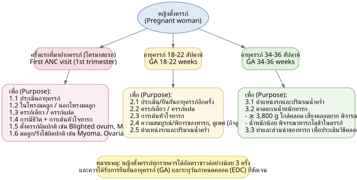
หมายเหตุ (Note): หญิงตั้งครรภ์ทุกรายควรได้อัลตราซาวด์ (Ultrasound) อย่างน้อย 3 ครั้ง ควรได้รับการยืนยันอายุครรภ์ (GA) และระบุวันกำหนดคลอด (EDC) ที่ชัดเจน
3.3 Topic 2: การจำแนกความเสี่ยงหญิงตั้งครรภ์จังหวัดพิจิตร
Pregnancy Risk Classification (Green / Yellow / Red / Pink Tiers), Phichit Province
Responsible: SP สาขาสูติกรรม | Date: 16 สิงหาคม 2566
สีเขียว (Green) - Very low / low risk → ANC at รพ.สต. (sub-district health promoting hospital) / primary care unit
1. Maternal age 18-34 years
2. Normal pre-pregnancy body weight
3. Body weight and abdominal growth appropriate for GA
4. Previous pregnancy was low-risk and delivered at term
5. No family history of diabetes
สีเหลือง (Yellow) - High risk → ANC at community hospital (รพ.ชุมชน) or Phichit Hospital; Refer per Guideline CPG according to condition found
1. Pregnancy age < 17 years
2. Pregnancy age ≥ 35 years
3. History of preterm birth
4. First pregnancy / 4th pregnancy or higher
5. Previous baby weight ≥ 4,000 grams
6. Previous uterine surgery (Previous C/S)
7. Anemia (Hct < 33%, Hb < 11)
8. Abnormal thalassemia screening result
9. Proteinuria detected
10. Glucosuria detected
11. Previous baby weight < 2,500 gm
12. BMI < 18.5 kg/m²
13. BMI ≥ 23 kg/m²
14. Weight gain < 1 kg/month
15. Weight > 100 kg
16. GDM Diet control
สีแดง (Red) - Very high risk → see OB-GYN directly
1. Diabetes mellitus
2. Hypertension
3. Thyroid disease
4. Psychiatric disease
5. Other internal medicine diseases
6. Rh negative blood group
7. History of ≥ 3 miscarriages
8. VDRL positive
9. HIV positive
10. HBsAg positive / Hepatitis B infection
11. BP ≥ 140/90 mmHg or higher
12. Uterine size not corresponding to GA (IUGR)
13. Twin pregnancy
14. Fetus in abnormal presentation (not cephalic) at ≥ 34 weeks
15. Bleeding during pregnancy
16. Pregnancy ≥ 40 weeks
17. Fetal movement < 10 times/day from 28 weeks onward
18. Rupture of membranes
19. Height < 145 cm
20. History of previous fetal abnormality or stillbirth
21. GDM on Insulin
สีชมพู (Pink) - Complicated → see Maternal-Fetal Medicine (MFM) OB-GYN
A. ภาวะแทรกซ้อนทางอายุรกรรมรุนแรง (Severe medical complications):
• Cardiac disease - moderate to severe
• DM with evidence of end-organ damage or uncontrolled, e.g., HbA1C ≥ 8.0%
• Family or personal history of genetic abnormalities
• Hemoglobinopathy
• Chronic HT with uncontrolled or associated with renal or cardiac disease
• Renal insufficiency with proteinuria ≥ 500 mg/24 hr, serum creatinine ≥ 1.5 mg/dL, or HT
• Pulmonary disease if severe restrictive or obstructive, including severe asthma
• HIV infection with CD4 < 200, VL > 1000
• Prior pulmonary embolus or DVT
• Severe systemic disease, including autoimmune condition
• Bariatric surgery history
• Epilepsy if poorly controlled or requires more than one anticonvulsant
• Cancer
B. ภาวะทางสูติกรรม (Obstetric conditions):
• Rh or other blood group immunization with complications
• Prior or current structural or chromosomal abnormality
• Desired or need for prenatal diagnosis or fetal therapy
• Periconceptional exposure to known teratogen
• Infection with or exposure to organism that causes congenital infection
• Higher-order multifetal gestation (triplets or more)
• Severe disorders of amniotic fluid volume
3.4 Topic 3: ระบบการฝากครรภ์คุณภาพ
Quality ANC System
Responsible: พญ.สุรีพร จันเข็ม | Date: 27 มิถุนายน 2566
Definition: ANC คุณภาพ (Quality ANC) per Ministry of Public Health = organized ANC service system for normal-risk pregnant women, following risk screening/assessment, that includes parent-school-standard education, history taking, physical exam, lab investigations, and vitamins per benefit entitlements.
Ten components:
1. 50-80% of pregnancies are not high risk; when the 1st ANC visit occurs before 12 weeks, thorough history-taking can cover family violence and other risk issues (past pregnancy, current pregnancy, medical conditions e.g. DM, heart disease, substance use, alcohol, smoking, readiness for pregnancy/parenting).
2. Risk screening to separate low-risk vs. at-risk women; at-risk women → refer for Case management.
3. Screening + confirmatory testing when indicated for hereditary diseases: Thalassemia, Down syndrome, Congenital hypothyroidism, and diabetes screening.
4. Oral health check, general physical exam, ultrasound, and uterine exam to estimate GA.
5. Voluntary lab testing: UA, Hct, CBC, VDRL, HBsAg, Anti-HIV, OF, DCIP - results disclosed to woman/husband with counseling.
6. Internal (pelvic) exam for abnormality/infection screening, cervical cancer screening (GA ≤ 14 weeks, or if last Pap > 1 year ago, or history of abnormal Pap) - via Speculum, if patient consents and no contraindication.
7. Diphtheria-tetanus vaccine.
8. Dietary behavior assessment, counseling, and dispensing of iodine, iron, and folate tablets throughout pregnancy.
9. Group-based parent-school-standard education with self-monitoring guidance for complications.
10. 24-hour contact channel between patient and health worker/facility for emergency assistance.
Folic acid: 400 micrograms/day, from before pregnancy through GA 12 weeks, to reduce Neural tube defect.
New ANC schedule ("ฝากครรภ์แนวใหม่"): increased from 5 visits to 8 visits:
• 12+6 wk
• 13-20+6 wk
• 21-26+6 wk
• 27-30+6 wk
• 31-34+6 wk
• 35-36+6 wk
• 37-38+6 wk
• 39-40+6 wk
(Form also captures where ANC was done / "NO ANC" / count of visits.)
Quality ANC Care Flow (แนวทางการดูแลหญิงตั้งครรภ์ตามเกณฑ์ฝากครรภ์คุณภาพ):
| GA Window | Activities | Refer to Phichit Hospital when... |
|---|---|---|
| 1st ANC / GA < 12 wk | History-taking to find risk; calculate GA; send Lab ANC; GDM screening (per criteria); U/S to confirm GA; PV | Per high-risk pregnancy criteria |
| GA 14-17 wk | Send Lab Quad test; refer to dental | Consider amniocentesis referral if High risk quad test |
| GA 18-21 wk | U/S to check for fetal abnormality | If fetal abnormality detected |
| GA 24-28 wk | GDM screening | - |
| GA 28-32 wk | Send Lab ANC 2nd time (at least 3 months after Lab 1) | - |
| GA 34-36 wk | U/S screen for IUGR | If fetal abnormality found, or Previous C/S |
| GA 37-38 wk | NST | If fetal abnormality detected |
| GA 39-40+6 wk | NST, U/S for amniotic fluid volume | If fetal abnormality detected, or approaching due date |
3.5 Topic 4: ภาวะโลหิตจางในหญิงตั้งครรภ์
Anemia in Pregnancy
Responsible: พญ.ฐิติมา เสมาทอง | Date: 27 มิถุนายน 2566
คำแนะนำสำหรับภาวะโลหิตจางในหญิงตั้งครรภ์ (Advice for anemia in pregnancy):
• Take folic acid and hematinic (blood-building) medication as prescribed by doctor, consistently, to increase red blood cell count and nutrient delivery to the fetus.
• If unable to take the supplement, promptly inform the doctor.
• Eat iron-rich foods, e.g., beans, black sesame, green leafy vegetables, egg yolk, various meats (beef, pork, chicken).
• Eat fruits high in vitamin C to aid iron absorption, e.g., orange, lime, guava.
Cross-reference (from Topic 2, Yellow tier): Anemia defined as Hct < 33%, Hb < 11 as a Yellow-risk criterion.
Cross-reference (from Topic 18, referral criteria): Severe anemia = Hct ≤ 25% is a referral trigger to Phichit/Bang Mun Nak/Taphan Hin hospitals.
Anemia in Pregnancy Care Algorithm
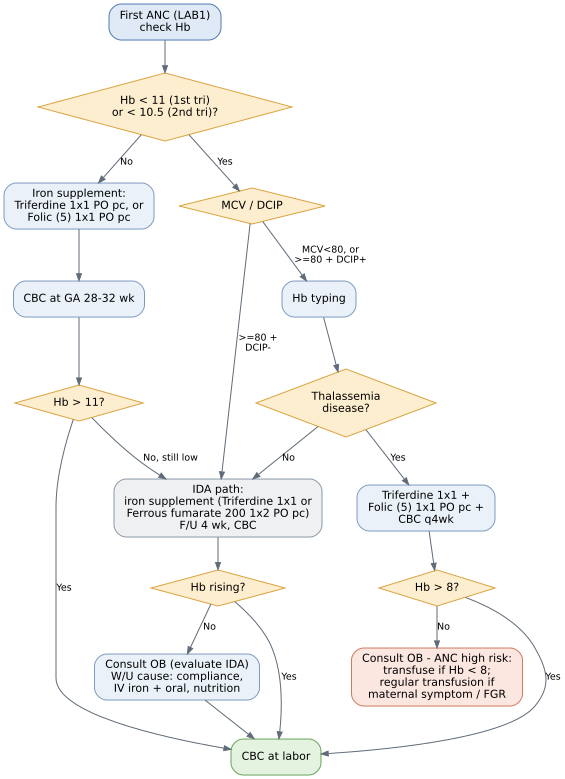
3.6 Topic 5: หญิงตั้งครรภ์ติดเชื้อไวรัสตับอักเสบบี
Hepatitis B in Pregnancy
Responsible: พญ.สุรีพร จันเข็ม | Date: 27 มิถุนายน 2566
HBV in Pregnancy - Management Algorithm (แนวทางการดูแลหญิงตั้งครรภ์และทารก ติดเชื้อไวรัสตับอักเสบบี)
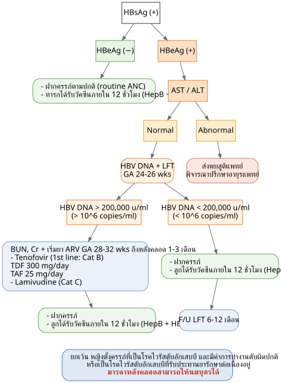
Exception note: Pregnant women with Hepatitis B who have abnormal liver function OR who are on continuous treatment medication - mothers can still breastfeed postpartum.
3.7 Topic 6: ภาวะความดันโลหิตสูงในหญิงตั้งครรภ์
Hypertension in Pregnancy
Responsible: พญ.ภัทราพร เอี้ยงลี่ | Date: 25 พฤษภาคม 2566
6A. Chronic Hypertension (CHT)
Initial workup:
• Ultrasound to confirm GA
• Lab 1
• Baseline CHT labs: CBC, BUN/Cr, AST, ALT, Urine protein 24 hours or UPCR, EKG 12 lead - before refer
• Refer to OB-GYN
Management steps:
1. Start Aspirin (81 mg) 2 tabs at bedtime (2xhs) at GA 12-28 weeks (optimally before 16 weeks; continue through GA 36 weeks).
2. Advise home or รพ.สต. BP monitoring 3 times/week; target < 140/90 mmHg.
3. Ultrasound every trimester.
4. Start NST at 32 weeks.
5. If BP > 140/90 mmHg → consider starting antihypertensive medication (started by OB-GYN or internist only).
6. Monitor for severe preeclampsia or Chronic hypertension superimposed on preeclampsia (new-onset proteinuria).
7. If BP > 160/110 mmHg with headache, epigastric pain, blurred vision, facial swelling, seizures → advise to see doctor and consult OB-GYN.
8. Deliver at 37 weeks.
6B. PIH (Pregnancy-Induced Hypertension) - two sub-types
| Gestational hypertension | Preeclampsia | |
|---|---|---|
| Definition | BP > 140/90 mmHg at GA > 20 weeks, without proteinuria | BP > 140/90 mmHg at GA > 20 weeks, with proteinuria |
Shared management (both types):
1. Advise home or รพ.สต. BP monitoring 3x/week; target < 140/90 mmHg.
2. Ultrasound every trimester.
3. Start NST at 32 weeks.
4. Monitor for severe preeclampsia.
5. If BP > 160/110 mmHg with headache, epigastric pain, blurred vision, facial swelling, seizures → advise to see doctor and consult OB-GYN for every case (*ทุกราย).
6. Refer to OB-GYN; deliver at 37 weeks.
3.8 Topic 7: หญิงตั้งครรภ์ที่มีภาวะเจ็บครรภ์คลอดก่อนกำหนด
Preterm Labor
Responsible: นพ.นิรทร ศรีสุโข | Dates: 25 เมษายน 2566 (main); reference update Aug 2023 (AJOG); RTCOG Nov 2564 guideline cited
Definitions (ความหมาย)
• Preterm labor: labor before GA 37 weeks (GA 24-36+6 weeks, or birth weight ≥ 500 grams).
• Preterm PROM (Preterm premature/prelabor rupture of membrane): rupture of membranes before GA 37 weeks.
Diagnosis (การวินิจฉัย)
• Premature uterine contraction: uterine tightening before term, cervical dilation status not specified.
• Preterm labor: cervix dilated ≥ 2 cm, or effacement 80-100%.
• Threatened preterm labor: cervix dilated < 2 cm or closed.
Birth weight categories
• Low birth weight: 1,500-2,500 gms
• Very low birth weight: 1,000 - < 1,500 gms
• Extremely low birth weight: < 1,000 gms
Causes (สาเหตุ)
1. Maternal age < 20 or > 35 years
2. BMI (too low or too high)
3. Heavy physical activity
4. History of prior preterm birth
5. History of miscarriage, abnormal uterus/cervix, multiple D&C, or cervical surgery
6. Twin pregnancy (natural or IVF)
7. Physical/mental health: anemia, dental caries, UTI; infections (bacterial vaginosis, trichomoniasis, gonorrhea, chlamydia, HIV, syphilis, viral infections); nutrition/pre-pregnancy weight; medical disease (thyroid, HT, DM, asthma, heart disease); mental health issues (depression, stress); fetal/placental/amniotic fluid abnormalities (chromosomal abnormality, anomaly, IUGR, fetal death, placenta previa, placenta accreta, oligo/polyhydramnios); other chronic disease; prior abdominal surgery; substance use
Full diagnostic definitions
• Premature uterine contraction: GA < 37 wks with uterine contraction (broad term, cervix dilation not specified).
• Preterm labor: (1) GA < 37 wks; (2) Regular uterine contraction more frequent than every 8 minutes (theoretically: 4 contractions in 20 min, or 8 in 60 min); (3) Cervical progression: dilation ≥ 2 cm or effacement 80-100%+.
• Threatened preterm labor: (1) GA < 37 wks; (2) Regular contractions more frequent than every 8 min; (3) No cervical progression or minimal (dilation < 2 cm, effacement < 80%).
• Preterm PROM: GA < 37 wks with rupture of membrane before labor.
Management (การดูแลรักษา) - "3 drugs to always consider" in preterm labor
1. Antibiotics (GBS Prophylaxis): Ampicillin 2 gm IV q 6 hrs (if not penicillin-allergic).
2. Steroid for lung maturity: Dexamethasone 6 mg IM q 12 hrs x 4 doses.
3. Tocolytic drugs: consider if GA < 34 weeks; physician must weigh "contraindications" before "indications."
Antenatal corticosteroid - additional considerations:
• GA 24 to 33+6 wks with preterm labor:
• Never received antenatal corticosteroid before → give Single course.
• Received 1 course before:
• ≤ 7 days since first dose → do NOT give steroid.
• > 7 days since first dose → give Rescue course.
• Received ≥ 2 courses before → do NOT give steroid.
• GA 34 to 36+6 wks with preterm labor:
• Never received before → give Single course.
• Received before → do NOT give steroid.
Tocolytic drug examples (ตัวอย่างยาคลายตัวมดลูก)
| Drug | Dose/Route | Contraindications |
|---|---|---|
| IV Terbutaline (Bricanyl) | 2.5 mg + 5%D/W 500 ml IV 20-30 ml/hr. If maternal DM: Bricanyl 2.5 mg + NSS 500 ml IV 20-30 ml/hr | Thyroid disease, Cardiovascular disease, Uncontrolled DM/HT, Hydrops fetalis, Severe anemia |
| IV MgSO4 | 10% MgSO4 40 ml (4 gm) IV drip in 15-30 min, then 50% MgSO4 40 ml (20 gm) + 5%D/W 460 ml (Total 500 ml) IV 50 ml/hr (2 gm/hr). If maternal DM: 50% MgSO4 40 ml (20 gm) + NSS 500 ml IV 20-30 ml/hr | Myasthenia gravis, renal impairment |
| Oral Nifedipine (Adalat) | 10 mg 1 tab oral every 15-30 minutes (not exceeding 40 mg in the first hour), then 10-20 mg oral every 4-6 hours x 48 hours (Maximum 120 mg/day) | Hypotension |
Management flowcharts (ที่มา: RTCOG guideline พฤศจิกายน 2564):
การดูแลรักษาการเจ็บครรภ์คลอดก่อนกำหนด - Preterm Labor Management
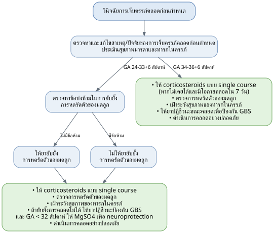
การดูแลรักษาภาวะถุงน้ำคร่ำรั่วก่อนกำหนดในอายุครรภ์น้อยกว่า 37 สัปดาห์ (PPROM)
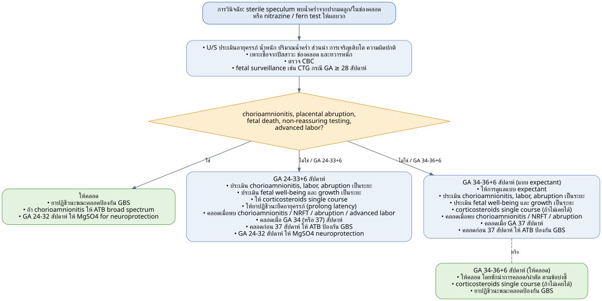
การป้องกันการคลอดก่อนกำหนด - Prevention of Preterm Delivery
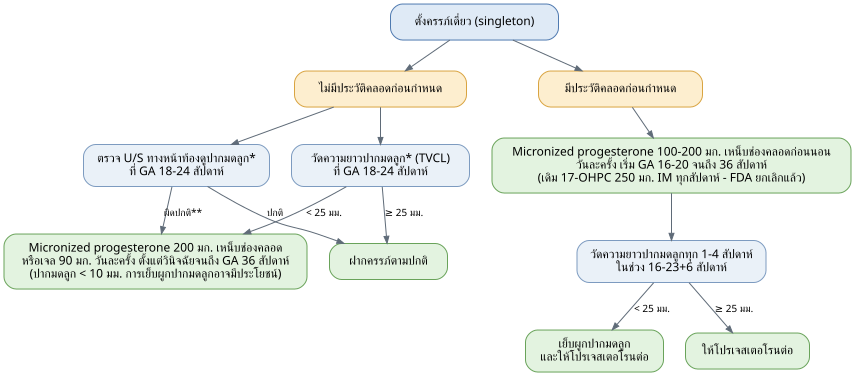
Footnotes: *อาจพิจารณาทำ; **Funnelling หรือ short cervix (< 30 mm); TVCL: Transvaginal cervical length; 17-OHPC: 17α-hydroxy progesterone caproate
วิธีป้องกัน (Prevention) - by cause
1. Age: appropriate age 20-35 yrs. If < 20 yrs → counsel on nutrition, self-care, ANC attendance, symptom awareness, avoid substances. If > 35 yrs → counsel on Down screening, DM testing, watch for HT/preeclampsia.
2. BMI: if underweight → increase weight appropriately; if overweight → control weight.
3. Heavy work: reduce heavy work, increase rest.
4. History of preterm birth: early ANC, preventive medication, watch for abnormal symptoms.
5. History of miscarriage/abnormal uterus-cervix/D&C/cervical surgery: refer OB-GYN for risk assessment; watch for abnormal symptoms.
6. Twin pregnancy: refer OB-GYN for ANC (high-risk pregnancy).
7. Physical/mental health items 7.1-7.9 each with specific counseling/treatment (hematinics, dental referral, treat infections, balanced diet, appropriate weight gain, specialist consult to control disease - consider termination indication if disease is severe, psychiatric support, regular ANC with growth/Down/U/S monitoring, control disease before conception or refer OB-GYN if unplanned pregnancy, informed consent for surgery risks including preterm birth risk, avoid substance use).
หมายเหตุ (Notes on progesterone / cerclage)
• Preventive medication per Royal Thai College of OB-GYN (RTCOG), updated 18 พฤศจิกายน 2564: if history of prior preterm birth → consider Micronized progesterone 200 mg, 1 tab vaginal suppository at bedtime (hs), GA 16 to 36+6 wks (at the time of writing, still pending drug procurement/formulary approval).
• US FDA announcement: Proluton (17-OHPC) was discontinued (withdrawn) as of April 2023; awaiting clear guidance from RTCOG or Department of Medical Services on use for preterm birth prevention.
• Updated evidence (AJOG & Gynecology MFM, August 2023 expert opinion): if history of preterm birth alone, without short cervix found → give Vaginal progesterone (Micronized progesterone) for prevention in this pregnancy. If history of preterm birth AND short cervix → consider Cervical cerclage. If Cervical length < 25 mm (even without prior preterm birth history) → consider Vaginal progesterone for prevention.
• Current Phichit Hospital practice: phasing out Proluton, switching to Micronized progesterone for patients with prior preterm birth history AND cervical length < 25 mm, whether or not Cervical cerclage has been done.
Standing Orders
Preterm labor GA < 34 wks
• One day Order: Admit LR; Counseling; NPO; IV Fluid; Blood for CBC; Lab before inhibit: BUN, Cr, Electrolyte, Blood sugar (DTX); if no prior ANC → send Anti-HIV, VDRL, HBsAg, ABO/Rh blood group; if ANC done but no Lab 2 → send Anti-HIV, VDRL; UA; Speculum + PV; TAS; NST/EFM; Dexamethasone 6 mg IM q 12 hrs x 4 doses; consult OB-GYN to consider tocolysis if no contraindication (IV: Bricanyl, MgSO4; Oral: Nifedipine (Adalat)); if labor cannot be inhibited, prefer vaginal delivery before C/S per OB indication; Observe UC, FHR, cervical progression; Consult Ped; Consult Anes (if C/S).
• Continuous Order: First NPO (assess whether inhibition will succeed); Record V/S; Absolute bed rest; Med: GBS Prophylaxis - Ampicillin 2 g IV q 6 hrs until delivery.
Preterm labor GA ≥ 34 wks
• One day Order: Admit LR; Counseling; NPO; IV Fluid; Blood for CBC; same lab logic as above; UA; PV; TAS; NST/EFM; Dexamethasone 6 mg IM q 12 hrs x 4 doses (as able); Expectant management (should NOT inhibit) - prefer vaginal delivery before C/S per OB indication; Observe UC, FHR, cervical progression; Consult Ped; Consult Anes (if C/S).
• Continuous Order: First NPO (assess whether delivery imminent); Record V/S; Absolute bed rest; Med: GBS Prophylaxis - Ampicillin 2 g IV q 6 hrs until delivery.
Preterm PROM GA < 34 wks
• One day Order: Admit LR; Counseling; NPO; IV Fluid; Blood for CBC; Lab before inhibit: BUN, Cr, Electrolyte, Blood sugar (DTX); ANC lab logic same as above; UA; Speculum: nitrazine test, cough test, fern test; TAS; NST/EFM; Dexamethasone 6 mg IM q 12 hrs x 4 doses; if Uterine contraction present → consult OB-GYN, consider inhibit if no contraindication (IV: Bricanyl, MgSO4; Oral: Nifedipine (Adalat)); if cannot inhibit, prefer vaginal delivery before C/S per OB indication; Observe UC, FHR, cervical progression; Consult Ped; Consult Anes (if C/S); Observe signs of chorioamnionitis if FHR ≥ 160 bpm, HR > 120, BT ≥ 38°C, foul-smelling vaginal discharge.
• Continuous Order: First NPO (assess for UC); Record V/S; Absolute bed rest; Med - Antibiotics for prolonging latency period: Ampicillin 2 gm IV q 6 hrs x 2 days, then Amoxicillin 250 mg po q 8 hrs x 5 days; Erythromycin 250 mg po q 6 hrs x 7 days.
• If labor enters the active phase (delivery imminent): stop the latency antibiotics (including erythromycin) and the oral step-down; give Ampicillin 2 g IV q 6 hrs until delivery as intrapartum GBS prophylaxis.
Preterm PROM GA ≥ 34 wks
• One day Order: Admit LR; Counseling; NPO; IV Fluid; Blood for CBC; UA; Speculum: nitrazine test, cough test, fern test; TAS; NST/EFM; Dexamethasone 6 mg IM q 12 hrs x 4 doses (as able); consider termination of pregnancy (TOP) - prefer vaginal delivery before C/S per OB indication; Observe UC, FHR, cervical progression; Consult Ped; Consult Anes (if C/S); Observe signs of chorioamnionitis if FHR ≥ 160 bpm, HR > 120, BT ≥ 38°C, foul-smelling vaginal discharge.
• Continuous Order: First NPO (assess whether delivery imminent); Record V/S; Absolute bed rest; Med: GBS Prophylaxis - Ampicillin 2 g IV q 6 hrs until delivery.
• If Preterm PROM with signs of chorioamnionitis (maternal fever ≥ 38°C + other symptoms) → start antibiotics and deliver promptly:
1. Ampicillin 2 g IV q 6 hrs.
2. Gentamicin 240 mg + 5%D/W 100 ml IV drip in 60 min OD.
3. If C/S: Metronidazole 500 mg IV q 8 hrs or Clindamycin 900 mg IV q 8 hrs.
Standing Order Tables - Preterm Labor / Preterm PROM
Table: Preterm labor GA < 34 wks
| One day Order | Continuous Order |
|---|---|
| Admit LR | แรกรับ NPO (ประเมินว่าจะยับยั้งสำเร็จหรือไม่) |
| Counseling | Record V/S |
| NPO | Absolute bed rest |
| IV Fluid | Med: GBS Prophylaxis - Ampicillin 2 g iv q 6 hrs. until delivery |
| Blood for CBC | |
| Lab ก่อน inhibit : BUN, Cr, Electrolyte, Blood sugar (DTX) - ถ้าไม่เคย ANC : ส่ง lab AntiHIV, VDRL, HBsAg, ABO / Rh blood group - ถ้าเคย ANC แต่ไม่มี lab 2 : ส่ง lab Anti-HIV, VDRL | |
| UA | |
| Speculum + PV | |
| TAS | |
| NST / EFM | |
| Dexamethasone 6 mg IM q 12 hrs. x 4 doses | |
| ปรึกษาสูติแพทย์ พิจารณา inhibit ถ้าไม่มีข้อห้าม - IV : Bricanyl, MgSO4 - Oral : Nifedipine (Adalat) | |
| ถ้าไม่สามารถยับยั้งการคลอดได้ พิจารณาคลอดทางช่องคลอดก่อน C/S as OB indication | |
| Observe UC, FHR and cervical progression | |
| Consult Ped | |
| Consult Anes (หาก C/S) |
Table: Preterm labor GA ≥ 34 wks
| One day Order | Continuous Order |
|---|---|
| Admit LR | แรกรับ NPO (ประเมินว่าจะคลอดหรือไม่) |
| Counseling | Record V/S |
| NPO | Absolute bed rest |
| IV Fluid | Med: GBS Prophylaxis - Ampicillin 2 g iv q 6 hrs. until delivery |
| Blood for CBC - ถ้าไม่เคย ANC : ส่ง lab AntiHIV,VDRL, HBsAg, ABO / Rh blood group - ถ้าเคย ANC แต่ไม่มี lab 2 : ส่ง lab Anti-HIV, VDRL | |
| UA | |
| PV | |
| TAS | |
| NST / EFM | |
| Dexamethasone 6 mg IM q 12 hrs. x 4 doses (เท่าที่ได้) | |
| Expectant management (ไม่ควร Inhibit) พิจารณาคลอดทางช่องคลอดก่อน C/S as OB indication | |
| Observe UC, FHR and cervical progression | |
| Consult Ped | |
| Consult Anes (หาก C/S) |
Table: Preterm PROM GA < 34 wks
| One day Order | Continuous Order |
|---|---|
| Admit LR | แรกรับ NPO (ประเมินว่าจะมี UC หรือไม่) |
| Counseling | Record V/S |
| NPO | Absolute bed rest |
| IV Fluid | Med: Antibiotics for prolong latency period - Ampicillin 2 gm iv q 6 hrs. x 2 days then Amoxicillin 250 mg po q 8 hrs. x 5 days - Erythromycin 250 mg po q 6 hrs. x 7 days |
| Blood for CBC | \\\* ถ้าเข้าสู่ Active phase: ในช่วง 2 วันแรก → off Erythromycin ให้ยา Ampicillin 2 gm iv q 6 hrs. ต่อ; ในช่วง 5 วันหลัง → เริ่มยา Ampicillin 2 g iv q 6 hrs. until delivery |
| Lab ก่อน inhibit : BUN, Cr, Electrolyte, Blood sugar (DTX) - ถ้าไม่เคย ANC : ส่ง lab AntiHIV, VDRL, HBsAg, ABO / Rh blood group - ถ้าเคย ANC แต่ไม่มี lab 2 : ส่ง lab Anti-HIV, VDRL | |
| UA | |
| Speculum : nitrazine test, cough test, fern test | |
| TAS | |
| NST / EFM | |
| Dexamethasone 6 mg IM q 12 hrs. x 4 doses | |
| ถ้ามี Uterine contraction ปรึกษาสูติแพทย์ พิจารณา inhibit ถ้าไม่มีข้อห้าม - IV : Bricanyl, MgSO4 - Oral : Nifedipine (Adalat) | |
| ถ้าไม่สามารถยับยั้งการคลอดได้ พิจารณาคลอดทางช่องคลอดก่อน C/S as OB indication | |
| Observe UC, FHR and cervical progression | |
| Consult Ped | |
| Consult Anes (หาก C/S) | |
| Observe signs of chorioamnionitis if FHR ≥ 160 bpm, HR > 120, BT ≥ 38 C, Foul smell vaginal D/C |
Table: Preterm PROM GA ≥ 34 wks
| One day Order | Continuous Order |
|---|---|
| Admit LR | แรกรับ NPO (ประเมินว่าจะคลอดหรือไม่) |
| Counseling | Record V/S |
| NPO | Absolute bed rest |
| IV Fluid | Med: GBS Prophylaxis - Ampicillin 2 g iv q 6 hrs. until delivery |
| Blood for CBC | \\\* Preterm PROM ถ้ามี sign chorioamnionitis เช่น มารดามีไข้ ≥ 38°c และอาการร่วมอื่นๆ → เริ่มยาฆ่าเชื้อ และให้คลอดโดยไว → 1. Ampicilin 2 g iv q 6 hrs. 2. Gentamicin 240 mg + 5%D/W 100 ml iv drip in 60 min OD 3. หาก C/S: Metronidazole 500 mg iv q 8 hrs. หรือ Clindamycin 900 mg iv q 8 hrs. |
| UA | |
| Speculum : nitrazine test, cough test, fern test | |
| TAS | |
| NST / EFM | |
| Dexamethasone 6 mg IM q 12 hrs. x 4 doses (เท่าที่ได้) | |
| พิจารณา termination of pregnancy (TOP) โดยคลอดทางช่องคลอดก่อน C/S as OB indication | |
| Observe UC, FHR and cervical progression | |
| Consult Ped | |
| Consult Anes (หาก C/S) | |
| Observe signs of chorioamnionitis if FHR ≥ 160 bpm, HR > 120, BT ≥ 38 C, Foul smell vaginal D/C |
3.9 Topic 8: ภาวะตกเลือดหลังคลอด
Postpartum Hemorrhage (PPH)
Responsible: นพ.นิรทร ศรีสุโข | Date: 25 เมษายน 2566 | RTCOG reference: 20 มีนาคม 2563
Definition
• Blood loss ≥ 500 mL from normal (vaginal) delivery; blood loss ≥ 1,000 mL from C/S.
• Alert at 250 mL (should not wait until reaching the PPH threshold to act; goal is to minimize blood loss as much as possible).
• Goal: recognition + early diagnosis + early management.
TIME protocol
1. Teamwork - CALL FOR HELP
• 1.1 Doctor, nurses, nurse assistants, patient-care aides.
• 1.2 Experienced OB-GYN, anesthesiologist.
2. Initial resuscitation and investigation
• 2.1 Blood loss 500-1,000 mL:
• 2.1.1 Uterine massage
• 2.1.2 NPO + Warm isotonic free flow x 2 lines (Large bore No. 16, 18)
• 2.1.3 Lab: CBC, PT, PTT, INR, BUN Cr electrolyte, AST, ALT, G/M (Group & Match) blood components (if available), and stat Hct.
• 2.1.4 Find cause and initial correction: Tone (70%), Trauma, Tissue, Thrombin (the "4 Ts").
• 2.2 Blood loss > 1,000 mL:
• Oxygen supplement: oxygen mask with bag 10 LPM.
• Hemodynamic evaluation: continuous V/S monitoring (evaluate stage of blood loss); U/O monitoring with retained Foley catheter.
3. Medications - no delay
• 3.1 First-line drugs - "TOM":
• 3.1.1 Tranexamic acid - 1 gram + NSS 100 ml IV drip in 15 min.
• 3.1.2 Oxytocin - 40 units in NSS 500 mL IV 125 mL/hr, OR Oxytocin 80 units in NSS 1000 ml / 5%D/N/2 1000 ml IV 120 ml/hr (C/I: hypotension).
• 3.1.3 Methergine - 0.2 mg IM / IV slowly push q 2-4 hr (max 5 doses/day) (C/I: hypertension, cardiovascular disease, on antiretroviral drugs).
• 3.2 Second-line drugs:
• 3.2.1 Cytotec - 800-1,000 mcg rectal suppository.
• 3.2.2 Nalador - 500 mcg + NSS 500 mL IV drip 100 mcg/hr (max 500 mcg/hr) (C/I: asthma, cardiovascular disease, severe hepatic/renal impairment).
4. End of bleeding - Refer to Phichit Hospital to stop bleeding
• 4.1 Resuscitation + Hemodynamic monitoring
• 4.2 Medication: Uterotonic agents
• 4.3 Communication: call the refer center, OB-GYN, and labor room.
"4 Ts" causes illustrated (images): Trauma (Cervical laceration, vaginal laceration); Tone (Uterine atony); Tissue (Retained placenta); also Uterine inversion shown as an image.
Prevention/treatment flowchart ("การป้องกันและรักษาภาวะตกเลือดหลังคลอดจากมดลูกไม่หดรัดตัว," source: RTCOG guideline, 20 มีนาคม 2563)
ที่มา (Source): แนวทางเวชปฏิบัติของราชวิทยาลัยสูตินรีแพทย์แห่งประเทศไทย เรื่องการป้องกันและรักษาภาวะตกเลือดหลังคลอด (ฉบับสรุปคำแนะนำ) 20 มีนาคม 2563
RTCOG PPH (Uterine Atony) Prevention & Management Flowchart
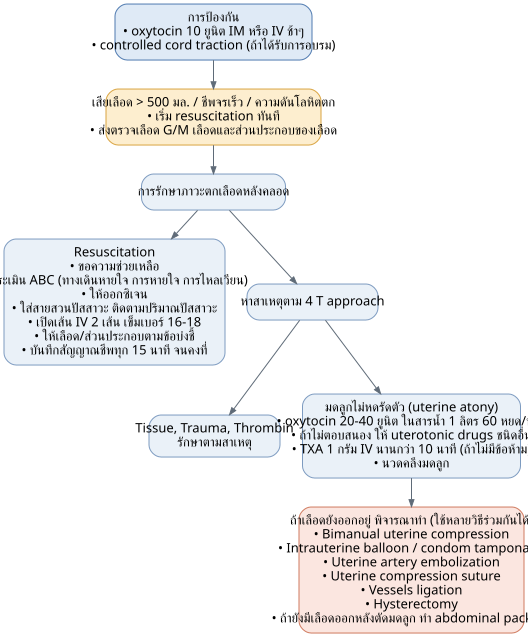
TeamSTEPPs for PPH Flowchart (with timeline)
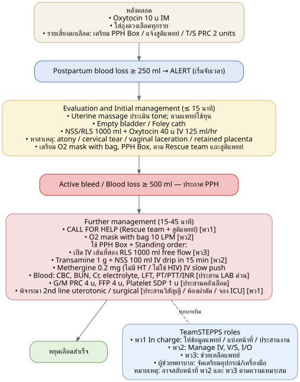
Standing Order examples
ตัวอย่าง Standing order for PPH at รพ.พิจิตร (Phichit Hospital, with OB-GYN):
• One day order: Call for help; assess ABC; Uterine massage; O2 mask with bag 10 LPM; Large bore IV x2 (RLS 1000 ml IV free flow); Hct stat, Dtx stat; Blood for CBC, BUN, Cr, Electrolyte, LFT, PTT, INR; Group match blood components - PRC 4 units, FFP 4 units, Platelet conc (SDP) 1 unit; NSS 500 ml + Oxytocin 40 units IV drip 125 ml/hr; Transamine 1 gm + NSS 100 ml IV drip in 15 min; Methergine 0.2 mg (if no contraindication) IV slowly push / IM; retained Foley catheter; find cause of bleeding (Uterine atony, Cervical tear, Vaginal laceration, Retained placenta); second-line uterotonic drugs/surgical procedure as needed; Observe V/S q 15 min; Observe urine output q 60 min (notify if < 30 ml/1 hr); counseling and informed consent; document in medical record.
• Continuous order: NPO; Record V/S, I/O; retained Foley catheter; Communication with nursing team/aides/reinforcement shift, OB-GYN staff/intern, anesthesiologist/OR team, Blood bank, Lab, reserve ICU bed.
ตัวอย่าง Standing Order for PPH at รพ.ชุมชนที่ไม่มีสูติแพทย์ (community hospital without OB-GYN):
• One day order: Call for help; assess ABC; Uterine massage; O2 mask with bag 10 LPM; Large bore IV x2 (RLS 1000 ml IV free flow); Hct stat, Dtx stat; Blood for CBC, BUN, Cr, electrolyte, LFT, PT, PTT, INR; Group match blood components - PRC 1-4 units (as available); NSS 500 ml + Oxytocin 40 units IV drip 125 ml/hr; Transamine 1 gm + NSS 100 ml IV drip in 15 min; Methergine 0.2 mg (if no contraindication) IV slowly push / IM; retained Foley catheter; find cause of bleeding as able (Uterine atony, Cervical tear, Vaginal laceration, Retained placenta - do not manually remove placenta); Observe V/S q 15 min; Observe urine output q 60 min (notify if < 30 ml/1 hr); counseling and informed consent; document; Refer patient (consider Bimanual uterine compression during transfer/refer).
• Continuous order: NPO; Record V/S, I/O; retained Foley catheter; Communication: nursing team/aides, intern/senior resident, Phichit Hospital OB-GYN staff, Phichit refer center, Phichit labor room.
Standing Order Tables - PPH
Table: Standing order for PPH รพ.พิจิตร (with สูติแพทย์/obstetrician available)
| One day order (ระบุวันที่ เวลา) | Continuous order (ระบุวันที่ เวลา) |
|---|---|
| Call for help | NPO |
| ประเมิน ABC | Record V/S, I/O |
| Uterine massage | Retained foley's cath |
| O₂ mask with bag 10 LPM | |
| Large bore IV 2 เส้น RLS 1000 ml IV free flow x 2 | Communication: ทีมพยาบาล / ผู้ช่วยพยาบาล / พนักงานช่วยเหลือคนไข้ / เวรเสริม - สตาฟ สูติฯ / แพทย์ใช้ทุน - วิสัญญีแพทย์ / ทีมห้องผ่าตัด - คลังเลือด (Blood bank) - ห้องปฏิบัติการ - จอง ICU |
| Hct stat, Dtx stat | |
| Blood for CBC,BUN,Cr,Electrolyte,LFT,PTT,INR | |
| Group match blood components: PRC 4 unit, FFP 4 units, Platelet conc (SDP) 1 unit | |
| NSS 500 ml + Oxytocin 40 units IV drip 125 ml/hr | |
| Transamine 1 gm + NSS 100 ml IV drip in 15 min | |
| Methergine 0.2 mg (เมื่อไม่มีข้อห้าม) IV slowly push / IM | |
| Retained foley cath | |
| Finding cause of bleeding: Uterine atony / Cervical tear / Vaginal laceration / Retained placenta | |
| Second line uterotonic drugs/Surgical procedure ..................... | |
| Observe V/S q 15 min | |
| Observe Urine output q 60 min if < 30ml /1 hr pls. notify | |
| Counseling and informed consent ผู้ป่วยหรือญาติ | |
| บันทึกเวชระเบียน |
Table: Standing Order for PPH รพ.ชุมชนที่ไม่มีสูติแพทย์ (community hospital without obstetrician)
| One day order (ระบุวันที่ เวลา) | Continuous order (ระบุวันที่ เวลา) |
|---|---|
| Call for help | NPO |
| ประเมิน ABC | Record V/S, I/O |
| Uterine massage | Retained foley's cath |
| O₂ mask with bag 10 LPM | |
| Large bore IV 2 เส้น RLS 1000 ml IV free flow x 2 | Communication: ทีมพยาบาล / ผู้ช่วยพยาบาล / พนักงานช่วยเหลือคนไข้ - แพทย์ใช้ทุน / รุ่นพี่แพทย์ใช้ทุน - สตาฟสูติฯ รพ.พิจิตร - ศูนย์ refer รพ.พิจิตร - ห้องคลอด รพ.พิจิตร |
| Hct stat, Dtx stat | |
| Blood for CBC, BUN, Cr, electrolyte, LFT, PT, PTT, INR | |
| Group match blood components: PRC 1-4 units (เท่าที่มี) | |
| NSS 500 ml + Oxytocin 40 units IV drip 125 ml/hr | |
| Transamine 1 gm + NSS 100 ml IV drip in 15 min | |
| Methergine 0.2 mg (เมื่อไม่มีข้อห้าม) IV slowly push / IM | |
| Retained foley's cath | |
| Finding cause of bleeding (เท่าที่ได้): Uterine atony / Cervical tear / Vaginal laceration / Retained placenta (ห้ามล้วงรก) | |
| Observe V/S q 15 min | |
| Observe Urine output q 60 min if < 30ml /1 hr pls. notify | |
| Counseling and informed consent ผู้ป่วยหรือญาติ | |
| บันทึกเวชระเบียน | |
| Refer ผู้ป่วย (พิจารณา Bimanual uterine compression ระหว่าง refer) |
3.10 Topic 9: โรคเบาหวานในหญิงตั้งครรภ์
GDM / DM in Pregnancy
Responsible: พญ.ภัทราพร เอี้ยงลี่ | Date: 25 พฤษภาคม 2566
9A. GDM screening flow (ประเมินความเสี่ยงของ GDM ที่ ANC ครั้งแรก)
High risk criteria (any one of the following):
• Age ≥ 35 years
• Glucosuria (urine sugar > 2+)
• BMI > 23 combined with at least 1 of the following:
• Family history (first-degree relative) of DM
• Previous baby weight > 4,000 grams
• Previous history of GDM in a prior pregnancy
• Hypertension
• Hyperlipidemia
• History of PCOS
• History of HbA1C > 5.7% or impaired glucose metabolism
• Signs of insulin resistance, e.g., BMI > 40, acanthosis nigricans
Screening flow:
• High risk → screen with 50 gm GCT at the first ANC visit (GA at first visit).
• If < 140 mg/dl → screen again with 50 gm GCT at GA 24-28 weeks.
• If > 140 mg/dl → send 100 gm OGTT.
• Not high risk → screen with 50 gm GCT at GA 24-28 weeks.
• If < 140 mg/dl → no further testing needed.
• If > 140 mg/dl → send 100 gm OGTT.
100 gm OGTT interpretation:
• 1 abnormal value (with normal FBS) → track with FBS and 1 hr PP at 1 week, target FBS < 95, 1 hr PP < 140 mg/dL.
• Achieved target → track FBS and 1 hr PP every 2-4 weeks; U/S to assess fetal weight every trimester; advise fetal kick counting at GA 28 weeks; start NST at GA 36 weeks, weekly until delivery (if overt DM or GDM on insulin → start NST at GA 32 weeks, every visit). Deliver at GA 39-40 weeks or per obstetric indication.
• Not achieved → refer to OB-GYN and internist.
• All values normal → repeat 100 gm OGTT at GA 24-28 weeks.
Postpartum note: women diagnosed with GDM → follow-up at 4-12 weeks postpartum with 75 gm OGTT (checking FBS and 2-hr value of 75 gm OGTT).
9B. Pregestational DM - screening and treatment
Diagnostic criteria (any one):
1. FBS ≥ 126 mg%
2. HbA1C ≥ 6.5
3. Random BS ≥ 200 mg%
4. 2-hr value of 75 gm OGTT ≥ 200
Management:
• Refer to MFM for fetal echo - every case.
• ANC only at hospitals with an OB-GYN; general practitioners or interns must NEVER start medication themselves.
• Delivery GA: 39 - 39+6 weeks.
• Start NST at GA 32 weeks, every hospital visit thereafter.
Referral indications to deliver at hospital with OB-GYN:
1. GDM mother with weight > 100 kgs.
2. EFW > 3,500 gms.
• (Otherwise, can phone-consult OB-GYN case by case.)
9C. Intrapartum and postpartum management of diabetic pregnancy
On insulin:
• NST on admission.
• If not yet NPO, give insulin as usual.
• During NPO (e.g., before C/S or in active labor): NPO; DTX on admission and every 1-2 hrs (per doctor's order); IV details per CPG.
Not on insulin:
• NST on admission.
• If not yet NPO, monitor blood sugar before breakfast and dinner.
• If starting NPO → give 5% D/N/2 IV fluid and DTX every 1-2 hrs.
Postpartum:
• GDM: can stop insulin.
• Pregestational DM Type I: continue insulin (physician discretion).
• Pregestational DM Type II: monitor DTX every 4-6 hrs or before meals for 2 days; target glucose 100-180 mg/dL; can resume pre-pregnancy medication dose.
• Recommend permanent or semi-permanent contraception; if patient accepts implant/injectable contraception, administer before discharge.
• CUP Mueang inpatients: forward follow-up data to medicine department. CUP outside Mueang: write referral-back form specifying clear follow-up instructions.
Follow-up appointments (การนัด):
• GDM patients in Mueang district: postpartum visit at 4 weeks, plus 75 g OGTT at gynecology clinic.
• GDM patients from other districts: follow-up at nearby hospital.
• Pregestational DM (all cases): postpartum visit at 4 weeks AND diabetes clinic appointment at 4 weeks with FBS (per diabetes clinic physician).
9D. Diabetes risk assessment form (แบบประเมินความเสี่ยงต่อเบาหวานระหว่างตั้งครรภ์)
ครั้งที่ 1 (1st screen) - those with High risk factors:
• BMI > 23
• Age > 35 years
• First-degree relative with DM (parent, sibling)
• Glucosuria detected
• Previous GDM
• Twin pregnancy or previous baby > 4000 gm, or history of stillbirth
ครั้งที่ 2 (2nd screen) - everyone at GA 24-28 wks:
• Low or moderate risk - everyone
• High-risk group that was normal on 1st screen; if 1st screen was abnormal → go straight to 100 gm OGTT
Special note: if 50 gm GCT > 250 mg% → send FBS and HbA1C directly. If 100 gm OGTT is still desired, admit the patient to perform it, due to risk of DKA.
3.11 Topic 10: โรคไทรอยด์ในหญิงตั้งครรภ์
Thyroid Disease in Pregnancy
Responsible: พญ.ตฤณยา ไชยวงศา | Date: 27 กรกฎาคม 2566
10A. Hyperthyroidism in pregnancy (แนวทางการดูแลและส่งต่อผู้ป่วยที่มีภาวะไทรอยด์สูงระหว่างตั้งครรภ์)
Population: Pregnant women with hyperthyroidism, OR history of hyperthyroidism previously treated with radioactive iodine or surgery, OR previous delivery of a baby diagnosed with hyperthyroidism.
Dual referral pathway:
• Refer to consult internist (อายุรแพทย์):
• ANC every 2-4 weeks.
• U/S screening for fetal abnormality by OB-GYN at GA 18-22 weeks.
• Blood test for Thyroid antibody (TRAb) immediately at ANC registration and at GA 20-24 weeks in women with indications.
• Refer to consult OB-GYN:
• Refer to Maternal-Fetal Medicine specialist at Phichit Hospital at GA 18-22 weeks, or within 1 week if ANC starts after that GA, when:
• TRAb abnormal (> 5 IU/L or 3x normal value)
• History of Methimazole use during the 1st trimester
• U/S shows fetal abnormality, e.g., IUGR, fetal tachycardia, fetal hydrops, abnormal amniotic fluid
Shared management:
• NST every 1-2 weeks, starting at GA 32.
• Mode of delivery per obstetric indication.
• Breastfeeding is allowed even if mother is on antithyroid medication.
10B. Hypothyroidism in pregnancy (แนวทางการดูแลและส่งต่อผู้ป่วยที่มีภาวะไทรอยด์ต่ำระหว่างตั้งครรภ์)
Population: Pregnant women with hypothyroidism (treated or untreated), including Subclinical hypothyroid.
Dual referral pathway:
• Refer to internist immediately at first ANC visit, or refer to Phichit Hospital to see internist within 1 week.
• Refer to consult OB-GYN:
• ANC every 2-4 weeks.
• U/S screening for fetal abnormality by OB-GYN at GA 18-22 weeks.
Shared management:
• NST every 1-2 weeks, starting at GA 32.
• Can deliver vaginally at term.
• Breastfeeding allowed even if mother is on levothyroxine.
3.12 Topic 11: หญิงตั้งครรภ์ติดเชื้อ HIV
HIV in Pregnancy
Responsible: พญ.ตฤณยา ไชยวงศา | Date: 27 กรกฎาคม 2566
Principle: HIV-infected pregnant women - start ART as soon as possible, on the same day as diagnosis.
Initial workup and OI screening
• Take history for Opportunistic Infections (OIs: TB, PCP, CMV, cryptococcosis).
• Lab: CD4 count, CBC, Cr, LFT, UA, 50g GCT.
• Trace husband for HIV testing.
• If OIs suspected → Refer to Phichit Hospital; Consult Infectious Disease (ID).
HIV VL at GA 30-32 weeks - three branches
• VL ≤ 50 copies/mL → continue current ART regimen through delivery.
• VL 51-999 copies/mL → continue current regimen + counsel on strict medication adherence.
• If regimen contains DTG → Consult ID.
• If regimen does NOT contain DTG → change regimen or add DTG as the 4th drug.
• VL ≥ 1000 copies/mL → Refer to Phichit Hospital.
แนวทางการเริ่มยา (ART initiation guideline)
• Start medication as soon as possible in asymptomatic (no opportunistic infection) pregnant women, regardless of CD4 count and GA.
• Recommended regimen: fixed-dose combination (TDF or TAF) + (3TC or FTC) + DTG; if no combination pill available, individual tablets can be used.
• If already on ART, continue the regimen that achieves VL ≤ 50 copies/ml.
ระยะระหว่างคลอด (Intrapartum period)
| ART history | Medication given |
|---|---|
| Never received ART before | Fixed-dose combination (TDF or TAF) + (3TC or FTC) + DTG, taken immediately. Plus AZT 600 mg once (ideally ≥ 4 hours before delivery). |
| On ART continuously | Continue existing regimen. Plus AZT 600 mg once (ideally ≥ 4 hours before delivery). |
| Consider exempting AZT | If VL ≤ 50 copies/mL AND has disciplined continuous medication adherence (if adherence uncertain, recommend giving AZT). |
การพิจารณาการคลอด (Mode of delivery)
| Mode | Criteria |
|---|---|
| Vaginal delivery | HIV VL < 1000 copies/mL (at GA 32-36 weeks). Avoid amniocentesis. Avoid procedures that may injure the fetus. If spontaneous ROM occurs, consider delivery within 24 hours. |
| C/S (scheduled at GA 38 weeks) | HIV VL ≥ 1000 copies/mL; no VL result available / no ANC; obstetric indication present. |
3.13 Topic 12: หญิงตั้งครรภ์ติดเชื้อซิฟิลิส
Syphilis in Pregnancy
Responsible: พญ.ฐิติมา เสมาทอง | Date: 27 มิถุนายน 2566
Management flowchart (แนวทางการดูแลหญิงตั้งครรภ์ติดเชื้อซิฟิลิส)
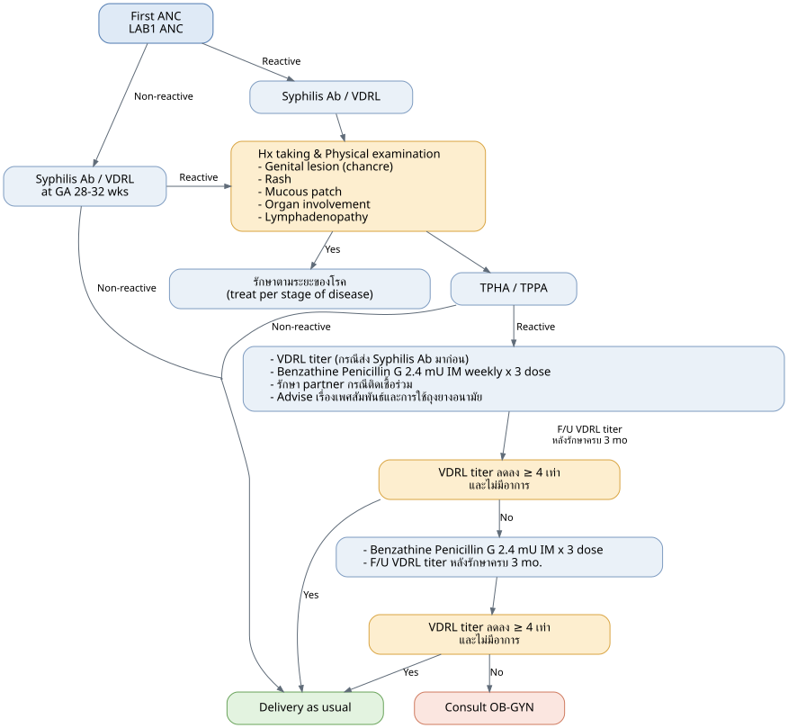
Note: Can breastfeed if there is no lesion on the breast. Low-risk infant means the mother received complete treatment, treatment was completed ≥ 1 month before delivery, and the VDRL titer decreased ≥ 4-fold.
3.14 Topic 13: โรค SLE ในหญิงตั้งครรภ์
SLE (Systemic Lupus Erythematosus) in Pregnancy
Responsible: พญ.ภัทราพร เอี้ยงลี่ | Date: 6 กันยายน 2566
Flow:
• First ANC:
• Ultrasound for confirmed GA.
• Lab baseline: CBC, BUN, Cr, PT, PTT, AST, ALT, uric acid, LDH, UA, EKG 12 lead.
• → Consult OB-GYN
• → ANC high risk clinic (MFM Clinic) + Consult medicine (internist).
Management:
• Monitor vital signs q 30-60 min.
• Monitor clinical dyspnea, chest pain, especially with EKG.
• Fetal surveillance (NST, EFM).
• Consult/Refer to OB-GYN as soon as possible. If unable - prepare ICU.
• Adequate analgesia.
• Short 2nd stage delivery or cesarean section.
3.15 Topic 14: โรคหัวใจในหญิงตั้งครรภ์
Heart Disease in Pregnancy
Responsible: พญ.ฐิติมา เสมาทอง | Date: 27 มิถุนายน 2566
14A. Antepartum management
First ANC:
• Functional class assessment.
• Ultrasound for confirmed GA.
Contraindications for pregnancy (assessed as Yes/No branch):
• Pulmonary arterial hypertension
• Severe systemic ventricular dysfunction (FC III-IV or LVEF < 30%)
• Previous peripartum cardiomyopathy with any residual impairment of left ventricular function
• Severe left heart obstruction
• Marfan syndrome with aorta dilated > 40 mm
If Contraindication = Yes:
• GA < 12 wk?
• Yes → Counselling by OB-GYN; Termination of pregnancy by OB-GYN; Consult medicine.
• No → Counselling by MFM; advise risk of pregnancy or terminated by MFM; Consult medicine.
If Contraindication = No:
• → Consult OB-GYN → ANC high risk clinic (MFM clinic) + Consult medicine.
14B. Intrapartum management
Management:
• Monitor vital sign q 30-60 min.
• Monitor clinical dyspnea, chest pain, especially with EKG.
• Fetal surveillance (NST, EFM).
• Consult/Refer to OB-GYN as soon as possible. If unable - prepare ICU.
• Adequate analgesia.
• Short 2nd stage delivery or cesarean section.
• Antibiotic prophylaxis for infective endocarditis: Ampicillin 2 gm IV stat.
3.16 Topic 15: Term PROM
Responsible: พญ.เนตรปรียา นาคงาม | Date: 6 กันยายน 2566
Definition
Term PROM: pregnant woman with GA ≥ 37 weeks with rupture of membranes:
1. Clear fluid leaking uncontrollably from the vagina, occurring suddenly or intermittently.
2. Speculum exam shows clear fluid visible in the vagina (vaginal pooling).
3. Cough test positive, or Nitrazine test positive, or Fern test positive.
Chorioamnionitis (Intraamniotic infection) - ภาวะถุงน้ำคร่ำอักเสบ
Definition: maternal fever BT ≥ 38°C x 2 occasions, 30 minutes apart, OR BT ≥ 39°C x 1 occasion, combined with any of:
1. Fetal tachycardia (Fetal heart rate baseline > 160 bpm).
2. Maternal leukocytosis (WBC count > 15,000 per mm³).
3. Uterine tenderness or foul-smelling discharge or purulent fluid from cervical os.
Note: Bishop score referenced (table/scoring content).
Management flowchart ("แนวทางการดูแลหญิงตั้งครรภ์ที่มีภาวะน้ำเดินก่อนการเจ็บครรภ์คลอดในอายุครรภ์ครบกำหนด").
แนวทางการดูแลหญิงตั้งครรภ์ที่มีภาวะน้ำเดินก่อนการเจ็บครรภ์คลอดในอายุครรภ์ครบกำหนด - Term PROM Management
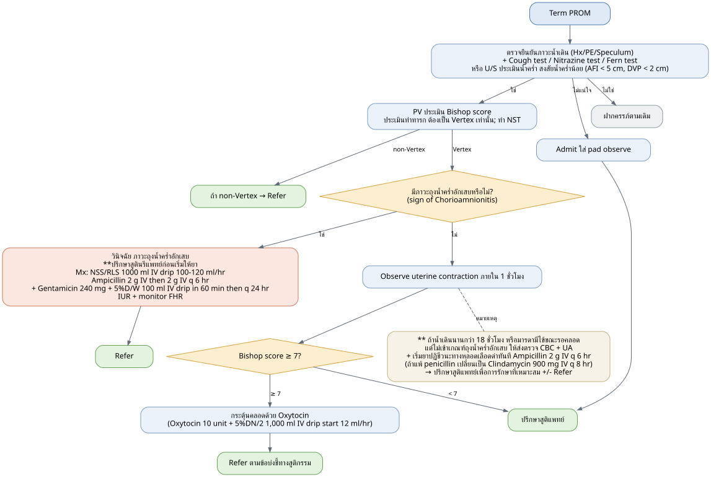
Bishop Score Table
| Score | 0 | 1 | 2 | 3 |
|---|---|---|---|---|
| Dilate, cm | Closed | 1-2 | 3-4 | ≥5 |
| Effacement, % | 0-30 | 40-50 | 60-70 | ≥80 |
| Station | -3 | -2 | -1, 0 | +1, +2 |
| Cervical consistency | Firm | Medium | Soft | - |
| Position | Posterior | Mid position | Anterior | - |
3.17 Topic 16: Antepartum Hemorrhage (ภาวะตกเลือดก่อนคลอด)
Responsible: พญ.เนตรปรียา นาคงาม | Date: 6 กันยายน 2566
Definition
Vaginal bleeding after the period of miscarriage risk has passed (generally counted from GA 20 weeks). Main high-risk causes covered: Placenta previa, Placental abruption, Uterine rupture, Vasa previa.
Causes of Antepartum Hemorrhage
| Obstetric causes | Non-obstetric causes |
|---|---|
| 1. Placenta previa (รกเกาะต่ำ) | 1. Varicose veins rupture (เส้นเลือดขอดช่องคลอดแตก) |
| 2. Placental abruption (รกลอกตัวก่อนกำหนด) | 2. Cervical lesion (รอยโรคหรือแผลที่ปากมดลูก) |
| 3. Uterine rupture (มดลูกแตก) | 3. Cervical/vaginal wall infection (ปากมดลูกหรือผนังช่องคลอดอักเสบ) |
| 4. Vasa previa rupture | 4. Cervical cancer (มะเร็งปากมดลูก) |
| 5. Excessive bloody show | 5. Abnormal coagulation (การแข็งตัวของเลือดผิดปกติ) |
Clinical presentations by cause
• Placenta previa: painless bleeding; degree of pallor correlates with blood loss; if no labor pain, fetal parts palpable and presenting part usually not engaged; U/S shows placenta below presenting part; refer to OB-GYN.
• Placental abruption (Abruptio placenta): bleeding may or may not be visible externally, with severe labor-like pain (painful bleeding), uterine tenderness, uterine tachysystole (> 5 contractions in 10 minutes); degree of blood loss symptoms does NOT correlate with visible blood; in concealed type (blood retained beneath the placenta), may have NO visible vaginal bleeding but Hct drops and DIC can occur; fetal distress may co-occur; treatment requires emergency C/S.
• Uterine rupture: continuous uterine contraction, severe lower abdominal pain, possible abnormal vital signs; Bandl's ring visible (uterus appears as two lobes); presenting part easily palpable; fetal heart sounds abnormal or absent; internal exam shows station regression (e.g., from 0 to −2); treatment requires immediate emergency C/S.
• Vasa previa rupture: internal exam reveals pulsating vessel synchronized with fetal heart rate; when ROM occurs, large volume of bleeding with sudden fetal heart rate abnormality; treatment requires immediate emergency C/S.
Management flow
"แนวทางการดูแลหญิงตั้งครรภ์ที่มีภาวะตกเลือดก่อนคลอด" - begins with assessing vital sign instability:
• Unstable vital signs criteria: BP < 90/60 mmHg, MAP < 65, HR ≥ 120 bpm, Capillary refill > 2 sec.
Antepartum Hemorrhage Management Flowchart
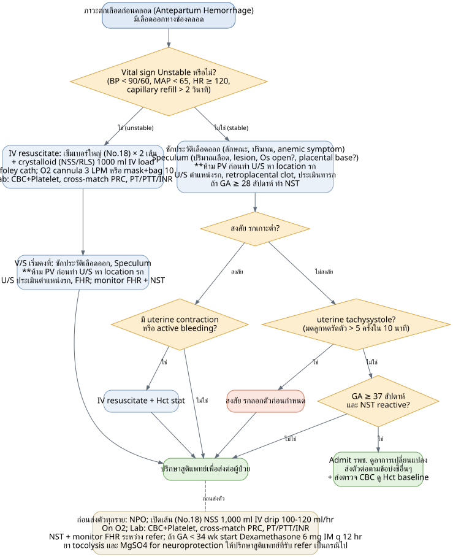
3.18 Topic 17: การกำหนดคลอดและยุติการตั้งครรภ์
Timing of Delivery and Termination of Pregnancy
Responsible: นพ.นิรทร ศรีสุโข | Date: 6 กันยายน 2566
Key definitions
• EDC / EDD = Estimated Date of Confinement / Estimated Date of Delivery = the date on which GA equals 40 weeks.
• When a pregnancy with maternal/fetal disease or complications reaches an appropriate point, termination should be considered before EDC, because continuing carries more risk than benefit ("ถึงกำหนดการคลอด" / "ถึงช่วงเวลาที่พิจารณาให้คลอด").
• Even without any disease/complication, reaching GA 41 weeks = "ครรภ์ใกล้เกินกำหนด" (near-postterm); doctor will consider terminating pregnancy (delivery, vaginal or abdominal per indication).
Specific timing rules
• Previous C/S: must have C/S in this pregnancy at GA 38-39 weeks (refer to hospital with OB-GYN from GA 34-36 weeks.)
• Term (≥ 37 weeks) with Oligohydramnios/Anhydramnios on U/S → Admit to terminate pregnancy.
• Term (≥ 37 weeks) with ROM or uncertain ROM → Admit to terminate pregnancy or assess patient.
GA milestones ("จุดสำคัญ")
• GA 34 weeks - preterm, lungs usually reasonably developed.
• GA 37 weeks - term, early period (Early term).
• GA 39 weeks - Full term.
• GA 41 weeks - Late term or Nearly post-term.
• GA 42 weeks - Post-term.
Note: for Preterm, consult OB-GYN and pediatrician to decide case-by-case between expectant management and TOP.
Contraindications to vaginal delivery
• Cephalopelvic disproportion (CPD)
• Prior uterine surgery (Previous C/S, myomectomy)
• Cervical cancer
• Abnormal presenting part (Breech / Transverse lie)
• Macrosomia
• Hydrocephalus
• Abnormal fetal heart rate / fetal distress
• Placenta previa
• Funic presentation / Vasa previa / Prolapsed cord
For patients without contraindication to vaginal delivery: assess Cervical favorability via exam/internal exam.
• Bishop score < 7 → Unfavorable cervix.
• Bishop score ≥ 7 → Favorable cervix (higher chance of successful vaginal delivery).
Induction / Augmentation of labor
• Consult OB-GYN to decide mode of delivery and medication.
• If Bishop < 7: consult OB-GYN, consider Cytotec:
• Cytotec (200 mcg) 1 tab dissolved in 200 ml water, oral 25 ml every 2 hours (Observe uterine contraction and FHR, PV every 4 hours or when indicated).
• If Bishop ≥ 7: consult OB-GYN, consider Oxytocin:
• 5% D/N/2 1000 ml + Oxytocin 10 units IV drip 12 ml/hr; titrate 6 ml/hr every 15-30 minutes until good uterine contraction (if drip rate > 60 ml/hr needed, consult OB-GYN).
Examples of appropriate delivery GA per condition
• Preterm labor / Preterm PROM at GA ≥ 34 weeks (Preterm cases individualized between expectant management and TOP).
• Term labor pain or Term PROM at GA ≥ 37 weeks.
• Term oligohydramnios/anhydramnios at GA ≥ 37 weeks.
• Previous C/S: scheduled C/S at GA 38-39 weeks (refer at GA 34-36 weeks to see OB-GYN first).
• Severe preeclampsia / Severe GHT at GA ≥ 34 weeks.
• Mild preeclampsia / GHT at GA ≥ 37 weeks.
• CHT (Chronic hypertension) at GA 37-38 weeks.
• GDM (diet control, insulin control) and overt DM: if well controlled → GA 39 weeks; if poorly controlled → GA 34-37 weeks (per OB-GYN judgment).
• Nearly postterm pregnancy at GA ≥ 41 weeks (some cases, OB-GYN considers delivery from GA ≥ 40 weeks.)
Final decision factors: contraindications to vaginal delivery, patient assessment including physical/internal exam, consult OB-GYN for co-management, decide on termination, consider induction/augmentation medications.
Delivery Timing Charts (แผนภูมิกำหนดเวลาคลอด)
Timing of delivery by indication, on a color-coded gestational-age band. The red bar marks the recommended delivery window for each condition. ที่มา (Source): Phichit CPG.
1) Hypertensive disorders, PROM / membranes, previous C/S (GA 31-39 wks)
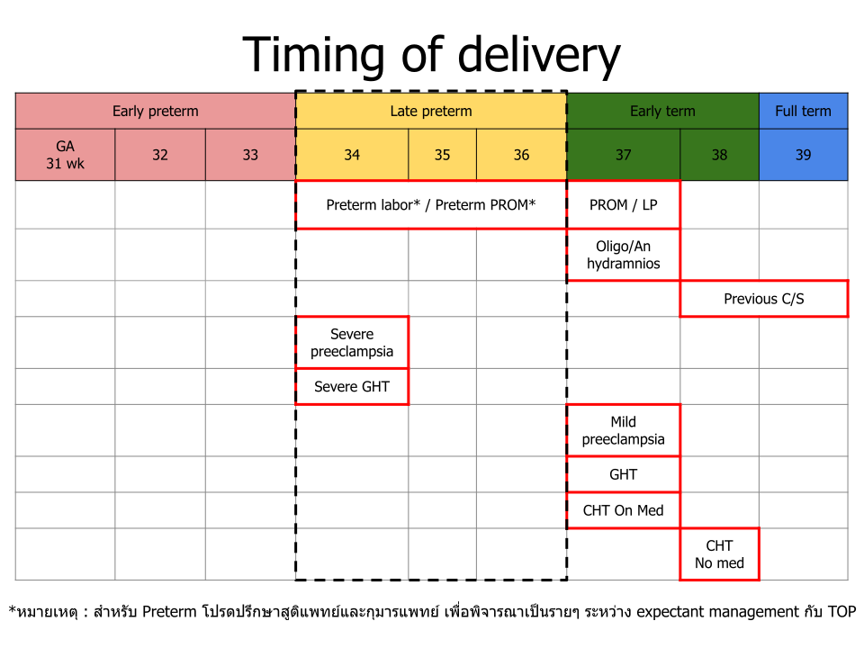
2) Diabetes, fetal growth, twins, placental conditions (GA 31-39 wks)
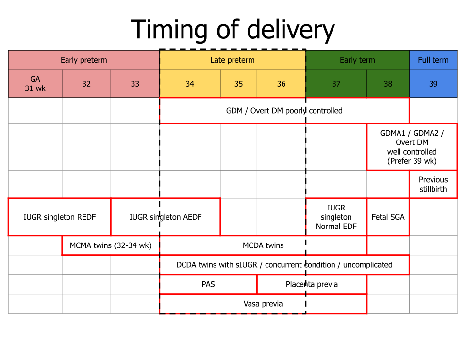
3) Full-term to post-term (GA 39-42 wks)
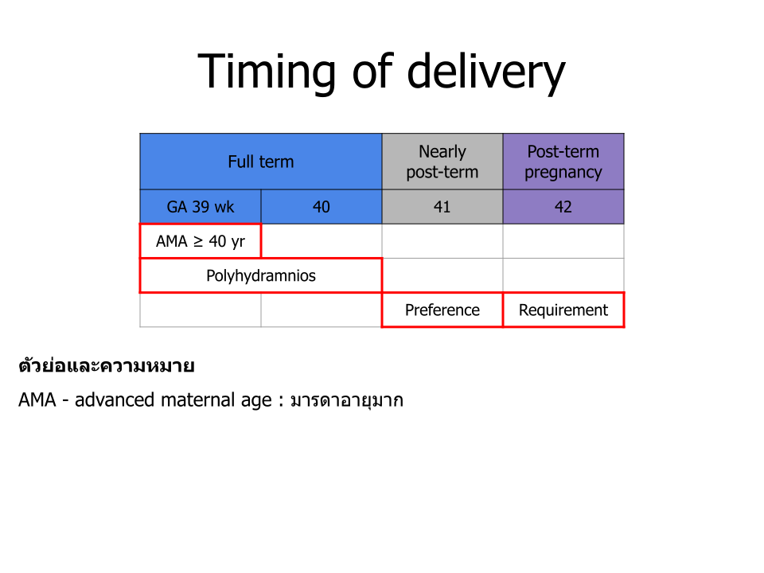
3.19 Topic 18: ระบบส่งต่อหญิงตั้งครรภ์จังหวัดพิจิตร
Referral System, Phichit Province
Responsible: นพ.นิรทร ศรีสุโข | Date: 6 กันยายน 2566
Pregnant women referred to รพ.พิจิตร (Phichit), รพ.บางมูลนาก (Bang Mun Nak), and รพร.ตะพานหิน (Taphan Hin) - 30 referral criteria:
1. Rh Negative blood type - must know father's Rh, and prior child's Rh (if any). Refer before GA 24 weeks to allow time to arrange medication.
2. Fetal distress - refer with NST results.
3. Abnormal NST: > 160 beats/min or < 110 beats/min.
4. Meconium stain.
5. Previous C/S or prior uterine surgery - refer to OB-GYN at GA 34-36 weeks.
6. Case TR (tubal resection/sterilization) or requesting sterilization.
7. Case with underlying disease, e.g., HT, DM, Thyroid, Heart disease, other medical conditions.
8. Mother with heart disease - refer to plan continued care at Phichit Hospital.
9. Twin - refer once diagnosed, to confirm diagnosis and plan care.
10. Breech, Transverse lie at GA > 34 weeks.
11. GDMA2 (Insulin control) or Overt DM.
12. Placenta previa at 34 weeks, or heavy fresh vaginal bleeding with cause not found.
13. Decreased fetal movement with U/S and NST showing Non-Reactive result.
14. Couple at risk of having a baby with one of 3 types of Thalassemia major: Homozygous Beta thalassemia or Beta⁰/Beta⁰, Beta⁰/Hb E disease, Hb Bart's hydrops fetalis.
15. Chronic HT.
16. Severe anemia: Hct ≤ 25%.
17. U/S finding: R/O Anomaly.
18. Case DFIU (Dead Fetus In Utero) - can refer at any GA, for OB-GYN to confirm.
19. ROM for 1 hour with no labor or uterus not yet contracting, or signs of infected amniotic fluid → phone consult OB-GYN to consider treatment.
20. Labor before 34 weeks and cannot be inhibited.
21. BP > 140/90 mmHg more than 2 times combined with Urine albumin > 1+, OR BP > 160/110 mmHg.
22. U/S suspects very large baby, weight > 3,800 grams.
23. Funic presentation / cord prolapse (สายสะดือย้อย).
24. Retained placenta (รกค้าง).
25. Tear rectum / Tear sphincter / Severe vaginal tear.
26. Oligohydramnios / Anhydramnios.
27. Failure vacuum extraction x 1.
28. Pregnant woman with insufficient weight gain per criteria, OR mother weight ≥ 100 kg, OR BMI ≥ 33.
29. Case where treatment isn't improving, or patient/family have high expectations and want to be referred.
30. Doctor shortage (ขาดแคลนแพทย์).
โรงพยาบาลที่รับส่งต่อหญิงตั้งครรภ์ (Receiving hospitals by specialty)
1. Heart disease: มหาวิทยาลัยนเรศวร (Naresuan University Hospital).
2. Blood disease: โรงพยาบาลสวรรค์ประชารักษ์ (Sawanpracharak Hospital).
3. Nephrotic syndrome, Renal disease: โรงพยาบาลพิจิตร (Phichit Hospital).
4. Pregnancy complications:
• Fetal anomaly / 2nd opinion needed → โรงพยาบาลสวรรค์ประชารักษ์.
• Postnatal fetal surgery needed → โรงพยาบาลสวรรค์ประชารักษ์.
5. Preterm labour: โรงพยาบาลพิจิตร, โรงพยาบาลพุทธชินราช, มหาวิทยาลัยนเรศวร, โรงพยาบาลราชวิถี.
การปฏิบัติเมื่อจะ Refer case CPD ไปรพ.พิจิตร (Protocol for referring CPD cases to Phichit Hospital)
Before diagnosis: Intermittent catheterization or empty bladder; ROM performed and good uterine contraction; cervix dilated ≥ 3 cm and effacement ≥ 80%, or in Active phase - only then can CPD be diagnosed. No cervical change for at least 2 hours, or partograph crosses the Active line.
Steps:
• Consult OB-GYN at the receiving hospital.
• Should NOT inform the pregnant woman/family that she will have surgery (before it's confirmed).
• NPO.
• Off Oxytocin - do NOT continue drip.
• Give fluids: RLS 1000 ml IV 120 ml/hr.
• After the receiving doctor accepts the case, bring NST and partograph along; call handoff report to the receiving hospital's labor room.
แนวทาง Intrauterine Transfer ของจังหวัด (Provincial intrauterine transfer guideline)
Indications of intrauterine transfer for high-risk pregnancy with labor pain:
1. รพ. F2: GA < 35 wks or Estimated BW < 2,000 grams. รพ. M2: Estimated BW < 1,500 grams.
2. Prenatal diagnosis of congenital anomalies.
3. Previous C/S.
4. Thick meconium-stained amniotic fluid.
5. Fetal distress, or EFM CAT 2, 3.
6. Twins.
7. Abnormal presentation.
8. Prolonged PROM with failed induction, or chorioamnionitis.
9. Estimated BW > 3,800 grams.
10. Prolapsed cord.
11. Anhydramnios.
12. Failed vacuum extraction x 1.
3.20 Topic 19: การคัดกรองภาวะพร่องไทรอยด์ฮอร์โมนแต่กำเนิด
Congenital Hypothyroidism Screening
Responsible: SP สาขาทารกแรกเกิด (Newborn Service Plan) | Date: 16 สิงหาคม 2566 | Source cited: ชมรมต่อมไร้ท่อเด็กและวัยรุ่นแห่งประเทศไทย (Thai Pediatric Endocrine Society), พ.ศ. 2557
Congenital Hypothyroidism Screening Algorithm
ที่มา (Source): ชมรมต่อมไร้ท่อเด็กและวัยรุ่นแห่งประเทศไทย พ.ศ. 2557
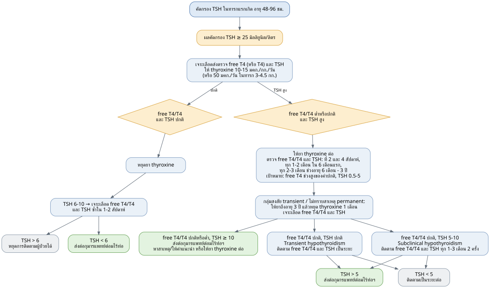
3.21 Topic 20: คำศัพท์และความหมายทางสูติกรรม
Obstetric Glossary
Responsible: SP สาขาสูติกรรม | Compiled by: งานอนามัยแม่และเด็ก กลุ่มงานส่งเสริมสุขภาพ สำนักงานสาธารณสุขจังหวัดพิจิตร (Service Plan สาขาสูติกรรม และ สาขาทารกแรกเกิด)
| Term | Thai meaning |
|---|---|
| PROM - (preterm) premature rupture of membrane | น้ำเดิน (rupture of membranes) |
| Preterm PROM | น้ำเดินในอายุครรภ์ก่อนกำหนด (ROM before term) |
| Term PROM | น้ำเดินในอายุครรภ์ครบกำหนด (ROM at term) |
| Oligohydramnios / Anhydramnios | น้ำคร่ำน้อย / ไม่มีน้ำคร่ำเลย (low / absent amniotic fluid) |
| Previous C/S - Previous Cesarean section | เคยผ่าคลอด (prior cesarean delivery) |
| Severe preeclampsia (Preeclampsia with severe features) | ความดันโลหิตสูง ≥ 160/110 mmHg ที่มีโปรตีนรั่วทางปัสสาวะ (BP ≥ 160/110 mmHg with proteinuria) |
| Severe GHT - Severe gestational hypertension | ความดันโลหิตสูง ≥ 160/110 mmHg ที่ไม่มีโปรตีนรั่วทางปัสสาวะ (BP ≥ 160/110 mmHg without proteinuria) |
| Mild preeclampsia (Preeclampsia without severe features) | ความดันโลหิตสูง ที่มีโปรตีนรั่วทางปัสสาวะ (Hypertension with proteinuria) |
| GHT - Gestational hypertension | ความดันโลหิตสูง ที่ไม่มีโปรตีนรั่วทางปัสสาวะ (Hypertension without proteinuria) |
| CHT - Chronic hypertension | ความดันโลหิตสูงเรื้อรัง ตั้งแต่อายุครรภ์ก่อน 20 สัปดาห์ (Chronic HT, onset before GA 20 weeks) |
| CHT on med | CHT ที่ได้รับยาลดความดันโลหิต (CHT on antihypertensive medication) |
| CHT no med | CHT ที่ไม่ได้รับยาลดความดันโลหิต (CHT without medication) |
| GDM - Gestational diabetes mellitus | เบาหวานขณะตั้งครรภ์ (diabetes during pregnancy) |
| GDMA1 | GDM diet control |
| GDMA2 | GDM insulin control |
| Overt DM - diabetes mellitus | เบาหวานก่อนตั้งครรภ์ (pre-existing diabetes) |
| Previous stillbirth | ครรภ์ก่อน บุตรตายคลอด (prior stillbirth) |
| IUGR - Intrauterine growth retardation = FGR (Fetal growth restriction) | ทารกโตช้าในครรภ์ |
| EDF - End diastolic flow (at umbilical artery) | การไหลเวียนเลือดที่สายสะดือทารกในช่วงหัวใจคลายตัว |
| - Normal | ปกติ |
| - AEDF - Absent EDF | ไม่มีการไหลเวียนเลือด |
| - REDF - Reverse EDF | การไหลเวียนเลือดย้อนกลับ |
| SGA - small for gestational age | ทารกตัวเล็ก (แต่ไม่ได้โตช้า) |
| MCMA twins - Monochorionic Monoamniotic twins | ครรภ์แฝดที่ทารกอยู่ในถุงน้ำคร่ำเดียวกัน ใช้รกร่วมกัน |
| MCDA twins - Monochorionic Diamniotic twins | ครรภ์แฝดที่ทารกอยู่คนละถุงน้ำคร่ำ แต่ใช้รกร่วมกัน |
| DCDA twins - Dichorionic Diamniotic twins | ครรภ์แฝดที่ทารกอยู่คนละถุงน้ำคร่ำ และต่างมีรกของตนเอง |
| sIUGR - selective IUGR | ทารกโตช้าในครรภ์ หนึ่งคน (IUGR affecting one twin) |
| PAS - Placenta Accreta Spectrum | รกมีการเกาะที่ผิดปกติ เกาะทะลุ เช่น Placenta percreta |
| Placenta previa | รกเกาะต่ำ |
| Vasa previa | สายสะดือเกาะต่ำ |
| AMA - advanced maternal age | มารดาอายุมาก |
Part 4 - Ward Rounds & How to Order
Ready-to-write admission, post-op and discharge orders as a ward quick-reference. Keep drugs, doses and routes exactly as written, and always cross-check against the current Phichit CPG (Part 3) and your ward's protocol before use.
4.1 Obstetric admission & order sets
Format of the source: each topic is a one-page order sheet with a One Day (one-time/admission) column and a Continue (standing/daily) column. Doses are as written by the author; verify locally.
Term pregnancy, in labor
One Day: Admit LR; observe UC, FHS; monitor EFM; NPO; 5%DN/2 1,000 ml IV 100 ml/hr; Unison enema 1 bottle PR.
• If GDM / overt DM: DTX q 1-2 hr, keep NPO.
• If starting oxytocin drip: 5%DN/2 1,000 ml + oxytocin 10 unit IV 12 ml/hr, titrate to good UC ,
Acetar 1,000 ml IV 70-80 ml/hr as maintenance.
Continue: record vital signs; NPO.
Post normal labor (day 0)
One Day: 5%DN/2 1,000 ml + oxytocin 10 u IV 100 ml/hr, off when finished; observe voiding (if cannot void in 4-6 hr, notify + CIC); observe vaginal bleeding; promote ambulation and breastfeeding.
Continue: record vital signs; regular diet. Medication: Triferdine 1 tab PO tid pc; Paracetamol (500) 1 tab PO prn q 4-6 hr; may add NSAID for severe pain - Ibuprofen (400) 1 tab PO tid pc or Naproxen (250) 1 tab PO bid pc.
Post normal labor, discharge day
Discharge; F/U postpartum clinic 6 wk; 75 g OGTT at 6 wk (if GDM). Home meds: Paracetamol (500) 1 tab PO prn q 4-6 hr; Triferdine 1 tab PO od pc; may add Ibuprofen (400) 1 tab PO tid pc (pain) and Lactulose 30 ml PO prn hs (constipation).
Normal labor with PPH from uterine atony
One Day: open IV No.16 x 2 lines; Acetar / NSS 1 L IV loading (second line = IV + existing oxytocin); retain Foley catheter; blood for CBC, coagulogram; G/M PRC : FFP : Platelet = 1 : 1 : 1 unit; oxygen cannula 3 LPM. Give uterotonics together:
• 5%DN/2 1,000 ml + oxytocin 40 unit IV 100-120 ml/hr.
• Methergine 0.2 mg IM stat then repeat q 15 min (max 5 doses) - do NOT use in hypertension (IV risks severe hypertension/stroke; align with the PPH order tables).
• Cytotec (200) 3-5 tabs PR / SL.
• Transamine 1 g IV stat.
• Notify anaesthesia team to prepare for procedures under GA (e.g. B-Lynch, hysterectomy).
Preterm labor, GA < 34 wk
One Day: Admit LR; NPO; 5%DN/2 1,000 ml IV 100 ml/hr; blood for CBC; UA, UC; rectovaginal swab culture; TAS; monitor EFM; observe UC, FHS; Dexamethasone 6 mg IM q 12 hr x 4 doses; Ampicillin 2 g IV q 6 hr; notify PED newborn team. Tocolytic (choose one):
• Nifedipine (10) 1 tab PO q 15 min x 4 doses, or
• Bricanyl 4 amp + 5%DW 100 ml IV 10-15 ml/hr, titrate until no UC, or
• 10% MgSO4 4 g IV slow push over 20 min, then 50% Mg 80 ml + 5%DW 920 ml IV 50 ml/hr (2 g/hr).
Continue: record vital signs; NPO.
Preterm labor, GA >= 34 wk
One Day: same as above (Admit LR; NPO; 5%DN/2 100 ml/hr; CBC; UA/UC; rectovaginal swab culture; TAS; monitor EFM; observe UC, FHS; Dexamethasone 6 mg IM q 12 hr x 4 doses; Ampicillin 2 g IV q 6 hr; notify PED) but NO tocolytic at this GA.
Preterm PROM, GA < 34 wk
One Day: Admit LR; NPO; 5%DN/2 1,000 ml IV 100 ml/hr; CBC; UA, UC; rectovaginal swab culture; TAS; monitor EFM; observe for chorioamnionitis (keep PR < 100 bpm, watch BT, lochia, abdominal pain); Dexamethasone 6 mg IM q 12 hr x 4 doses; Ampicillin 2 g IV q 6 hr x 48 hr then Amoxicillin (250) 1 tab PO tid pc x 5 days (total antibiotic course = 7 days); notify PED.
Preterm PROM, GA >= 34 wk
One Day: Admit LR; NPO; 5%DN/2 100 ml/hr; CBC; UA/UC; rectovaginal swab culture; TAS; monitor EFM; observe UC, FHS; Dexamethasone 6 mg IM q 12 hr x 4 doses; Ampicillin 2 g IV q 6 hr; notify PED. Counsel on expectant vs IOL.
Term (+/- labor), BP 140-159 / 90-110 mmHg
One Day: Admit LR; NPO; 5%DN/2 100 ml/hr; blood for CBC with PBS, BUN/Cr, LFT, LDH, uric acid; UA, UPCR; bedside urine dipstick; monitor EFM; observe UC, FHS; watch for headache / blurred vision / epigastric pain; keep BP < 160/110 mmHg. Plan vaginal delivery; C/S for obstetric indication.
Term (+/- labor), suspected preeclampsia with severe features
One Day: Admit LR; NPO; CBC with PBS, BUN/Cr, LFT, LDH, uric acid; UA, UPCR, bedside dipstick; monitor EFM; observe UC/FHS and severe-feature symptoms.
• 10% MgSO4 4 g IV slow push over 20 min, then 50% Mg 80 ml + 5%DW 920 ml IV 50 ml/hr (2 g/hr).
• 5%DN/2 1,000 ml IV 50 ml/hr; check Mg level 4 hr after starting drip (keep 4.8-8.4 mg/dL).
• Retain Foley; keep urine output > 0.5 ml/kg/hr; keep DTR > 1+, RR > 14/min; prepare 10% Ca gluconate 1 amp.
• If BP still > 160/110 mmHg, add antihypertensive: Labetalol 20 mg IV stat (then 40 then 80 mg q 10-30 min), or Hydralazine 5-10 mg IV (repeat q 15-20 min), or Nifedipine (10) 1 tab PO stat (repeat q 20 min).
Set C/S emergency
One Day: Admit LR; NPO; set OR for emergency C/S due to ......; Acetar 1,000 ml IV 100 ml/hr; prep and shave perineum + lower abdomen; T/S or G/M PRC 1 unit; antibiotic prophylaxis - Cefazolin 2 g IV, or Clindamycin 900 mg IV + Gentamicin 240 mg IV (if cephalosporin allergy); observe UC/FHS; monitor EFM.
Pre-op C/S (elective, admit ward)
One Day: Admit ward; NPO after midnight; set OR for C-section due to ...... (DD/MM/YY); Acetar 1,000 ml IV 100 ml/hr; prep and shave; T/S or G/M PRC 1 unit (2+ units if high PPH risk); antibiotic prophylaxis as above. Some hospitals add: Unison enema 1 bottle PR and chlorhexidine shower on the morning of surgery.
Post-op C/S, day 0
One Day: record V/S q 15 min x 4, then q 30 min x 2, then q 1 hr until stable, then routine; 5%DN/2 + oxytocin 10-20 u IV 100-120 ml/hr (x 2 bottles); sips of water on ward, soft diet next day; retain Foley, keep UOP >= 0.5 ml/kg/hr; on pad, observe vaginal bleeding; pain control per anaesthesia. If GA/spinal without intrathecal morphine: Morphine 3 mg IV prn q 4 hr (pain); Plasil 10 mg IV prn q 6 hr (N/V).
Continue: record vital signs, I/O; diet as one-day order.
Post-op C/S, day 1
One Day: IV off when finished (or off now); off Foley; promote ambulation and breastfeeding.
Continue: record vital signs; soft/regular diet. Medication: Ibuprofen (400) 1 tab PO tid pc; Paracetamol (500) 1 tab PO q 6 hr or prn q 4-6 hr; Triferdine 1 tab PO od pc. May add Air-X 1 tab PO tid pc (bloating), Motilium (10) 1 tab PO tid ac (N/V).
Post-op C/S, discharge day
Discharge; F/U อนามัย 1-2 wk (per hospital); F/U postpartum clinic 6 wk; 75 g OGTT 6 wk (if GDM). Home meds: Ibuprofen (400) 1 tab PO tid pc; Paracetamol (500) 1 tab PO prn q 4-6 hr; Triferdine 1 tab PO od pc; may add Air-X, Motilium, Lactulose as needed.
Pre-op PPTL (postpartum tubal ligation)
One Day: NPO after midnight; set OR PPTL (DD/MM/YY); 5%DN/2 1,000 ml IV 100 ml/hr on the day of surgery; void before OR; weigh patient and check Hct% on the morning of surgery.
Post-op PPTL
One Day: record V/S q 15 min x 4, q 30 min x 2, q 1 hr until stable, then routine; IV off when finished; observe voiding (if cannot void in 4-6 hr, notify + CIC); observe vaginal bleeding.
Continue: record vital signs; regular diet. Medication: Triferdine 1 tab PO tid pc; Paracetamol (500) 1 tab PO prn q 4-6 hr; add NSAID - Ibuprofen (400) tid pc or Naproxen (250) bid pc.
Hyperemesis gravidarum
One Day: Admit ward; blood for BUN, Cr, TFT, electrolytes; UA; NSS 1,000 ml + Thiamine 100 mg IV 100-120 ml/hr; antiemetic (choose one) - Plasil 10 mg IV q 6 hr or Ondansetron 8 mg IV q 8 hr.
Continue: record V/S; soft diet as tolerated. Medication (not all needed): Vitamin B6 1 tab PO bid pc; Motilium (10) 1 tab PO tid ac; Dimenhydrinate (50) 1 tab PO tid pc.
4.2 Gynecology peri-op & PID order sets
Pre-op GYN major operation (admit ward)
One Day: Admit ward; NPO after midnight; set OR for TAH-BSO (e.g.) (DD/MM/YY); 5%DN/2 1,000 ml IV 100 ml/hr; prep and shave perineum + lower abdomen; G/M PRC 1 unit; antibiotic prophylaxis - Cefazolin 2 g IV, or Clindamycin 900 mg IV + Gentamicin 240 mg IV (if cephalosporin allergy). Some hospitals add Unison enema PR and chlorhexidine shower on the day of surgery.
Pre-op GYN minor operation (admit ward)
One Day: Admit ward; NPO after midnight; set OR for FC / MVA (e.g.) (DD/MM/YY); 5%DN/2 1,000 ml IV 100 ml/hr; void before OR; Cytotec (200) 1-2 tab SL about 2 hr before surgery.
Post-op TAH / SO / ovarian cystectomy / salpingectomy, day 0
One Day: record V/S q 15 min x 4, q 30 min x 2, q 1 hr until stable, then routine; 5%DN/2 1,000 ml IV 100-120 ml/hr; sips of water, soft diet next day; retain Foley, keep UOP >= 0.5 ml/kg/hr; on pad, observe vaginal bleeding; pain control per anaesthesia. If GA/spinal without morphine: Morphine 3 mg IV prn q 4 hr; Plasil 10 mg IV prn q 6 hr.
Continue: record vital signs, I/O; diet as one-day order.
Post-op TAH / cystectomy, day 1
One Day: IV off when finished; off Foley; promote ambulation.
Continue: record vital signs; soft/regular diet. Medication: Ibuprofen (400) 1 tab PO tid pc; Paracetamol (500) 1 tab PO q 6 hr or prn. May add Air-X, Motilium.
Post-op TAH / cystectomy, discharge day
Discharge; F/U อนามัย 1-2 wk + pathology result; F/U OPD to check vaginal stump at 6 wk (if hysterectomy). Home meds: Ibuprofen (400) tid pc; Paracetamol (500) prn; may add Air-X, Motilium, Lactulose.
Acute PID (requiring admission)
One Day: Admit GYN ward; 5%DN/2 1,000 ml IV 100 ml/hr; blood for CBC, UA, H/C x II, BUN, Cr, electrolytes; Anti-HIV, VDRL, HBsAg; vaginal swab culture; observe abdominal signs.
Continue: record vital signs; soft/regular diet (NPO if still observing abdomen). Medication: Ceftriaxone 1 g IV q 24 hr; Metronidazole 500 mg IV q 12 hr; Doxycycline (100) 1 tab PO bid pc; Paracetamol (500) prn.
Acute PID, improved after IV antibiotics (discharge)
Discharge; F/U in 1 wk. Home meds: Metronidazole (400) 1 tab PO tid pc; Doxycycline (100) 1 tab PO bid pc; Paracetamol (500) prn. Total antibiotic course = 14 days including the IV days.
4.3 Common drugs quick reference
OPD ANC
• Vitamins: 1st trimester - Folic (5) 1 tab PO bid pc, or Triferdine 1 tab PO od pc (folate alone is preferred in early pregnancy). 2nd trimester (iron + calcium focus) - Triferdine od, or Obimin AZ / Natural / FBC / FF od; may add Ferrous fumarate (200) od and CaCO3 (1,250) od.
• Symptom relief: nausea/vomiting - Dimenhydrinate (50) tid pc, Vitamin B6 od/bid pc, Ondansetron (4) tid pc, Metoclopramide (10) tid pc. Bloating - Gaviscon 20 ml tid pc. Constipation - Lactulose 30 ml prn hs.
• Must-know drugs: ASA (81) 2 tab PO hs (preeclampsia prevention, GA 12-36 wk); Utrogestan (200) 1 tab vaginal suppository (preterm prevention, GA 16-36 wk); Amoxycillin (500) 1 tab PO tid pc x 3 days (asymptomatic bacteriuria/UTI).
OPD GYN
• Abnormal discharge: BV / Trichomonas - Metronidazole (200) 2 tab PO tid pc x 7 days, or Metronidazole 2 g PO single dose. Vulvovaginal candidiasis - Fluconazole (200) 1 tab PO single dose, or Clotrimazole (100) 1 tab vaginal suppository x 7 days, or Clotrimazole (200) x 3 days. Recurrent VVC - Fluconazole (200) on days 1, 4, 7 then weekly x 6 months.
• Acute PID (OPD, 14-day course): Ceftriaxone 500 mg IM single dose + Metronidazole (400) 1 tab PO bid pc + Doxycycline (100) 1 tab PO bid pc; or Levofloxacin (500) 1 tab PO od + Metronidazole (400) bid pc (if penicillin allergy).
• Progestin challenge test: Provera 10 mg/day PO 5-7 days, or Primolut N 5 mg/day PO 5-7 days. Cyclic progesterone: Provera 10 mg/day PO 11-14 days/month, or Primolut N 5 mg/day PO 11-14 days/month.
Intraamniotic infection (chorioamnionitis) antibiotics
| Situation | Regimen |
|---|---|
| Primary | Ampicillin 2 g IV q 6 hr AND Gentamicin 2 mg/kg IV load then 1.5 mg/kg q 8 hr, or 5 mg/kg IV q 24 hr |
| Mild penicillin allergy | Cefazolin 2 g IV q 8 hr AND Gentamicin (as above) |
| Severe penicillin allergy | Clindamycin 900 mg IV q 8 hr (or Vancomycin 1 g IV q 12 hr) AND Gentamicin (as above) |
| Post-cesarean add-on | One additional dose of the regimen; add Clindamycin 900 mg IV or Metronidazole 500 mg IV x 1 |
| Alternatives | Ampicillin-sulbactam 3 g IV q 6 hr; Piperacillin-tazobactam 3.375 g IV q 6 hr or 4.5 g q 8 hr; Cefotetan 2 g IV q 12 hr; Cefoxitin 2 g IV q 8 hr; Ertapenem 1 g IV q 24 hr |
4.4 Practical ward tools (extras from the OB review section)
Oxytocin infusion - titration and worked example
• Common written order: "5%DN/2 (or crystalloid) 1,000 ml + Oxytocin 10 U IV drip 12 ml/hr, titrate up/down by 6 ml/hr q 15-40 min until good UC."
• Starting dose: low-dose regimen 0.5-2 mU/min; high-dose regimen 4-6 mU/min.
• Dilution math (as taught): 1,000 ml + Oxytocin 10 U = 10,000 mU total, so 1 ml carries 10 mU. Therefore 1 ml/min = 10 mU/min; 0.2 ml/min = 2 mU/min. To convert a per-minute rate to ml/hr, multiply by 60 (e.g. 0.2 ml/min x 60 = 12 ml/hr, a low-dose start).
• Failed induction: membranes ruptured with adequate UC but no cervical change after oxytocin for at least 12-18 hr (do not set C/S before 15 hr); or membranes intact with adequate UC every 3 min but no change after at least 24 hr.
Intrauterine resuscitation (Category II/III FHR)
Reposition to side-lying; give IV bolus; stop oxytocin; give oxygen; do a PV to rule out occult cord prolapse. (Source mnemonic: "นอนตะแคง แทง IV หนึ่ง synto flow oxygen อย่าลืม PV ระวัง cord prolapse".)
Postpartum round checklist - the "10 B's"
Blues, Breast, Belly, Bottom, Bladder, Bleeding, Boinking (sexual intercourse), Baby, Bowel, Birth control. Use it as a head-to-toe review on every postpartum round (e.g. Bladder: watch for retention/overdistension after epidural, C/S, perineal laceration, prolonged pushing or operative delivery).
Peri-operative (ERAS) pearls
Informed consent (diagnosis, goals/limits, risks, chance of transfusion); admit 1 day pre-op for OB and anaesthesia assessment; ERAS no longer recommends routine bowel preparation; usual blood prep T/S or G/M PRC 1 unit (more if PPH risk); prefer regional analgesia; slight right-hip/lower-back elevation improves venous return; resume liquids/solids early post-op to speed return of bowel function.
Abbreviations
แนวคิดหลัก (Key concept): ตัวย่อที่ใช้บ่อยในคู่มือนี้ (ชุดหลักมาจากตำราต้นฉบับ และเพิ่มบางตัวที่ใช้ในเนื้อหาเพื่อความเข้าใจ)
| Abbr. | Meaning | Abbr. | Meaning |
|---|---|---|---|
| AF | amniotic fluid | MR | membrane rupture |
| ANC | antenatal care | Mx | management |
| APH | antepartum hemorrhage | N/V | nausea & vomiting |
| ARM | artificial rupture of membrane | NPO | nothing per os (nil by mouth) |
| ART | assisted reproductive technology | NST | non-stress test |
| ASCUS | atypical squamous cells of undetermined significance | OCP | oral contraceptive pill |
| ATB | antibiotic | OFT | osmotic fragility test |
| AUB | abnormal uterine bleeding | OGTT | oral glucose tolerance test |
| AVB / AVB | abnormal vaginal bleeding | OHGD | oral hypoglycemic drugs |
| BBT | basal body temperature | Operative OB | operative obstetrics (V/E, F/E) |
| BE | bacterial endocarditis | PCT | progestin challenge test |
| BS | blood sugar | PE | physical examination |
| BSO | bilateral salpingo-oophorectomy | PG | prostaglandins |
| BV | bacterial vaginosis | PGDM | pregestational diabetes mellitus |
| c | with | PHx | past history |
| C&S | culture & sensitivity | PID | pelvic inflammatory disease |
| C/I | contraindication | PIH | pregnancy-induced hypertension |
| C/S | cesarean section | PND | prenatal diagnosis |
| CDB | colposcopic-directed biopsy | PP | postpartum |
| CPD | cephalopelvic disproportion | PPH | postpartum hemorrhage |
| CPP | chronic pelvic pain | PROM | premature rupture of membranes |
| Cx | cervix | Pt | patient |
| D&C | dilatation & curettage | PV / PR | per vaginal / per rectal exam |
| D/C | discharge; or discontinue (per context) | R/O | rule out |
| DCIP | dichlorophenol-indophenol test (Hb E screen) | RI | regular insulin |
| DFIU | dead fetus in utero | ROM | rupture of membranes |
| DI | detrusor instability | Rx | treatment |
| DMPA | depot medroxyprogesterone acetate | s | without |
| DTX | capillary blood glucose (dextrostix) | S&S | symptoms & signs |
| DUB | dysfunctional uterine bleeding | SA | semen analysis |
| ECC | endocervical curettage | SGA | small for gestational age |
| ECV | external cephalic version | TAH | total abdominal hysterectomy |
| EFHRM | electronic fetal heart rate monitoring | TM | trimester |
| EFW | estimated fetal weight | TOA | tubo-ovarian abscess |
| EPF | early pregnancy failure | TR | tubal resection (ligation) |
| F/E | forceps extraction | TV | Trichomonas vaginalis |
| F/U | follow up | TVS | transvaginal sonography |
| FC | fractional curettage | U/S | ultrasound |
| FHR / FHS | fetal heart rate / sound | UA | urinalysis |
| FHx | family history | UCF | unsatisfactory colposcopic finding |
| FMC | fetal movement count | UPT | urine pregnancy test |
| FMS | fetomaternal surveillance | V/E | vacuum extraction |
| G/M | group & match (blood) | V/S | vital signs |
| GA | gestational age | VCT | venous clotting time |
| GBS | group B streptococcus | VDRL | Venereal Disease Research Lab test |
| GC | gonococcus / gonorrhea | Vsl | vessel |
| GDM | gestational diabetes mellitus | WNL | within normal limits |
| GSI | genuine stress incontinence | TPHA | Treponema pallidum hemagglutination |
| GST | glucose screening test | FTA-ABS | fluorescent treponemal antibody absorption |
| HRT | hormonal replacement therapy | LSIL | low-grade squamous intraepithelial lesion |
| HSG | hysterosalpingography | LEEP | loop electrosurgical excision procedure |
| IPM | intrapartum monitoring | IVP | intravenous pyelography |
| IUD | intrauterine device | IUGR | intrauterine growth restriction |
| IUI | intrauterine insemination | LMP | last menstrual period |
| IUR | intrauterine resuscitation | IVF | in vitro fertilization |
| LGA | large for gestational age | FBS / pp | fasting blood sugar / postprandial |
บรรณานุกรม (Bibliography & Sources)
แนวคิดหลัก (Key concept): คู่มือนี่อ้างอิงจาก ตำรา หนังสือ บทความ Survival Guides หลายส่วนประกอบกัน
และมีการใช้ AI (Claude Cowork/Claude Code) ในการประมวลผลสำหรับแหล่งที่มาของข้อมูลต่างๆ เพื่อสะดวกต่อการทำความเข้าใจของผู้ที่เริ่มต้น
โดย ผู้เรียบเรียงพยายามปรับให้เนื้อหามีความถูกต้องมากที่สุด แต่อาจไม่สมบูรณ์ 100%
ผู้อ่านสามารถตรวจทาน และ มีส่วนร่วมในการให้คำแนะนำในเนื้อหาในส่วนนั้น ผ่านการกดคลิกขวา "ให้ข้อเสนอแนะ"
เพื่อร่วมกันพัฒนาเนื้อหาต่างๆ ในคู่มือนี้ได้
อนึ่ง หากมีข้ออภิปรายทางวิชาการ หรือ ต้องการการอ้างอิงเชิงวิชาการ แนะนำอ่าน Standard Textbooks และ Research Papers
ตามแนวทางมาตรฐานของ Evidence-based Medicine
1 ชมรมต่อมไร้ท่อเด็กและวัยรุ่นแห่งประเทศไทย. แนวทางการคัดกรองภาวะพร่องไทรอยด์ฮอร์โมนแต่กำเนิด, พ.ศ. 2557.
2 ชุดคู่มือ "รวม_พี่เด้นท์สูติซอยอะไร" โดย คุณเจ๋: ราวน์วอร์ดสูติ หนูต้องรอด (How to order?), GYNE Part, OB Part, Gynecology for NL Step 2, HACK OBGYN EXAM (NL2 2009-2024). [Part 5]
3 ธีระ ทองสง, จตุพล ศรีสมบูรณ์, อภิชาต โอฬารรัตนชัย. นรีเวชวิทยา (ฉบับสอบบอร์ด). เรียบเรียงครั้งที่ 2. กรุงเทพฯ: พี.บี. ฟอเรน บุ๊คส เซนเตอร์, พ.ศ. 2539.
4 แนวทางการดูแลหญิงตั้งครรภ์จังหวัดพิจิตร ฉบับปรับปรุง พ.ศ. 2566. สำนักงานสาธารณสุขจังหวัดพิจิตร (Service Plan สาขาสูติกรรมและสาขาทารกแรกเกิด). [Part 3]
5 ราชวิทยาลัยสูตินรีแพทย์แห่งประเทศไทย (RTCOG): แนวทางการดูแลรักษาภาวะเจ็บครรภ์คลอดก่อนกำหนด (พฤศจิกายน 2564); แนวทางการป้องกันและรักษาภาวะตกเลือดหลังคลอด (20 มีนาคม 2563).
6 American Psychiatric Association. DSM-5 (criteria for premenstrual dysphoric disorder).
7 Arora R, Arora D. Quick Review Obstetrics & Gynecology. 2nd ed. Clinical Medical Education Center, Lampang Hospital, 2008
8 Bader TJ. Ob/Gyn Secrets. 3rd ed. Henley & Belfus Inc., 2003.
9 Berek JS. Berek & Novak's Gynecology. 14th ed. Baltimore: Lippincott Williams & Wilkins, 2007
10 Berek JS. Berek & Novak Gynecology, 16th ed.
11 CDC Sexually Transmitted Infections Treatment Guidelines
12 Cunningham FG, Leveno KJ, Bloom SL, Hauth JC, Gilstrap LC III, Wenstrom KD. Williams Obstetrics. 22nd ed. New York: McGraw-Hill, 2005
13 FIGO staging systems (as cited): cervical cancer 2018; endometrial cancer; ovarian cancer 2014; uterine sarcoma 2018.
14 Obstetrics and Gynecology (SWU). 12th ed., 2018. Medical Students Association, Srinakharinwirot University. [cross-checked for differences]
15 Obstetrics Year 5. By H!n3zSo, 1st ed., 2017. Thai obstetrics study notes
16 Pocket Med SWU: Obstetrics-Gynecology. 16th ed., 2022. Medical Student Association, Srinakharinwirot University. [Part 4]
17 The Bethesda System 2001 and ASCCP management guidelines; cervical cancer screening per ACS/ASCCP/ASCP and USPSTF
18 TOP SI 117 - OB-GYN. N. Srikanchanawat (TNS Siriraj 117). Thai clinical-clerkship summary
19 World Health Organization. WHO recommendations on antenatal care for a positive pregnancy experience, 2016 (8-contact ANC model).
หมายเหตุ: บรรณานุกรมนี้ระบุเฉพาะเอกสารต้นฉบับในโฟลเดอร์และแนวทางเวชปฏิบัติที่ถูกอ้างอิงไว้จริงในเอกสารเหล่านั้น
ไม่มีการสร้างการอ้างอิงหรือรายชื่อบทความที่ไม่มีอยู่จริง.
สื่อการสอนอื่นๆ (Other Learning Materials)
แนวคิดหลัก (Key concept): สื่อการสอนแบบ interactive สำหรับฝึกทักษะและใช้สาธิตให้ผู้เรียน เปิดใช้งานได้ฟรีบนเว็บเบราว์เซอร์
(ครั้งแรกอาจใช้เวลาโหลดสักครู่)
◆ CTG Reader : ฝึกอ่าน CTG / EFM
อ่านและแปลผลกราฟ CTG (external fetal monitoring) อย่างเป็นระบบด้วย DR C BRAVADO พร้อมตัวอย่างการอ่าน (worked examples) และการจัดกลุ่มตาม FIGO 2015
◆ OB-GYN Ultrasound Trainer : จำลองอัลตราซาวด์
กายวิภาคอุ้งเชิงกรานสตรีแบบ 3 มิติ และการจำลองการตรวจอัลตราซาวด์ ทั้งทางหน้าท้อง (TAS) และทางช่องคลอด (TVS) ในระนาบ sagittal และ transverse
https://obgyn-ultrasound-trainer.onrender.com/simulation.html
ให้ข้อเสนอแนะภาพรวม (Overall feedback)
สแกน QR หรือแตะปุ่มเพื่อเปิดแบบฟอร์ม Google Form